| Start 2012, 500 yr, kCOV=1.16, Spontaneous, Historical Catalog | |
|---|---|
| Num Simulations | 1000 |
| Start Time | 2012/01/01 00:00:00 UTC |
| Start Time Epoch Milliseconds | 1325376000000 |
| Duration | 500 Years |
| Includes Spontaneous? | true |
| Trigger Ruptures | (none) |
| Trigger Ruptures | 60366 Trigger Ruptures |
| First: M7.3 at 1852/01/05 04:40:39 UTC | |
| Last: M3.2 at 2011/12/31 19:14:44 UTC | |
| Largest: M7.9 at 1857/01/09 16:25:39 UTC | |
| Config Generated With | u3etas_config_builder.sh --start-year 2012 --num-simulations 1000 --duration-years 500 --include-spontaneous --historical-catalog --etas-k-cov 1.16 --random-seed 123456789 --hpc-site USC_HPC --nodes 36 --hours 24 --queue scec |
| Magnitude | 1 Hour Prob | 1 Day Prob | 1 Week Prob | 1 Month Prob | 1 Year Prob | 10 Year Prob | 30 Year Prob | 100 Year Prob | 500 Year Prob |
|---|---|---|---|---|---|---|---|---|---|
| M≥5 | 0.000 (0.00%) | 9.00E-3 (0.90%) | 0.076 (7.60%) | 0.296 (29.60%) | 0.989 (98.90%) | 1.000 (100.00%) | 1.000 (100.00%) | 1.000 (100.00%) | 1.000 (100.00%) |
| 95% Conf | [0.00% 0.48%] | [0.44% 1.77%] | [6.07% 9.46%] | [26.80% 32.55%] | [97.98% 99.42%] | [99.52% 100.00%] | [99.52% 100.00%] | [99.52% 100.00%] | [99.52% 100.00%] |
| M≥5.5 | 0.000 (0.00%) | 4.00E-3 (0.40%) | 0.024 (2.40%) | 0.117 (11.70%) | 0.796 (79.60%) | 1.000 (100.00%) | 1.000 (100.00%) | 1.000 (100.00%) | 1.000 (100.00%) |
| 95% Conf | [0.00% 0.48%] | [0.13% 1.10%] | [1.58% 3.61%] | [9.81% 13.89%] | [76.94% 82.03%] | [99.52% 100.00%] | [99.52% 100.00%] | [99.52% 100.00%] | [99.52% 100.00%] |
| M≥6 | 0.000 (0.00%) | 4.00E-3 (0.40%) | 0.011 (1.10%) | 0.041 (4.10%) | 0.461 (46.10%) | 0.995 (99.50%) | 1.000 (100.00%) | 1.000 (100.00%) | 1.000 (100.00%) |
| 95% Conf | [0.00% 0.48%] | [0.13% 1.10%] | [0.58% 2.02%] | [2.99% 5.57%] | [42.98% 49.25%] | [98.77% 99.82%] | [99.52% 100.00%] | [99.52% 100.00%] | [99.52% 100.00%] |
| M≥6.5 | 0.000 (0.00%) | 1.00E-3 (0.10%) | 2.00E-3 (0.20%) | 9.00E-3 (0.90%) | 0.198 (19.80%) | 0.876 (87.60%) | 0.997 (99.70%) | 1.000 (100.00%) | 1.000 (100.00%) |
| 95% Conf | [0.00% 0.48%] | [0.01% 0.65%] | [0.03% 0.80%] | [0.44% 1.77%] | [17.40% 22.44%] | [85.36% 89.55%] | [99.05% 99.92%] | [99.52% 100.00%] | [99.52% 100.00%] |
| M≥7 | 0.000 (0.00%) | 0.000 (0.00%) | 1.00E-3 (0.10%) | 2.00E-3 (0.20%) | 0.070 (7.00%) | 0.457 (45.70%) | 0.832 (83.20%) | 0.999 (99.90%) | 1.000 (100.00%) |
| 95% Conf | [0.00% 0.48%] | [0.00% 0.48%] | [0.01% 0.65%] | [0.03% 0.80%] | [5.53% 8.81%] | [42.59% 48.85%] | [80.70% 85.44%] | [99.35% 99.99%] | [99.52% 100.00%] |
| M≥7.5 | 0.000 (0.00%) | 0.000 (0.00%) | 0.000 (0.00%) | 0.000 (0.00%) | 0.011 (1.10%) | 0.132 (13.20%) | 0.355 (35.50%) | 0.825 (82.50%) | 1.000 (100.00%) |
| 95% Conf | [0.00% 0.48%] | [0.00% 0.48%] | [0.00% 0.48%] | [0.00% 0.48%] | [0.58% 2.02%] | [11.20% 15.49%] | [32.55% 38.57%] | [79.97% 84.78%] | [99.52% 100.00%] |
| M≥7.9 | 0.000 (0.00%) | 0.000 (0.00%) | 0.000 (0.00%) | 0.000 (0.00%) | 2.00E-3 (0.20%) | 0.027 (2.70%) | 0.094 (9.40%) | 0.320 (32.00%) | 0.867 (86.70%) |
| 95% Conf | [0.00% 0.48%] | [0.00% 0.48%] | [0.00% 0.48%] | [0.00% 0.48%] | [0.03% 0.80%] | [1.82% 3.96%] | [7.70% 11.42%] | [29.13% 35.01%] | [84.40% 88.71%] |
| M≥8 | 0.000 (0.00%) | 0.000 (0.00%) | 0.000 (0.00%) | 0.000 (0.00%) | 0.000 (0.00%) | 0.013 (1.30%) | 0.046 (4.60%) | 0.178 (17.80%) | 0.611 (61.10%) |
| 95% Conf | [0.00% 0.48%] | [0.00% 0.48%] | [0.00% 0.48%] | [0.00% 0.48%] | [0.00% 0.48%] | [0.72% 2.27%] | [3.42% 6.14%] | [15.51% 20.35%] | [57.99% 64.12%] |
| Magnitude | 1 Hour Prob | 1 Day Prob | 1 Week Prob | 1 Month Prob | 1 Year Prob | 10 Year Prob | 30 Year Prob | 100 Year Prob | 500 Year Prob |
|---|---|---|---|---|---|---|---|---|---|
| M≥5 | 0.000 (0.00%) | 3.00E-3 (0.30%) | 0.026 (2.60%) | 0.112 (11.20%) | 0.712 (71.20%) | 1.000 (100.00%) | 1.000 (100.00%) | 1.000 (100.00%) | 1.000 (100.00%) |
| 95% Conf | [0.00% 0.48%] | [0.08% 0.95%] | [1.74% 3.84%] | [9.35% 13.36%] | [68.27% 73.97%] | [99.52% 100.00%] | [99.52% 100.00%] | [99.52% 100.00%] | [99.52% 100.00%] |
| M≥5.5 | 0.000 (0.00%) | 1.00E-3 (0.10%) | 7.00E-3 (0.70%) | 0.039 (3.90%) | 0.344 (34.40%) | 0.932 (93.20%) | 0.996 (99.60%) | 1.000 (100.00%) | 1.000 (100.00%) |
| 95% Conf | [0.00% 0.48%] | [0.01% 0.65%] | [0.31% 1.50%] | [2.82% 5.34%] | [31.47% 37.45%] | [91.41% 94.65%] | [98.90% 99.87%] | [99.52% 100.00%] | [99.52% 100.00%] |
| M≥6 | 0.000 (0.00%) | 1.00E-3 (0.10%) | 3.00E-3 (0.30%) | 0.012 (1.20%) | 0.141 (14.10%) | 0.629 (62.90%) | 0.869 (86.90%) | 0.992 (99.20%) | 1.000 (100.00%) |
| 95% Conf | [0.00% 0.48%] | [0.01% 0.65%] | [0.08% 0.95%] | [0.65% 2.15%] | [12.03% 16.45%] | [59.81% 65.89%] | [84.61% 88.90%] | [98.36% 99.63%] | [99.52% 100.00%] |
| M≥6.5 | 0.000 (0.00%) | 0.000 (0.00%) | 1.00E-3 (0.10%) | 5.00E-3 (0.50%) | 0.045 (4.50%) | 0.305 (30.50%) | 0.519 (51.90%) | 0.795 (79.50%) | 0.969 (96.90%) |
| 95% Conf | [0.00% 0.48%] | [0.00% 0.48%] | [0.01% 0.65%] | [0.18% 1.23%] | [3.34% 6.02%] | [27.68% 33.47%] | [48.75% 55.03%] | [76.84% 81.93%] | [95.58% 97.85%] |
| M≥7 | 0.000 (0.00%) | 0.000 (0.00%) | 1.00E-3 (0.10%) | 2.00E-3 (0.20%) | 0.010 (1.00%) | 0.091 (9.10%) | 0.189 (18.90%) | 0.380 (38.00%) | 0.664 (66.40%) |
| 95% Conf | [0.00% 0.48%] | [0.00% 0.48%] | [0.01% 0.65%] | [0.03% 0.80%] | [0.51% 1.90%] | [7.43% 11.10%] | [16.55% 21.50%] | [34.99% 41.10%] | [63.36% 69.31%] |
| M≥7.5 | 0.000 (0.00%) | 0.000 (0.00%) | 0.000 (0.00%) | 0.000 (0.00%) | 1.00E-3 (0.10%) | 0.015 (1.50%) | 0.040 (4.00%) | 0.112 (11.20%) | 0.297 (29.70%) |
| 95% Conf | [0.00% 0.48%] | [0.00% 0.48%] | [0.00% 0.48%] | [0.00% 0.48%] | [0.01% 0.65%] | [0.87% 2.52%] | [2.91% 5.46%] | [9.35% 13.36%] | [26.90% 32.66%] |
| M≥7.9 | 0.000 (0.00%) | 0.000 (0.00%) | 0.000 (0.00%) | 0.000 (0.00%) | 0.000 (0.00%) | 3.00E-3 (0.30%) | 0.012 (1.20%) | 0.036 (3.60%) | 0.090 (9.00%) |
| 95% Conf | [0.00% 0.48%] | [0.00% 0.48%] | [0.00% 0.48%] | [0.00% 0.48%] | [0.00% 0.48%] | [0.08% 0.95%] | [0.65% 2.15%] | [2.57% 5.00%] | [7.33% 10.99%] |
| M≥8 | 0.000 (0.00%) | 0.000 (0.00%) | 0.000 (0.00%) | 0.000 (0.00%) | 0.000 (0.00%) | 2.00E-3 (0.20%) | 5.00E-3 (0.50%) | 0.022 (2.20%) | 0.049 (4.90%) |
| 95% Conf | [0.00% 0.48%] | [0.00% 0.48%] | [0.00% 0.48%] | [0.00% 0.48%] | [0.00% 0.48%] | [0.03% 0.80%] | [0.18% 1.23%] | [1.42% 3.37%] | [3.68% 6.48%] |
Note: This section includes both spontaneous and triggered events
Legend
| Mag | Mean | 2.5 %ile | 97.5 %ile | Median | Mode | 500 yr Probability | 500 yr Prob 95% Conf | 500 yr Supra-Seis Prob |
|---|---|---|---|---|---|---|---|---|
| M≥5 | 3889.255 | 3347.000 | 4756.000 | 3833.000 | 3879.000 | 1.000 (100.00%) | [99.52% 100.00%] | 1.000 (100.00%) |
| M≥5.1 | 3076.371 | 2633.000 | 3750.000 | 3034.000 | 3187.000 | 1.000 (100.00%) | [99.52% 100.00%] | 1.000 (100.00%) |
| M≥5.2 | 2430.368 | 2078.000 | 2950.000 | 2399.000 | 2482.000 | 1.000 (100.00%) | [99.52% 100.00%] | 1.000 (100.00%) |
| M≥5.3 | 1916.447 | 1637.000 | 2339.000 | 1893.000 | 1860.000 | 1.000 (100.00%) | [99.52% 100.00%] | 1.000 (100.00%) |
| M≥5.4 | 1508.165 | 1287.000 | 1841.000 | 1489.000 | 1553.000 | 1.000 (100.00%) | [99.52% 100.00%] | 1.000 (100.00%) |
| M≥5.5 | 1184.735 | 1016.000 | 1442.000 | 1174.000 | 1163.000 | 1.000 (100.00%) | [99.52% 100.00%] | 1.000 (100.00%) |
| M≥5.6 | 928.982 | 797.000 | 1127.000 | 921.000 | 890.000 | 1.000 (100.00%) | [99.52% 100.00%] | 1.000 (100.00%) |
| M≥5.7 | 723.978 | 623.000 | 865.000 | 719.000 | 687.000 | 1.000 (100.00%) | [99.52% 100.00%] | 1.000 (100.00%) |
| M≥5.8 | 561.659 | 484.000 | 667.000 | 557.000 | 536.000 | 1.000 (100.00%) | [99.52% 100.00%] | 1.000 (100.00%) |
| M≥5.9 | 426.942 | 367.000 | 501.000 | 425.000 | 422.000 | 1.000 (100.00%) | [99.52% 100.00%] | 1.000 (100.00%) |
| M≥6 | 337.616 | 289.000 | 394.000 | 335.000 | 331.000 | 1.000 (100.00%) | [99.52% 100.00%] | 1.000 (100.00%) |
| M≥6.1 | 259.717 | 219.000 | 304.000 | 259.000 | 249.000 | 1.000 (100.00%) | [99.52% 100.00%] | 1.000 (100.00%) |
| M≥6.2 | 204.736 | 172.000 | 242.000 | 205.000 | 208.000 | 1.000 (100.00%) | [99.52% 100.00%] | 1.000 (100.00%) |
| M≥6.3 | 161.178 | 135.000 | 191.000 | 161.000 | 157.000 | 1.000 (100.00%) | [99.52% 100.00%] | 1.000 (100.00%) |
| M≥6.4 | 126.315 | 104.000 | 150.000 | 126.000 | 123.000 | 1.000 (100.00%) | [99.52% 100.00%] | 1.000 (100.00%) |
| M≥6.5 | 97.696 | 79.000 | 118.000 | 97.000 | 95.000 | 1.000 (100.00%) | [99.52% 100.00%] | 1.000 (100.00%) |
| M≥6.6 | 76.107 | 60.000 | 93.000 | 76.000 | 73.000 | 1.000 (100.00%) | [99.52% 100.00%] | 1.000 (100.00%) |
| M≥6.7 | 58.995 | 46.000 | 74.000 | 59.000 | 61.000 | 1.000 (100.00%) | [99.52% 100.00%] | 1.000 (100.00%) |
| M≥6.8 | 46.618 | 35.000 | 60.000 | 46.000 | 45.000 | 1.000 (100.00%) | [99.52% 100.00%] | 1.000 (100.00%) |
| M≥6.9 | 36.432 | 27.000 | 47.000 | 36.000 | 35.000 | 1.000 (100.00%) | [99.52% 100.00%] | 1.000 (100.00%) |
| M≥7 | 28.491 | 20.000 | 38.000 | 28.000 | 29.000 | 1.000 (100.00%) | [99.52% 100.00%] | 1.000 (100.00%) |
| M≥7.1 | 21.715 | 15.000 | 30.000 | 21.000 | 21.000 | 1.000 (100.00%) | [99.52% 100.00%] | 1.000 (100.00%) |
| M≥7.2 | 16.415 | 11.000 | 23.000 | 16.000 | 15.000 | 1.000 (100.00%) | [99.52% 100.00%] | 1.000 (100.00%) |
| M≥7.3 | 12.962 | 8.000 | 19.000 | 13.000 | 12.000 | 1.000 (100.00%) | [99.52% 100.00%] | 1.000 (100.00%) |
| M≥7.4 | 9.963 | 6.000 | 15.000 | 10.000 | 10.000 | 1.000 (100.00%) | [99.52% 100.00%] | 1.000 (100.00%) |
| M≥7.5 | 7.144 | 4.000 | 11.000 | 7.000 | 7.000 | 1.000 (100.00%) | [99.52% 100.00%] | 1.000 (100.00%) |
| M≥7.6 | 5.414 | 3.000 | 9.000 | 5.000 | 5.000 | 1.000 (100.00%) | [99.52% 100.00%] | 1.000 (100.00%) |
| M≥7.7 | 3.886 | 2.000 | 6.000 | 4.000 | 3.000 | 1.000 (100.00%) | [99.52% 100.00%] | 1.000 (100.00%) |
| M≥7.8 | 2.742 | 1.000 | 5.000 | 3.000 | 3.000 | 0.995 (99.50%) | [98.77% 99.82%] | 0.995 (99.50%) |
| M≥7.9 | 1.521 | 0.000 | 3.000 | 1.000 | 1.000 | 0.867 (86.70%) | [84.40% 88.71%] | 0.867 (86.70%) |
| M≥8 | 0.816 | 0.000 | 2.000 | 1.000 | 1.000 | 0.611 (61.10%) | [57.99% 64.12%] | 0.611 (61.10%) |
| M≥8.1 | 0.395 | 0.000 | 2.000 | 0.000 | 0.000 | 0.354 (35.40%) | [32.45% 38.47%] | 0.354 (35.40%) |
| M≥8.2 | 0.165 | 0.000 | 1.000 | 0.000 | 0.000 | 0.157 (15.70%) | [13.53% 18.14%] | 0.157 (15.70%) |
| M≥8.3 | 0.033 | 0.000 | 1.000 | 0.000 | 0.000 | 0.032 (3.20%) | [2.23% 4.54%] | 0.032 (3.20%) |
| M≥8.4 | 0.000 | 0.000 | 0.000 | 0.000 | 0.000 | 0.000 (0.00%) | [0.00% 0.48%] | 0.000 (0.00%) |
| M≥8.5 | 0.000 | 0.000 | 0.000 | 0.000 | 0.000 | 0.000 (0.00%) | [0.00% 0.48%] | 0.000 (0.00%) |
| M≥8.6 | 0.000 | 0.000 | 0.000 | 0.000 | 0.000 | 0.000 (0.00%) | [0.00% 0.48%] | 0.000 (0.00%) |
| M≥8.7 | 0.000 | 0.000 | 0.000 | 0.000 | 0.000 | 0.000 (0.00%) | [0.00% 0.48%] | 0.000 (0.00%) |
| M≥8.8 | 0.000 | 0.000 | 0.000 | 0.000 | 0.000 | 0.000 (0.00%) | [0.00% 0.48%] | 0.000 (0.00%) |
| M≥8.9 | 0.000 | 0.000 | 0.000 | 0.000 | 0.000 | 0.000 (0.00%) | [0.00% 0.48%] | 0.000 (0.00%) |
| M≥9 | 0.000 | 0.000 | 0.000 | 0.000 | 0.000 | 0.000 (0.00%) | [0.00% 0.48%] | 0.000 (0.00%) |
Note: This section only includes triggered events, spontaneous were calculated but filtered out here
Legend
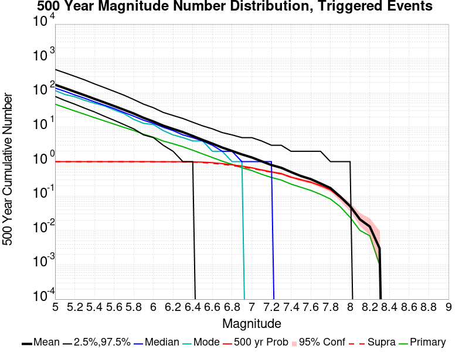
| Mag | Mean | 2.5 %ile | 97.5 %ile | Median | Mode | 500 yr Probability | 500 yr Prob 95% Conf | 500 yr Supra-Seis Prob | Primary Aftershocks Mean |
|---|---|---|---|---|---|---|---|---|---|
| M≥5 | 172.715 | 79.000 | 480.000 | 138.000 | 117.000 | 1.000 (100.00%) | [99.52% 100.00%] | 0.996 (99.60%) | 46.945 |
| M≥5.1 | 136.794 | 60.000 | 383.000 | 111.000 | 90.000 | 1.000 (100.00%) | [99.52% 100.00%] | 0.996 (99.60%) | 37.405 |
| M≥5.2 | 108.082 | 47.000 | 303.000 | 87.000 | 77.000 | 1.000 (100.00%) | [99.52% 100.00%] | 0.996 (99.60%) | 29.812 |
| M≥5.3 | 85.416 | 36.000 | 239.000 | 70.000 | 61.000 | 1.000 (100.00%) | [99.52% 100.00%] | 0.996 (99.60%) | 23.891 |
| M≥5.4 | 67.084 | 28.000 | 183.000 | 55.000 | 50.000 | 1.000 (100.00%) | [99.52% 100.00%] | 0.996 (99.60%) | 19.091 |
| M≥5.5 | 52.838 | 21.000 | 143.000 | 44.000 | 42.000 | 1.000 (100.00%) | [99.52% 100.00%] | 0.996 (99.60%) | 15.369 |
| M≥5.6 | 41.482 | 16.000 | 111.000 | 35.000 | 32.000 | 1.000 (100.00%) | [99.52% 100.00%] | 0.996 (99.60%) | 12.341 |
| M≥5.7 | 32.356 | 12.000 | 86.000 | 27.000 | 25.000 | 1.000 (100.00%) | [99.52% 100.00%] | 0.996 (99.60%) | 9.941 |
| M≥5.8 | 25.107 | 9.000 | 64.000 | 21.000 | 17.000 | 1.000 (100.00%) | [99.52% 100.00%] | 0.996 (99.60%) | 8.050 |
| M≥5.9 | 18.812 | 6.000 | 47.000 | 16.000 | 13.000 | 1.000 (100.00%) | [99.52% 100.00%] | 0.994 (99.40%) | 6.284 |
| M≥6 | 14.715 | 5.000 | 37.000 | 13.000 | 12.000 | 1.000 (100.00%) | [99.52% 100.00%] | 0.994 (99.40%) | 5.140 |
| M≥6.1 | 11.150 | 3.000 | 27.000 | 10.000 | 8.000 | 0.999 (99.90%) | [99.35% 99.99%] | 0.991 (99.10%) | 3.976 |
| M≥6.2 | 8.956 | 2.000 | 22.000 | 8.000 | 6.000 | 0.998 (99.80%) | [99.20% 99.97%] | 0.987 (98.70%) | 3.319 |
| M≥6.3 | 7.223 | 1.000 | 18.000 | 6.000 | 5.000 | 0.994 (99.40%) | [98.63% 99.76%] | 0.980 (98.00%) | 2.722 |
| M≥6.4 | 5.593 | 1.000 | 14.000 | 5.000 | 4.000 | 0.987 (98.70%) | [97.73% 99.28%] | 0.968 (96.80%) | 2.152 |
| M≥6.5 | 4.297 | 0.000 | 11.000 | 4.000 | 4.000 | 0.969 (96.90%) | [95.58% 97.85%] | 0.938 (93.80%) | 1.682 |
| M≥6.6 | 3.348 | 0.000 | 9.000 | 3.000 | 2.000 | 0.934 (93.40%) | [91.63% 94.82%] | 0.894 (89.40%) | 1.320 |
| M≥6.7 | 2.571 | 0.000 | 7.000 | 2.000 | 2.000 | 0.877 (87.70%) | [85.47% 89.64%] | 0.838 (83.80%) | 1.035 |
| M≥6.8 | 2.045 | 0.000 | 6.000 | 2.000 | 1.000 | 0.811 (81.10%) | [78.50% 83.45%] | 0.768 (76.80%) | 0.835 |
| M≥6.9 | 1.625 | 0.000 | 5.000 | 1.000 | 1.000 | 0.742 (74.20%) | [71.35% 76.86%] | 0.703 (70.30%) | 0.665 |
| M≥7 | 1.329 | 0.000 | 5.000 | 1.000 | 0.000 | 0.664 (66.40%) | [63.36% 69.31%] | 0.635 (63.50%) | 0.552 |
| M≥7.1 | 1.026 | 0.000 | 4.000 | 1.000 | 0.000 | 0.574 (57.40%) | [54.26% 60.48%] | 0.559 (55.90%) | 0.430 |
| M≥7.2 | 0.799 | 0.000 | 3.000 | 1.000 | 0.000 | 0.503 (50.30%) | [47.16% 53.44%] | 0.494 (49.40%) | 0.347 |
| M≥7.3 | 0.664 | 0.000 | 3.000 | 0.000 | 0.000 | 0.448 (44.80%) | [41.69% 47.95%] | 0.445 (44.50%) | 0.292 |
| M≥7.4 | 0.498 | 0.000 | 2.000 | 0.000 | 0.000 | 0.354 (35.40%) | [32.45% 38.47%] | 0.352 (35.20%) | 0.222 |
| M≥7.5 | 0.382 | 0.000 | 2.000 | 0.000 | 0.000 | 0.297 (29.70%) | [26.90% 32.66%] | 0.297 (29.70%) | 0.180 |
| M≥7.6 | 0.311 | 0.000 | 2.000 | 0.000 | 0.000 | 0.252 (25.20%) | [22.56% 28.03%] | 0.252 (25.20%) | 0.146 |
| M≥7.7 | 0.232 | 0.000 | 2.000 | 0.000 | 0.000 | 0.201 (20.10%) | [17.69% 22.75%] | 0.201 (20.10%) | 0.112 |
| M≥7.8 | 0.171 | 0.000 | 1.000 | 0.000 | 0.000 | 0.152 (15.20%) | [13.06% 17.61%] | 0.152 (15.20%) | 0.082 |
| M≥7.9 | 0.096 | 0.000 | 1.000 | 0.000 | 0.000 | 0.090 (9.00%) | [7.33% 10.99%] | 0.090 (9.00%) | 0.049 |
| M≥8 | 0.051 | 0.000 | 1.000 | 0.000 | 0.000 | 0.049 (4.90%) | [3.68% 6.48%] | 0.049 (4.90%) | 0.024 |
| M≥8.1 | 0.021 | 0.000 | 0.000 | 0.000 | 0.000 | 0.021 (2.10%) | [1.34% 3.25%] | 0.021 (2.10%) | 0.010 |
| M≥8.2 | 0.013 | 0.000 | 0.000 | 0.000 | 0.000 | 0.013 (1.30%) | [0.72% 2.27%] | 0.013 (1.30%) | 7.00E-3 |
| M≥8.3 | 3.00E-3 | 0.000 | 0.000 | 0.000 | 0.000 | 3.00E-3 (0.30%) | [0.08% 0.95%] | 3.00E-3 (0.30%) | 1.00E-3 |
| M≥8.4 | 0.000 | 0.000 | 0.000 | 0.000 | 0.000 | 0.000 (0.00%) | [0.00% 0.48%] | 0.000 (0.00%) | 0.000 |
| M≥8.5 | 0.000 | 0.000 | 0.000 | 0.000 | 0.000 | 0.000 (0.00%) | [0.00% 0.48%] | 0.000 (0.00%) | 0.000 |
| M≥8.6 | 0.000 | 0.000 | 0.000 | 0.000 | 0.000 | 0.000 (0.00%) | [0.00% 0.48%] | 0.000 (0.00%) | 0.000 |
| M≥8.7 | 0.000 | 0.000 | 0.000 | 0.000 | 0.000 | 0.000 (0.00%) | [0.00% 0.48%] | 0.000 (0.00%) | 0.000 |
| M≥8.8 | 0.000 | 0.000 | 0.000 | 0.000 | 0.000 | 0.000 (0.00%) | [0.00% 0.48%] | 0.000 (0.00%) | 0.000 |
| M≥8.9 | 0.000 | 0.000 | 0.000 | 0.000 | 0.000 | 0.000 (0.00%) | [0.00% 0.48%] | 0.000 (0.00%) | 0.000 |
| M≥9 | 0.000 | 0.000 | 0.000 | 0.000 | 0.000 | 0.000 (0.00%) | [0.00% 0.48%] | 0.000 (0.00%) | 0.000 |
Note: This section includes both spontaneous and triggered events
Legend
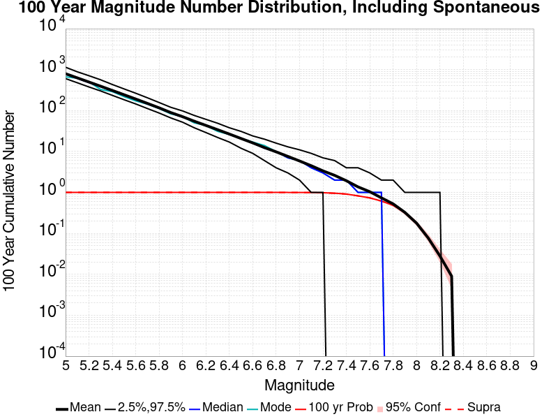
| Mag | Mean | 2.5 %ile | 97.5 %ile | Median | Mode | 100 yr Probability | 100 yr Prob 95% Conf | 100 yr Supra-Seis Prob |
|---|---|---|---|---|---|---|---|---|
| M≥5 | 795.191 | 604.000 | 1144.000 | 771.000 | 665.000 | 1.000 (100.00%) | [99.52% 100.00%] | 1.000 (100.00%) |
| M≥5.1 | 629.559 | 478.000 | 886.000 | 611.000 | 619.000 | 1.000 (100.00%) | [99.52% 100.00%] | 1.000 (100.00%) |
| M≥5.2 | 497.655 | 377.000 | 710.000 | 482.000 | 502.000 | 1.000 (100.00%) | [99.52% 100.00%] | 1.000 (100.00%) |
| M≥5.3 | 393.326 | 301.000 | 564.000 | 381.000 | 327.000 | 1.000 (100.00%) | [99.52% 100.00%] | 1.000 (100.00%) |
| M≥5.4 | 309.800 | 235.000 | 433.000 | 300.000 | 289.000 | 1.000 (100.00%) | [99.52% 100.00%] | 1.000 (100.00%) |
| M≥5.5 | 243.658 | 184.000 | 338.000 | 237.000 | 219.000 | 1.000 (100.00%) | [99.52% 100.00%] | 1.000 (100.00%) |
| M≥5.6 | 191.467 | 145.000 | 265.000 | 186.000 | 172.000 | 1.000 (100.00%) | [99.52% 100.00%] | 1.000 (100.00%) |
| M≥5.7 | 149.600 | 112.000 | 205.000 | 145.000 | 143.000 | 1.000 (100.00%) | [99.52% 100.00%] | 1.000 (100.00%) |
| M≥5.8 | 116.565 | 87.000 | 157.000 | 114.000 | 112.000 | 1.000 (100.00%) | [99.52% 100.00%] | 1.000 (100.00%) |
| M≥5.9 | 89.186 | 66.000 | 120.000 | 87.000 | 83.000 | 1.000 (100.00%) | [99.52% 100.00%] | 1.000 (100.00%) |
| M≥6 | 70.951 | 52.000 | 98.000 | 69.000 | 71.000 | 1.000 (100.00%) | [99.52% 100.00%] | 1.000 (100.00%) |
| M≥6.1 | 54.958 | 38.000 | 76.000 | 54.000 | 50.000 | 1.000 (100.00%) | [99.52% 100.00%] | 1.000 (100.00%) |
| M≥6.2 | 43.341 | 29.000 | 61.000 | 43.000 | 43.000 | 1.000 (100.00%) | [99.52% 100.00%] | 1.000 (100.00%) |
| M≥6.3 | 34.074 | 22.000 | 49.000 | 34.000 | 31.000 | 1.000 (100.00%) | [99.52% 100.00%] | 1.000 (100.00%) |
| M≥6.4 | 26.697 | 17.000 | 38.000 | 26.000 | 26.000 | 1.000 (100.00%) | [99.52% 100.00%] | 1.000 (100.00%) |
| M≥6.5 | 20.766 | 12.000 | 31.000 | 21.000 | 21.000 | 1.000 (100.00%) | [99.52% 100.00%] | 1.000 (100.00%) |
| M≥6.6 | 16.226 | 9.000 | 24.000 | 16.000 | 17.000 | 1.000 (100.00%) | [99.52% 100.00%] | 1.000 (100.00%) |
| M≥6.7 | 12.474 | 6.000 | 20.000 | 12.000 | 14.000 | 1.000 (100.00%) | [99.52% 100.00%] | 1.000 (100.00%) |
| M≥6.8 | 9.800 | 4.000 | 16.000 | 10.000 | 10.000 | 1.000 (100.00%) | [99.52% 100.00%] | 1.000 (100.00%) |
| M≥6.9 | 7.598 | 3.000 | 13.000 | 7.000 | 7.000 | 1.000 (100.00%) | [99.52% 100.00%] | 0.998 (99.80%) |
| M≥7 | 5.866 | 2.000 | 11.000 | 6.000 | 6.000 | 0.999 (99.90%) | [99.35% 99.99%] | 0.995 (99.50%) |
| M≥7.1 | 4.492 | 1.000 | 9.000 | 4.000 | 4.000 | 0.995 (99.50%) | [98.77% 99.82%] | 0.990 (99.00%) |
| M≥7.2 | 3.365 | 1.000 | 7.000 | 3.000 | 3.000 | 0.985 (98.50%) | [97.48% 99.13%] | 0.979 (97.90%) |
| M≥7.3 | 2.612 | 0.000 | 6.000 | 2.000 | 2.000 | 0.959 (95.90%) | [94.43% 97.01%] | 0.954 (95.40%) |
| M≥7.4 | 1.929 | 0.000 | 4.000 | 2.000 | 2.000 | 0.913 (91.30%) | [89.34% 92.94%] | 0.910 (91.00%) |
| M≥7.5 | 1.366 | 0.000 | 4.000 | 1.000 | 1.000 | 0.825 (82.50%) | [79.97% 84.78%] | 0.824 (82.40%) |
| M≥7.6 | 1.043 | 0.000 | 3.000 | 1.000 | 1.000 | 0.736 (73.60%) | [70.73% 76.29%] | 0.736 (73.60%) |
| M≥7.7 | 0.737 | 0.000 | 2.000 | 1.000 | 1.000 | 0.616 (61.60%) | [58.50% 64.61%] | 0.616 (61.60%) |
| M≥7.8 | 0.525 | 0.000 | 2.000 | 0.000 | 0.000 | 0.486 (48.60%) | [45.46% 51.75%] | 0.486 (48.60%) |
| M≥7.9 | 0.326 | 0.000 | 1.000 | 0.000 | 0.000 | 0.320 (32.00%) | [29.13% 35.01%] | 0.320 (32.00%) |
| M≥8 | 0.178 | 0.000 | 1.000 | 0.000 | 0.000 | 0.178 (17.80%) | [15.51% 20.35%] | 0.178 (17.80%) |
| M≥8.1 | 0.077 | 0.000 | 1.000 | 0.000 | 0.000 | 0.077 (7.70%) | [6.16% 9.57%] | 0.077 (7.70%) |
| M≥8.2 | 0.028 | 0.000 | 1.000 | 0.000 | 0.000 | 0.028 (2.80%) | [1.90% 4.08%] | 0.028 (2.80%) |
| M≥8.3 | 9.00E-3 | 0.000 | 0.000 | 0.000 | 0.000 | 9.00E-3 (0.90%) | [0.44% 1.77%] | 9.00E-3 (0.90%) |
| M≥8.4 | 0.000 | 0.000 | 0.000 | 0.000 | 0.000 | 0.000 (0.00%) | [0.00% 0.48%] | 0.000 (0.00%) |
| M≥8.5 | 0.000 | 0.000 | 0.000 | 0.000 | 0.000 | 0.000 (0.00%) | [0.00% 0.48%] | 0.000 (0.00%) |
| M≥8.6 | 0.000 | 0.000 | 0.000 | 0.000 | 0.000 | 0.000 (0.00%) | [0.00% 0.48%] | 0.000 (0.00%) |
| M≥8.7 | 0.000 | 0.000 | 0.000 | 0.000 | 0.000 | 0.000 (0.00%) | [0.00% 0.48%] | 0.000 (0.00%) |
| M≥8.8 | 0.000 | 0.000 | 0.000 | 0.000 | 0.000 | 0.000 (0.00%) | [0.00% 0.48%] | 0.000 (0.00%) |
| M≥8.9 | 0.000 | 0.000 | 0.000 | 0.000 | 0.000 | 0.000 (0.00%) | [0.00% 0.48%] | 0.000 (0.00%) |
| M≥9 | 0.000 | 0.000 | 0.000 | 0.000 | 0.000 | 0.000 (0.00%) | [0.00% 0.48%] | 0.000 (0.00%) |
Note: This section only includes triggered events, spontaneous were calculated but filtered out here
Legend
| Mag | Mean | 2.5 %ile | 97.5 %ile | Median | Mode | 100 yr Probability | 100 yr Prob 95% Conf | 100 yr Supra-Seis Prob | Primary Aftershocks Mean |
|---|---|---|---|---|---|---|---|---|---|
| M≥5 | 70.855 | 29.000 | 194.000 | 57.000 | 51.000 | 1.000 (100.00%) | [99.52% 100.00%] | 0.950 (95.00%) | 23.945 |
| M≥5.1 | 56.055 | 23.000 | 154.000 | 45.000 | 44.000 | 1.000 (100.00%) | [99.52% 100.00%] | 0.950 (95.00%) | 19.041 |
| M≥5.2 | 44.162 | 17.000 | 120.000 | 36.000 | 32.000 | 1.000 (100.00%) | [99.52% 100.00%] | 0.950 (95.00%) | 15.152 |
| M≥5.3 | 34.906 | 13.000 | 96.000 | 28.000 | 26.000 | 1.000 (100.00%) | [99.52% 100.00%] | 0.950 (95.00%) | 12.100 |
| M≥5.4 | 27.333 | 10.000 | 76.000 | 22.000 | 17.000 | 1.000 (100.00%) | [99.52% 100.00%] | 0.950 (95.00%) | 9.615 |
| M≥5.5 | 21.483 | 7.000 | 56.000 | 18.000 | 15.000 | 1.000 (100.00%) | [99.52% 100.00%] | 0.950 (95.00%) | 7.727 |
| M≥5.6 | 16.870 | 5.000 | 45.000 | 14.000 | 11.000 | 1.000 (100.00%) | [99.52% 100.00%] | 0.950 (95.00%) | 6.182 |
| M≥5.7 | 13.163 | 3.000 | 35.000 | 11.000 | 10.000 | 1.000 (100.00%) | [99.52% 100.00%] | 0.950 (95.00%) | 4.947 |
| M≥5.8 | 10.251 | 2.000 | 26.000 | 9.000 | 8.000 | 1.000 (100.00%) | [99.52% 100.00%] | 0.950 (95.00%) | 4.019 |
| M≥5.9 | 7.724 | 2.000 | 21.000 | 6.000 | 6.000 | 0.997 (99.70%) | [99.05% 99.92%] | 0.938 (93.80%) | 3.113 |
| M≥6 | 6.049 | 1.000 | 15.000 | 5.000 | 4.000 | 0.992 (99.20%) | [98.36% 99.63%] | 0.932 (93.20%) | 2.579 |
| M≥6.1 | 4.600 | 0.000 | 12.000 | 4.000 | 3.000 | 0.962 (96.20%) | [94.77% 97.26%] | 0.894 (89.40%) | 1.998 |
| M≥6.2 | 3.674 | 0.000 | 10.000 | 3.000 | 2.000 | 0.944 (94.40%) | [92.74% 95.71%] | 0.880 (88.00%) | 1.638 |
| M≥6.3 | 2.930 | 0.000 | 8.000 | 3.000 | 1.000 | 0.904 (90.40%) | [88.36% 92.12%] | 0.838 (83.80%) | 1.336 |
| M≥6.4 | 2.259 | 0.000 | 6.000 | 2.000 | 1.000 | 0.859 (85.90%) | [83.55% 87.97%] | 0.791 (79.10%) | 1.047 |
| M≥6.5 | 1.757 | 0.000 | 5.000 | 1.000 | 1.000 | 0.795 (79.50%) | [76.84% 81.93%] | 0.723 (72.30%) | 0.826 |
| M≥6.6 | 1.358 | 0.000 | 4.000 | 1.000 | 1.000 | 0.716 (71.60%) | [68.68% 74.36%] | 0.651 (65.10%) | 0.659 |
| M≥6.7 | 1.034 | 0.000 | 4.000 | 1.000 | 0.000 | 0.618 (61.80%) | [58.70% 64.81%] | 0.563 (56.30%) | 0.511 |
| M≥6.8 | 0.806 | 0.000 | 3.000 | 1.000 | 0.000 | 0.538 (53.80%) | [50.65% 56.92%] | 0.490 (49.00%) | 0.403 |
| M≥6.9 | 0.627 | 0.000 | 3.000 | 0.000 | 0.000 | 0.447 (44.70%) | [41.60% 47.85%] | 0.412 (41.20%) | 0.304 |
| M≥7 | 0.498 | 0.000 | 2.000 | 0.000 | 0.000 | 0.380 (38.00%) | [34.99% 41.10%] | 0.353 (35.30%) | 0.252 |
| M≥7.1 | 0.374 | 0.000 | 2.000 | 0.000 | 0.000 | 0.298 (29.80%) | [27.00% 32.76%] | 0.282 (28.20%) | 0.191 |
| M≥7.2 | 0.279 | 0.000 | 2.000 | 0.000 | 0.000 | 0.234 (23.40%) | [20.83% 26.17%] | 0.227 (22.70%) | 0.143 |
| M≥7.3 | 0.234 | 0.000 | 2.000 | 0.000 | 0.000 | 0.201 (20.10%) | [17.69% 22.75%] | 0.197 (19.70%) | 0.121 |
| M≥7.4 | 0.166 | 0.000 | 1.000 | 0.000 | 0.000 | 0.146 (14.60%) | [12.50% 16.98%] | 0.146 (14.60%) | 0.090 |
| M≥7.5 | 0.122 | 0.000 | 1.000 | 0.000 | 0.000 | 0.112 (11.20%) | [9.35% 13.36%] | 0.112 (11.20%) | 0.074 |
| M≥7.6 | 0.091 | 0.000 | 1.000 | 0.000 | 0.000 | 0.088 (8.80%) | [7.15% 10.77%] | 0.088 (8.80%) | 0.059 |
| M≥7.7 | 0.065 | 0.000 | 1.000 | 0.000 | 0.000 | 0.063 (6.30%) | [4.91% 8.03%] | 0.063 (6.30%) | 0.042 |
| M≥7.8 | 0.053 | 0.000 | 1.000 | 0.000 | 0.000 | 0.052 (5.20%) | [3.94% 6.81%] | 0.052 (5.20%) | 0.035 |
| M≥7.9 | 0.036 | 0.000 | 1.000 | 0.000 | 0.000 | 0.036 (3.60%) | [2.57% 5.00%] | 0.036 (3.60%) | 0.025 |
| M≥8 | 0.022 | 0.000 | 0.000 | 0.000 | 0.000 | 0.022 (2.20%) | [1.42% 3.37%] | 0.022 (2.20%) | 0.014 |
| M≥8.1 | 7.00E-3 | 0.000 | 0.000 | 0.000 | 0.000 | 7.00E-3 (0.70%) | [0.31% 1.50%] | 7.00E-3 (0.70%) | 6.00E-3 |
| M≥8.2 | 4.00E-3 | 0.000 | 0.000 | 0.000 | 0.000 | 4.00E-3 (0.40%) | [0.13% 1.10%] | 4.00E-3 (0.40%) | 3.00E-3 |
| M≥8.3 | 1.00E-3 | 0.000 | 0.000 | 0.000 | 0.000 | 1.00E-3 (0.10%) | [0.01% 0.65%] | 1.00E-3 (0.10%) | 0.000 |
| M≥8.4 | 0.000 | 0.000 | 0.000 | 0.000 | 0.000 | 0.000 (0.00%) | [0.00% 0.48%] | 0.000 (0.00%) | 0.000 |
| M≥8.5 | 0.000 | 0.000 | 0.000 | 0.000 | 0.000 | 0.000 (0.00%) | [0.00% 0.48%] | 0.000 (0.00%) | 0.000 |
| M≥8.6 | 0.000 | 0.000 | 0.000 | 0.000 | 0.000 | 0.000 (0.00%) | [0.00% 0.48%] | 0.000 (0.00%) | 0.000 |
| M≥8.7 | 0.000 | 0.000 | 0.000 | 0.000 | 0.000 | 0.000 (0.00%) | [0.00% 0.48%] | 0.000 (0.00%) | 0.000 |
| M≥8.8 | 0.000 | 0.000 | 0.000 | 0.000 | 0.000 | 0.000 (0.00%) | [0.00% 0.48%] | 0.000 (0.00%) | 0.000 |
| M≥8.9 | 0.000 | 0.000 | 0.000 | 0.000 | 0.000 | 0.000 (0.00%) | [0.00% 0.48%] | 0.000 (0.00%) | 0.000 |
| M≥9 | 0.000 | 0.000 | 0.000 | 0.000 | 0.000 | 0.000 (0.00%) | [0.00% 0.48%] | 0.000 (0.00%) | 0.000 |
Note: This section includes both spontaneous and triggered events
Legend
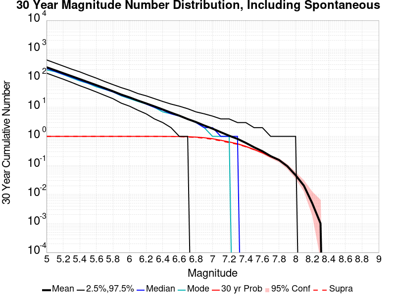
| Mag | Mean | 2.5 %ile | 97.5 %ile | Median | Mode | 30 yr Probability | 30 yr Prob 95% Conf | 30 yr Supra-Seis Prob |
|---|---|---|---|---|---|---|---|---|
| M≥5 | 241.877 | 152.000 | 434.000 | 223.000 | 197.000 | 1.000 (100.00%) | [99.52% 100.00%] | 1.000 (100.00%) |
| M≥5.1 | 191.754 | 119.000 | 340.000 | 176.000 | 171.000 | 1.000 (100.00%) | [99.52% 100.00%] | 1.000 (100.00%) |
| M≥5.2 | 151.547 | 94.000 | 267.000 | 139.000 | 135.000 | 1.000 (100.00%) | [99.52% 100.00%] | 1.000 (100.00%) |
| M≥5.3 | 119.944 | 73.000 | 209.000 | 111.000 | 105.000 | 1.000 (100.00%) | [99.52% 100.00%] | 1.000 (100.00%) |
| M≥5.4 | 94.451 | 56.000 | 168.000 | 87.000 | 82.000 | 1.000 (100.00%) | [99.52% 100.00%] | 1.000 (100.00%) |
| M≥5.5 | 74.462 | 44.000 | 130.000 | 69.000 | 67.000 | 1.000 (100.00%) | [99.52% 100.00%] | 1.000 (100.00%) |
| M≥5.6 | 58.679 | 34.000 | 102.000 | 55.000 | 51.000 | 1.000 (100.00%) | [99.52% 100.00%] | 1.000 (100.00%) |
| M≥5.7 | 46.013 | 26.000 | 78.000 | 43.000 | 42.000 | 1.000 (100.00%) | [99.52% 100.00%] | 1.000 (100.00%) |
| M≥5.8 | 35.999 | 20.000 | 61.000 | 34.000 | 34.000 | 1.000 (100.00%) | [99.52% 100.00%] | 1.000 (100.00%) |
| M≥5.9 | 27.659 | 14.000 | 48.000 | 26.000 | 25.000 | 1.000 (100.00%) | [99.52% 100.00%] | 1.000 (100.00%) |
| M≥6 | 22.121 | 11.000 | 39.000 | 21.000 | 20.000 | 1.000 (100.00%) | [99.52% 100.00%] | 1.000 (100.00%) |
| M≥6.1 | 17.251 | 8.000 | 30.000 | 17.000 | 16.000 | 1.000 (100.00%) | [99.52% 100.00%] | 1.000 (100.00%) |
| M≥6.2 | 13.725 | 6.000 | 25.000 | 13.000 | 13.000 | 1.000 (100.00%) | [99.52% 100.00%] | 1.000 (100.00%) |
| M≥6.3 | 10.829 | 4.000 | 20.000 | 10.000 | 10.000 | 1.000 (100.00%) | [99.52% 100.00%] | 1.000 (100.00%) |
| M≥6.4 | 8.479 | 3.000 | 16.000 | 8.000 | 7.000 | 1.000 (100.00%) | [99.52% 100.00%] | 0.995 (99.50%) |
| M≥6.5 | 6.573 | 2.000 | 13.000 | 6.000 | 6.000 | 0.997 (99.70%) | [99.05% 99.92%] | 0.990 (99.00%) |
| M≥6.6 | 5.175 | 1.000 | 11.000 | 5.000 | 5.000 | 0.992 (99.20%) | [98.36% 99.63%] | 0.976 (97.60%) |
| M≥6.7 | 3.959 | 1.000 | 9.000 | 4.000 | 4.000 | 0.977 (97.70%) | [96.51% 98.50%] | 0.955 (95.50%) |
| M≥6.8 | 3.127 | 0.000 | 7.000 | 3.000 | 3.000 | 0.947 (94.70%) | [93.08% 95.97%] | 0.923 (92.30%) |
| M≥6.9 | 2.375 | 0.000 | 6.000 | 2.000 | 2.000 | 0.901 (90.10%) | [88.04% 91.85%] | 0.866 (86.60%) |
| M≥7 | 1.849 | 0.000 | 5.000 | 2.000 | 1.000 | 0.832 (83.20%) | [80.70% 85.44%] | 0.795 (79.50%) |
| M≥7.1 | 1.392 | 0.000 | 4.000 | 1.000 | 1.000 | 0.735 (73.50%) | [70.63% 76.19%] | 0.700 (70.00%) |
| M≥7.2 | 1.056 | 0.000 | 4.000 | 1.000 | 1.000 | 0.644 (64.40%) | [61.33% 67.36%] | 0.609 (60.90%) |
| M≥7.3 | 0.822 | 0.000 | 3.000 | 1.000 | 0.000 | 0.556 (55.60%) | [52.45% 58.70%] | 0.535 (53.50%) |
| M≥7.4 | 0.599 | 0.000 | 3.000 | 0.000 | 0.000 | 0.452 (45.20%) | [42.09% 48.35%] | 0.440 (44.00%) |
| M≥7.5 | 0.422 | 0.000 | 2.000 | 0.000 | 0.000 | 0.355 (35.50%) | [32.55% 38.57%] | 0.350 (35.00%) |
| M≥7.6 | 0.309 | 0.000 | 2.000 | 0.000 | 0.000 | 0.273 (27.30%) | [24.58% 30.20%] | 0.273 (27.30%) |
| M≥7.7 | 0.209 | 0.000 | 1.000 | 0.000 | 0.000 | 0.197 (19.70%) | [17.31% 22.33%] | 0.197 (19.70%) |
| M≥7.8 | 0.154 | 0.000 | 1.000 | 0.000 | 0.000 | 0.149 (14.90%) | [12.78% 17.29%] | 0.149 (14.90%) |
| M≥7.9 | 0.094 | 0.000 | 1.000 | 0.000 | 0.000 | 0.094 (9.40%) | [7.70% 11.42%] | 0.094 (9.40%) |
| M≥8 | 0.046 | 0.000 | 1.000 | 0.000 | 0.000 | 0.046 (4.60%) | [3.42% 6.14%] | 0.046 (4.60%) |
| M≥8.1 | 0.020 | 0.000 | 0.000 | 0.000 | 0.000 | 0.020 (2.00%) | [1.26% 3.13%] | 0.020 (2.00%) |
| M≥8.2 | 5.00E-3 | 0.000 | 0.000 | 0.000 | 0.000 | 5.00E-3 (0.50%) | [0.18% 1.23%] | 5.00E-3 (0.50%) |
| M≥8.3 | 1.00E-3 | 0.000 | 0.000 | 0.000 | 0.000 | 1.00E-3 (0.10%) | [0.01% 0.65%] | 1.00E-3 (0.10%) |
| M≥8.4 | 0.000 | 0.000 | 0.000 | 0.000 | 0.000 | 0.000 (0.00%) | [0.00% 0.48%] | 0.000 (0.00%) |
| M≥8.5 | 0.000 | 0.000 | 0.000 | 0.000 | 0.000 | 0.000 (0.00%) | [0.00% 0.48%] | 0.000 (0.00%) |
| M≥8.6 | 0.000 | 0.000 | 0.000 | 0.000 | 0.000 | 0.000 (0.00%) | [0.00% 0.48%] | 0.000 (0.00%) |
| M≥8.7 | 0.000 | 0.000 | 0.000 | 0.000 | 0.000 | 0.000 (0.00%) | [0.00% 0.48%] | 0.000 (0.00%) |
| M≥8.8 | 0.000 | 0.000 | 0.000 | 0.000 | 0.000 | 0.000 (0.00%) | [0.00% 0.48%] | 0.000 (0.00%) |
| M≥8.9 | 0.000 | 0.000 | 0.000 | 0.000 | 0.000 | 0.000 (0.00%) | [0.00% 0.48%] | 0.000 (0.00%) |
| M≥9 | 0.000 | 0.000 | 0.000 | 0.000 | 0.000 | 0.000 (0.00%) | [0.00% 0.48%] | 0.000 (0.00%) |
Note: This section only includes triggered events, spontaneous were calculated but filtered out here
Legend
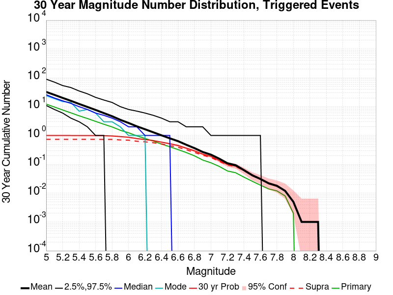
| Mag | Mean | 2.5 %ile | 97.5 %ile | Median | Mode | 30 yr Probability | 30 yr Prob 95% Conf | 30 yr Supra-Seis Prob | Primary Aftershocks Mean |
|---|---|---|---|---|---|---|---|---|---|
| M≥5 | 32.482 | 11.000 | 90.000 | 26.000 | 24.000 | 1.000 (100.00%) | [99.52% 100.00%] | 0.734 (73.40%) | 12.311 |
| M≥5.1 | 25.683 | 8.000 | 71.000 | 20.000 | 19.000 | 1.000 (100.00%) | [99.52% 100.00%] | 0.734 (73.40%) | 9.754 |
| M≥5.2 | 20.138 | 6.000 | 54.000 | 16.000 | 15.000 | 1.000 (100.00%) | [99.52% 100.00%] | 0.734 (73.40%) | 7.691 |
| M≥5.3 | 15.936 | 4.000 | 46.000 | 13.000 | 14.000 | 1.000 (100.00%) | [99.52% 100.00%] | 0.734 (73.40%) | 6.121 |
| M≥5.4 | 12.428 | 3.000 | 35.000 | 10.000 | 7.000 | 0.999 (99.90%) | [99.35% 99.99%] | 0.734 (73.40%) | 4.831 |
| M≥5.5 | 9.786 | 2.000 | 28.000 | 8.000 | 8.000 | 0.996 (99.60%) | [98.90% 99.87%] | 0.734 (73.40%) | 3.895 |
| M≥5.6 | 7.700 | 1.000 | 21.000 | 6.000 | 6.000 | 0.995 (99.50%) | [98.77% 99.82%] | 0.734 (73.40%) | 3.100 |
| M≥5.7 | 5.980 | 1.000 | 17.000 | 5.000 | 3.000 | 0.989 (98.90%) | [97.98% 99.42%] | 0.733 (73.30%) | 2.459 |
| M≥5.8 | 4.662 | 0.000 | 14.000 | 4.000 | 3.000 | 0.964 (96.40%) | [95.00% 97.43%] | 0.733 (73.30%) | 1.991 |
| M≥5.9 | 3.496 | 0.000 | 10.000 | 3.000 | 2.000 | 0.918 (91.80%) | [89.88% 93.39%] | 0.702 (70.20%) | 1.524 |
| M≥6 | 2.720 | 0.000 | 8.000 | 2.000 | 1.000 | 0.869 (86.90%) | [84.61% 88.90%] | 0.688 (68.80%) | 1.248 |
| M≥6.1 | 2.081 | 0.000 | 7.000 | 2.000 | 1.000 | 0.784 (78.40%) | [75.69% 80.89%] | 0.632 (63.20%) | 0.975 |
| M≥6.2 | 1.644 | 0.000 | 6.000 | 1.000 | 1.000 | 0.725 (72.50%) | [69.60% 75.23%] | 0.603 (60.30%) | 0.791 |
| M≥6.3 | 1.290 | 0.000 | 5.000 | 1.000 | 0.000 | 0.667 (66.70%) | [63.67% 69.60%] | 0.561 (56.10%) | 0.640 |
| M≥6.4 | 1.013 | 0.000 | 4.000 | 1.000 | 0.000 | 0.588 (58.80%) | [55.67% 61.86%] | 0.505 (50.50%) | 0.506 |
| M≥6.5 | 0.799 | 0.000 | 3.000 | 1.000 | 0.000 | 0.519 (51.90%) | [48.75% 55.03%] | 0.444 (44.40%) | 0.408 |
| M≥6.6 | 0.637 | 0.000 | 3.000 | 0.000 | 0.000 | 0.450 (45.00%) | [41.89% 48.15%] | 0.392 (39.20%) | 0.326 |
| M≥6.7 | 0.477 | 0.000 | 2.000 | 0.000 | 0.000 | 0.363 (36.30%) | [33.33% 39.38%] | 0.320 (32.00%) | 0.257 |
| M≥6.8 | 0.364 | 0.000 | 2.000 | 0.000 | 0.000 | 0.293 (29.30%) | [26.51% 32.25%] | 0.259 (25.90%) | 0.197 |
| M≥6.9 | 0.268 | 0.000 | 2.000 | 0.000 | 0.000 | 0.226 (22.60%) | [20.07% 25.35%] | 0.206 (20.60%) | 0.141 |
| M≥7 | 0.216 | 0.000 | 1.000 | 0.000 | 0.000 | 0.189 (18.90%) | [16.55% 21.50%] | 0.173 (17.30%) | 0.113 |
| M≥7.1 | 0.157 | 0.000 | 1.000 | 0.000 | 0.000 | 0.136 (13.60%) | [11.57% 15.92%] | 0.127 (12.70%) | 0.085 |
| M≥7.2 | 0.109 | 0.000 | 1.000 | 0.000 | 0.000 | 0.099 (9.90%) | [8.15% 11.96%] | 0.095 (9.50%) | 0.059 |
| M≥7.3 | 0.093 | 0.000 | 1.000 | 0.000 | 0.000 | 0.086 (8.60%) | [6.97% 10.55%] | 0.083 (8.30%) | 0.051 |
| M≥7.4 | 0.063 | 0.000 | 1.000 | 0.000 | 0.000 | 0.060 (6.00%) | [4.65% 7.70%] | 0.060 (6.00%) | 0.036 |
| M≥7.5 | 0.042 | 0.000 | 1.000 | 0.000 | 0.000 | 0.040 (4.00%) | [2.91% 5.46%] | 0.040 (4.00%) | 0.026 |
| M≥7.6 | 0.031 | 0.000 | 1.000 | 0.000 | 0.000 | 0.030 (3.00%) | [2.07% 4.31%] | 0.030 (3.00%) | 0.019 |
| M≥7.7 | 0.022 | 0.000 | 0.000 | 0.000 | 0.000 | 0.021 (2.10%) | [1.34% 3.25%] | 0.021 (2.10%) | 0.014 |
| M≥7.8 | 0.018 | 0.000 | 0.000 | 0.000 | 0.000 | 0.017 (1.70%) | [1.03% 2.77%] | 0.017 (1.70%) | 0.012 |
| M≥7.9 | 0.012 | 0.000 | 0.000 | 0.000 | 0.000 | 0.012 (1.20%) | [0.65% 2.15%] | 0.012 (1.20%) | 8.00E-3 |
| M≥8 | 5.00E-3 | 0.000 | 0.000 | 0.000 | 0.000 | 5.00E-3 (0.50%) | [0.18% 1.23%] | 5.00E-3 (0.50%) | 2.00E-3 |
| M≥8.1 | 1.00E-3 | 0.000 | 0.000 | 0.000 | 0.000 | 1.00E-3 (0.10%) | [0.01% 0.65%] | 1.00E-3 (0.10%) | 0.000 |
| M≥8.2 | 1.00E-3 | 0.000 | 0.000 | 0.000 | 0.000 | 1.00E-3 (0.10%) | [0.01% 0.65%] | 1.00E-3 (0.10%) | 0.000 |
| M≥8.3 | 1.00E-3 | 0.000 | 0.000 | 0.000 | 0.000 | 1.00E-3 (0.10%) | [0.01% 0.65%] | 1.00E-3 (0.10%) | 0.000 |
| M≥8.4 | 0.000 | 0.000 | 0.000 | 0.000 | 0.000 | 0.000 (0.00%) | [0.00% 0.48%] | 0.000 (0.00%) | 0.000 |
| M≥8.5 | 0.000 | 0.000 | 0.000 | 0.000 | 0.000 | 0.000 (0.00%) | [0.00% 0.48%] | 0.000 (0.00%) | 0.000 |
| M≥8.6 | 0.000 | 0.000 | 0.000 | 0.000 | 0.000 | 0.000 (0.00%) | [0.00% 0.48%] | 0.000 (0.00%) | 0.000 |
| M≥8.7 | 0.000 | 0.000 | 0.000 | 0.000 | 0.000 | 0.000 (0.00%) | [0.00% 0.48%] | 0.000 (0.00%) | 0.000 |
| M≥8.8 | 0.000 | 0.000 | 0.000 | 0.000 | 0.000 | 0.000 (0.00%) | [0.00% 0.48%] | 0.000 (0.00%) | 0.000 |
| M≥8.9 | 0.000 | 0.000 | 0.000 | 0.000 | 0.000 | 0.000 (0.00%) | [0.00% 0.48%] | 0.000 (0.00%) | 0.000 |
| M≥9 | 0.000 | 0.000 | 0.000 | 0.000 | 0.000 | 0.000 (0.00%) | [0.00% 0.48%] | 0.000 (0.00%) | 0.000 |
Note: This section includes both spontaneous and triggered events
Legend
| Mag | Mean | 2.5 %ile | 97.5 %ile | Median | Mode | 10 yr Probability | 10 yr Prob 95% Conf | 10 yr Supra-Seis Prob |
|---|---|---|---|---|---|---|---|---|
| M≥5 | 79.230 | 41.000 | 170.000 | 69.000 | 65.000 | 1.000 (100.00%) | [99.52% 100.00%] | 0.967 (96.70%) |
| M≥5.1 | 62.694 | 32.000 | 131.000 | 55.000 | 47.000 | 1.000 (100.00%) | [99.52% 100.00%] | 0.967 (96.70%) |
| M≥5.2 | 49.631 | 24.000 | 107.000 | 43.000 | 43.000 | 1.000 (100.00%) | [99.52% 100.00%] | 0.967 (96.70%) |
| M≥5.3 | 39.188 | 18.000 | 84.000 | 35.000 | 32.000 | 1.000 (100.00%) | [99.52% 100.00%] | 0.967 (96.70%) |
| M≥5.4 | 30.686 | 13.000 | 67.000 | 27.000 | 22.000 | 1.000 (100.00%) | [99.52% 100.00%] | 0.967 (96.70%) |
| M≥5.5 | 24.259 | 10.000 | 53.000 | 22.000 | 18.000 | 1.000 (100.00%) | [99.52% 100.00%] | 0.967 (96.70%) |
| M≥5.6 | 19.242 | 7.000 | 43.000 | 18.000 | 14.000 | 1.000 (100.00%) | [99.52% 100.00%] | 0.967 (96.70%) |
| M≥5.7 | 15.124 | 5.000 | 34.000 | 14.000 | 12.000 | 1.000 (100.00%) | [99.52% 100.00%] | 0.967 (96.70%) |
| M≥5.8 | 11.875 | 4.000 | 26.000 | 11.000 | 11.000 | 1.000 (100.00%) | [99.52% 100.00%] | 0.967 (96.70%) |
| M≥5.9 | 9.155 | 2.000 | 21.000 | 8.000 | 7.000 | 0.998 (99.80%) | [99.20% 99.97%] | 0.962 (96.20%) |
| M≥6 | 7.350 | 2.000 | 16.000 | 7.000 | 6.000 | 0.995 (99.50%) | [98.77% 99.82%] | 0.958 (95.80%) |
| M≥6.1 | 5.766 | 1.000 | 13.000 | 5.000 | 4.000 | 0.987 (98.70%) | [97.73% 99.28%] | 0.943 (94.30%) |
| M≥6.2 | 4.658 | 1.000 | 11.000 | 4.000 | 3.000 | 0.979 (97.90%) | [96.75% 98.66%] | 0.931 (93.10%) |
| M≥6.3 | 3.711 | 0.000 | 9.000 | 3.000 | 3.000 | 0.962 (96.20%) | [94.77% 97.26%] | 0.907 (90.70%) |
| M≥6.4 | 2.925 | 0.000 | 7.000 | 3.000 | 2.000 | 0.931 (93.10%) | [91.30% 94.56%] | 0.875 (87.50%) |
| M≥6.5 | 2.253 | 0.000 | 6.000 | 2.000 | 2.000 | 0.876 (87.60%) | [85.36% 89.55%] | 0.812 (81.20%) |
| M≥6.6 | 1.773 | 0.000 | 5.000 | 1.000 | 1.000 | 0.809 (80.90%) | [78.29% 83.26%] | 0.743 (74.30%) |
| M≥6.7 | 1.335 | 0.000 | 4.000 | 1.000 | 1.000 | 0.716 (71.60%) | [68.68% 74.36%] | 0.647 (64.70%) |
| M≥6.8 | 1.058 | 0.000 | 4.000 | 1.000 | 1.000 | 0.650 (65.00%) | [61.94% 67.94%] | 0.588 (58.80%) |
| M≥6.9 | 0.809 | 0.000 | 3.000 | 1.000 | 0.000 | 0.538 (53.80%) | [50.65% 56.92%] | 0.489 (48.90%) |
| M≥7 | 0.633 | 0.000 | 3.000 | 0.000 | 0.000 | 0.457 (45.70%) | [42.59% 48.85%] | 0.417 (41.70%) |
| M≥7.1 | 0.483 | 0.000 | 2.000 | 0.000 | 0.000 | 0.364 (36.40%) | [33.43% 39.48%] | 0.340 (34.00%) |
| M≥7.2 | 0.355 | 0.000 | 2.000 | 0.000 | 0.000 | 0.286 (28.60%) | [25.84% 31.53%] | 0.268 (26.80%) |
| M≥7.3 | 0.279 | 0.000 | 2.000 | 0.000 | 0.000 | 0.237 (23.70%) | [21.12% 26.48%] | 0.224 (22.40%) |
| M≥7.4 | 0.190 | 0.000 | 1.000 | 0.000 | 0.000 | 0.165 (16.50%) | [14.28% 18.98%] | 0.160 (16.00%) |
| M≥7.5 | 0.146 | 0.000 | 1.000 | 0.000 | 0.000 | 0.132 (13.20%) | [11.20% 15.49%] | 0.128 (12.80%) |
| M≥7.6 | 0.114 | 0.000 | 1.000 | 0.000 | 0.000 | 0.106 (10.60%) | [8.79% 12.71%] | 0.106 (10.60%) |
| M≥7.7 | 0.073 | 0.000 | 1.000 | 0.000 | 0.000 | 0.071 (7.10%) | [5.62% 8.92%] | 0.071 (7.10%) |
| M≥7.8 | 0.049 | 0.000 | 1.000 | 0.000 | 0.000 | 0.049 (4.90%) | [3.68% 6.48%] | 0.049 (4.90%) |
| M≥7.9 | 0.027 | 0.000 | 1.000 | 0.000 | 0.000 | 0.027 (2.70%) | [1.82% 3.96%] | 0.027 (2.70%) |
| M≥8 | 0.013 | 0.000 | 0.000 | 0.000 | 0.000 | 0.013 (1.30%) | [0.72% 2.27%] | 0.013 (1.30%) |
| M≥8.1 | 5.00E-3 | 0.000 | 0.000 | 0.000 | 0.000 | 5.00E-3 (0.50%) | [0.18% 1.23%] | 5.00E-3 (0.50%) |
| M≥8.2 | 1.00E-3 | 0.000 | 0.000 | 0.000 | 0.000 | 1.00E-3 (0.10%) | [0.01% 0.65%] | 1.00E-3 (0.10%) |
| M≥8.3 | 0.000 | 0.000 | 0.000 | 0.000 | 0.000 | 0.000 (0.00%) | [0.00% 0.48%] | 0.000 (0.00%) |
| M≥8.4 | 0.000 | 0.000 | 0.000 | 0.000 | 0.000 | 0.000 (0.00%) | [0.00% 0.48%] | 0.000 (0.00%) |
| M≥8.5 | 0.000 | 0.000 | 0.000 | 0.000 | 0.000 | 0.000 (0.00%) | [0.00% 0.48%] | 0.000 (0.00%) |
| M≥8.6 | 0.000 | 0.000 | 0.000 | 0.000 | 0.000 | 0.000 (0.00%) | [0.00% 0.48%] | 0.000 (0.00%) |
| M≥8.7 | 0.000 | 0.000 | 0.000 | 0.000 | 0.000 | 0.000 (0.00%) | [0.00% 0.48%] | 0.000 (0.00%) |
| M≥8.8 | 0.000 | 0.000 | 0.000 | 0.000 | 0.000 | 0.000 (0.00%) | [0.00% 0.48%] | 0.000 (0.00%) |
| M≥8.9 | 0.000 | 0.000 | 0.000 | 0.000 | 0.000 | 0.000 (0.00%) | [0.00% 0.48%] | 0.000 (0.00%) |
| M≥9 | 0.000 | 0.000 | 0.000 | 0.000 | 0.000 | 0.000 (0.00%) | [0.00% 0.48%] | 0.000 (0.00%) |
Note: This section only includes triggered events, spontaneous were calculated but filtered out here
Legend
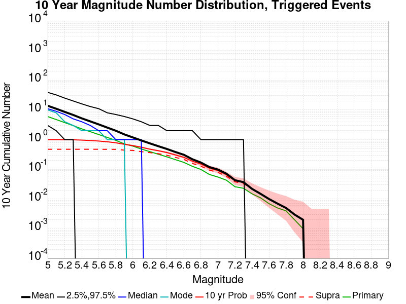
| Mag | Mean | 2.5 %ile | 97.5 %ile | Median | Mode | 10 yr Probability | 10 yr Prob 95% Conf | 10 yr Supra-Seis Prob | Primary Aftershocks Mean |
|---|---|---|---|---|---|---|---|---|---|
| M≥5 | 13.800 | 3.000 | 39.000 | 11.000 | 10.000 | 1.000 (100.00%) | [99.52% 100.00%] | 0.472 (47.20%) | 5.966 |
| M≥5.1 | 10.956 | 2.000 | 32.000 | 9.000 | 8.000 | 0.996 (99.60%) | [98.90% 99.87%] | 0.472 (47.20%) | 4.746 |
| M≥5.2 | 8.584 | 1.000 | 25.000 | 7.000 | 4.000 | 0.994 (99.40%) | [98.63% 99.76%] | 0.472 (47.20%) | 3.745 |
| M≥5.3 | 6.760 | 1.000 | 20.000 | 5.000 | 3.000 | 0.986 (98.60%) | [97.60% 99.20%] | 0.472 (47.20%) | 2.956 |
| M≥5.4 | 5.201 | 0.000 | 16.000 | 4.000 | 2.000 | 0.963 (96.30%) | [94.88% 97.35%] | 0.472 (47.20%) | 2.302 |
| M≥5.5 | 4.116 | 0.000 | 13.000 | 3.000 | 2.000 | 0.932 (93.20%) | [91.41% 94.65%] | 0.472 (47.20%) | 1.853 |
| M≥5.6 | 3.251 | 0.000 | 11.000 | 2.000 | 2.000 | 0.896 (89.60%) | [87.50% 91.39%] | 0.472 (47.20%) | 1.482 |
| M≥5.7 | 2.539 | 0.000 | 8.000 | 2.000 | 1.000 | 0.846 (84.60%) | [82.18% 86.75%] | 0.471 (47.10%) | 1.185 |
| M≥5.8 | 1.993 | 0.000 | 7.000 | 1.000 | 1.000 | 0.784 (78.40%) | [75.69% 80.89%] | 0.471 (47.10%) | 0.944 |
| M≥5.9 | 1.500 | 0.000 | 6.000 | 1.000 | 1.000 | 0.696 (69.60%) | [66.63% 72.42%] | 0.443 (44.30%) | 0.721 |
| M≥6 | 1.186 | 0.000 | 5.000 | 1.000 | 0.000 | 0.629 (62.90%) | [59.81% 65.89%] | 0.434 (43.40%) | 0.605 |
| M≥6.1 | 0.939 | 0.000 | 4.000 | 1.000 | 0.000 | 0.553 (55.30%) | [52.15% 58.40%] | 0.393 (39.30%) | 0.484 |
| M≥6.2 | 0.748 | 0.000 | 3.000 | 0.000 | 0.000 | 0.478 (47.80%) | [44.67% 50.95%] | 0.365 (36.50%) | 0.394 |
| M≥6.3 | 0.600 | 0.000 | 3.000 | 0.000 | 0.000 | 0.423 (42.30%) | [39.22% 45.44%] | 0.336 (33.60%) | 0.322 |
| M≥6.4 | 0.485 | 0.000 | 2.000 | 0.000 | 0.000 | 0.368 (36.80%) | [33.82% 39.88%] | 0.297 (29.70%) | 0.263 |
| M≥6.5 | 0.383 | 0.000 | 2.000 | 0.000 | 0.000 | 0.305 (30.50%) | [27.68% 33.47%] | 0.252 (25.20%) | 0.212 |
| M≥6.6 | 0.308 | 0.000 | 2.000 | 0.000 | 0.000 | 0.253 (25.30%) | [22.66% 28.14%] | 0.215 (21.50%) | 0.171 |
| M≥6.7 | 0.218 | 0.000 | 2.000 | 0.000 | 0.000 | 0.188 (18.80%) | [16.45% 21.39%] | 0.158 (15.80%) | 0.126 |
| M≥6.8 | 0.169 | 0.000 | 1.000 | 0.000 | 0.000 | 0.150 (15.00%) | [12.87% 17.40%] | 0.127 (12.70%) | 0.099 |
| M≥6.9 | 0.119 | 0.000 | 1.000 | 0.000 | 0.000 | 0.109 (10.90%) | [9.07% 13.04%] | 0.094 (9.40%) | 0.067 |
| M≥7 | 0.098 | 0.000 | 1.000 | 0.000 | 0.000 | 0.091 (9.10%) | [7.43% 11.10%] | 0.079 (7.90%) | 0.055 |
| M≥7.1 | 0.071 | 0.000 | 1.000 | 0.000 | 0.000 | 0.065 (6.50%) | [5.09% 8.26%] | 0.058 (5.80%) | 0.043 |
| M≥7.2 | 0.043 | 0.000 | 1.000 | 0.000 | 0.000 | 0.041 (4.10%) | [2.99% 5.57%] | 0.038 (3.80%) | 0.026 |
| M≥7.3 | 0.037 | 0.000 | 1.000 | 0.000 | 0.000 | 0.036 (3.60%) | [2.57% 5.00%] | 0.033 (3.30%) | 0.023 |
| M≥7.4 | 0.022 | 0.000 | 0.000 | 0.000 | 0.000 | 0.022 (2.20%) | [1.42% 3.37%] | 0.022 (2.20%) | 0.015 |
| M≥7.5 | 0.015 | 0.000 | 0.000 | 0.000 | 0.000 | 0.015 (1.50%) | [0.87% 2.52%] | 0.015 (1.50%) | 0.011 |
| M≥7.6 | 0.010 | 0.000 | 0.000 | 0.000 | 0.000 | 0.010 (1.00%) | [0.51% 1.90%] | 0.010 (1.00%) | 7.00E-3 |
| M≥7.7 | 7.00E-3 | 0.000 | 0.000 | 0.000 | 0.000 | 7.00E-3 (0.70%) | [0.31% 1.50%] | 7.00E-3 (0.70%) | 5.00E-3 |
| M≥7.8 | 5.00E-3 | 0.000 | 0.000 | 0.000 | 0.000 | 5.00E-3 (0.50%) | [0.18% 1.23%] | 5.00E-3 (0.50%) | 4.00E-3 |
| M≥7.9 | 3.00E-3 | 0.000 | 0.000 | 0.000 | 0.000 | 3.00E-3 (0.30%) | [0.08% 0.95%] | 3.00E-3 (0.30%) | 2.00E-3 |
| M≥8 | 2.00E-3 | 0.000 | 0.000 | 0.000 | 0.000 | 2.00E-3 (0.20%) | [0.03% 0.80%] | 2.00E-3 (0.20%) | 1.00E-3 |
| M≥8.1 | 0.000 | 0.000 | 0.000 | 0.000 | 0.000 | 0.000 (0.00%) | [0.00% 0.48%] | 0.000 (0.00%) | 0.000 |
| M≥8.2 | 0.000 | 0.000 | 0.000 | 0.000 | 0.000 | 0.000 (0.00%) | [0.00% 0.48%] | 0.000 (0.00%) | 0.000 |
| M≥8.3 | 0.000 | 0.000 | 0.000 | 0.000 | 0.000 | 0.000 (0.00%) | [0.00% 0.48%] | 0.000 (0.00%) | 0.000 |
| M≥8.4 | 0.000 | 0.000 | 0.000 | 0.000 | 0.000 | 0.000 (0.00%) | [0.00% 0.48%] | 0.000 (0.00%) | 0.000 |
| M≥8.5 | 0.000 | 0.000 | 0.000 | 0.000 | 0.000 | 0.000 (0.00%) | [0.00% 0.48%] | 0.000 (0.00%) | 0.000 |
| M≥8.6 | 0.000 | 0.000 | 0.000 | 0.000 | 0.000 | 0.000 (0.00%) | [0.00% 0.48%] | 0.000 (0.00%) | 0.000 |
| M≥8.7 | 0.000 | 0.000 | 0.000 | 0.000 | 0.000 | 0.000 (0.00%) | [0.00% 0.48%] | 0.000 (0.00%) | 0.000 |
| M≥8.8 | 0.000 | 0.000 | 0.000 | 0.000 | 0.000 | 0.000 (0.00%) | [0.00% 0.48%] | 0.000 (0.00%) | 0.000 |
| M≥8.9 | 0.000 | 0.000 | 0.000 | 0.000 | 0.000 | 0.000 (0.00%) | [0.00% 0.48%] | 0.000 (0.00%) | 0.000 |
| M≥9 | 0.000 | 0.000 | 0.000 | 0.000 | 0.000 | 0.000 (0.00%) | [0.00% 0.48%] | 0.000 (0.00%) | 0.000 |
Note: This section includes both spontaneous and triggered events
Legend
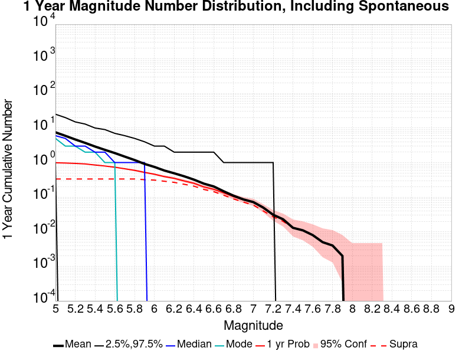
| Mag | Mean | 2.5 %ile | 97.5 %ile | Median | Mode | 1 yr Probability | 1 yr Prob 95% Conf | 1 yr Supra-Seis Prob |
|---|---|---|---|---|---|---|---|---|
| M≥5 | 7.500 | 1.000 | 25.000 | 6.000 | 5.000 | 0.989 (98.90%) | [97.98% 99.42%] | 0.336 (33.60%) |
| M≥5.1 | 5.941 | 0.000 | 20.000 | 5.000 | 3.000 | 0.971 (97.10%) | [95.81% 98.01%] | 0.336 (33.60%) |
| M≥5.2 | 4.660 | 0.000 | 15.000 | 3.000 | 3.000 | 0.947 (94.70%) | [93.08% 95.97%] | 0.336 (33.60%) |
| M≥5.3 | 3.710 | 0.000 | 13.000 | 3.000 | 2.000 | 0.914 (91.40%) | [89.45% 93.03%] | 0.336 (33.60%) |
| M≥5.4 | 2.914 | 0.000 | 10.000 | 2.000 | 2.000 | 0.850 (85.00%) | [82.60% 87.13%] | 0.336 (33.60%) |
| M≥5.5 | 2.332 | 0.000 | 9.000 | 2.000 | 1.000 | 0.796 (79.60%) | [76.94% 82.03%] | 0.336 (33.60%) |
| M≥5.6 | 1.884 | 0.000 | 7.000 | 1.000 | 1.000 | 0.734 (73.40%) | [70.52% 76.09%] | 0.336 (33.60%) |
| M≥5.7 | 1.490 | 0.000 | 6.000 | 1.000 | 0.000 | 0.663 (66.30%) | [63.26% 69.21%] | 0.336 (33.60%) |
| M≥5.8 | 1.184 | 0.000 | 5.000 | 1.000 | 0.000 | 0.596 (59.60%) | [56.48% 62.65%] | 0.336 (33.60%) |
| M≥5.9 | 0.916 | 0.000 | 4.000 | 1.000 | 0.000 | 0.523 (52.30%) | [49.15% 55.43%] | 0.321 (32.10%) |
| M≥6 | 0.749 | 0.000 | 3.000 | 0.000 | 0.000 | 0.461 (46.10%) | [42.98% 49.25%] | 0.312 (31.20%) |
| M≥6.1 | 0.590 | 0.000 | 3.000 | 0.000 | 0.000 | 0.393 (39.30%) | [36.27% 42.41%] | 0.289 (28.90%) |
| M≥6.2 | 0.490 | 0.000 | 2.000 | 0.000 | 0.000 | 0.350 (35.00%) | [32.06% 38.06%] | 0.268 (26.80%) |
| M≥6.3 | 0.402 | 0.000 | 2.000 | 0.000 | 0.000 | 0.295 (29.50%) | [26.71% 32.45%] | 0.236 (23.60%) |
| M≥6.4 | 0.321 | 0.000 | 2.000 | 0.000 | 0.000 | 0.252 (25.20%) | [22.56% 28.03%] | 0.208 (20.80%) |
| M≥6.5 | 0.246 | 0.000 | 2.000 | 0.000 | 0.000 | 0.198 (19.80%) | [17.40% 22.44%] | 0.167 (16.70%) |
| M≥6.6 | 0.204 | 0.000 | 2.000 | 0.000 | 0.000 | 0.169 (16.90%) | [14.66% 19.40%] | 0.144 (14.40%) |
| M≥6.7 | 0.148 | 0.000 | 1.000 | 0.000 | 0.000 | 0.133 (13.30%) | [11.29% 15.60%] | 0.114 (11.40%) |
| M≥6.8 | 0.110 | 0.000 | 1.000 | 0.000 | 0.000 | 0.103 (10.30%) | [8.52% 12.39%] | 0.089 (8.90%) |
| M≥6.9 | 0.086 | 0.000 | 1.000 | 0.000 | 0.000 | 0.083 (8.30%) | [6.70% 10.23%] | 0.072 (7.20%) |
| M≥7 | 0.072 | 0.000 | 1.000 | 0.000 | 0.000 | 0.070 (7.00%) | [5.53% 8.81%] | 0.059 (5.90%) |
| M≥7.1 | 0.050 | 0.000 | 1.000 | 0.000 | 0.000 | 0.048 (4.80%) | [3.60% 6.36%] | 0.040 (4.00%) |
| M≥7.2 | 0.031 | 0.000 | 1.000 | 0.000 | 0.000 | 0.030 (3.00%) | [2.07% 4.31%] | 0.027 (2.70%) |
| M≥7.3 | 0.023 | 0.000 | 0.000 | 0.000 | 0.000 | 0.022 (2.20%) | [1.42% 3.37%] | 0.020 (2.00%) |
| M≥7.4 | 0.013 | 0.000 | 0.000 | 0.000 | 0.000 | 0.013 (1.30%) | [0.72% 2.27%] | 0.013 (1.30%) |
| M≥7.5 | 0.011 | 0.000 | 0.000 | 0.000 | 0.000 | 0.011 (1.10%) | [0.58% 2.02%] | 0.011 (1.10%) |
| M≥7.6 | 8.00E-3 | 0.000 | 0.000 | 0.000 | 0.000 | 8.00E-3 (0.80%) | [0.37% 1.64%] | 8.00E-3 (0.80%) |
| M≥7.7 | 5.00E-3 | 0.000 | 0.000 | 0.000 | 0.000 | 5.00E-3 (0.50%) | [0.18% 1.23%] | 5.00E-3 (0.50%) |
| M≥7.8 | 4.00E-3 | 0.000 | 0.000 | 0.000 | 0.000 | 4.00E-3 (0.40%) | [0.13% 1.10%] | 4.00E-3 (0.40%) |
| M≥7.9 | 2.00E-3 | 0.000 | 0.000 | 0.000 | 0.000 | 2.00E-3 (0.20%) | [0.03% 0.80%] | 2.00E-3 (0.20%) |
| M≥8 | 0.000 | 0.000 | 0.000 | 0.000 | 0.000 | 0.000 (0.00%) | [0.00% 0.48%] | 0.000 (0.00%) |
| M≥8.1 | 0.000 | 0.000 | 0.000 | 0.000 | 0.000 | 0.000 (0.00%) | [0.00% 0.48%] | 0.000 (0.00%) |
| M≥8.2 | 0.000 | 0.000 | 0.000 | 0.000 | 0.000 | 0.000 (0.00%) | [0.00% 0.48%] | 0.000 (0.00%) |
| M≥8.3 | 0.000 | 0.000 | 0.000 | 0.000 | 0.000 | 0.000 (0.00%) | [0.00% 0.48%] | 0.000 (0.00%) |
| M≥8.4 | 0.000 | 0.000 | 0.000 | 0.000 | 0.000 | 0.000 (0.00%) | [0.00% 0.48%] | 0.000 (0.00%) |
| M≥8.5 | 0.000 | 0.000 | 0.000 | 0.000 | 0.000 | 0.000 (0.00%) | [0.00% 0.48%] | 0.000 (0.00%) |
| M≥8.6 | 0.000 | 0.000 | 0.000 | 0.000 | 0.000 | 0.000 (0.00%) | [0.00% 0.48%] | 0.000 (0.00%) |
| M≥8.7 | 0.000 | 0.000 | 0.000 | 0.000 | 0.000 | 0.000 (0.00%) | [0.00% 0.48%] | 0.000 (0.00%) |
| M≥8.8 | 0.000 | 0.000 | 0.000 | 0.000 | 0.000 | 0.000 (0.00%) | [0.00% 0.48%] | 0.000 (0.00%) |
| M≥8.9 | 0.000 | 0.000 | 0.000 | 0.000 | 0.000 | 0.000 (0.00%) | [0.00% 0.48%] | 0.000 (0.00%) |
| M≥9 | 0.000 | 0.000 | 0.000 | 0.000 | 0.000 | 0.000 (0.00%) | [0.00% 0.48%] | 0.000 (0.00%) |
Note: This section only includes triggered events, spontaneous were calculated but filtered out here
Legend
| Mag | Mean | 2.5 %ile | 97.5 %ile | Median | Mode | 1 yr Probability | 1 yr Prob 95% Conf | 1 yr Supra-Seis Prob | Primary Aftershocks Mean |
|---|---|---|---|---|---|---|---|---|---|
| M≥5 | 1.841 | 0.000 | 7.000 | 1.000 | 0.000 | 0.712 (71.20%) | [68.27% 73.97%] | 0.089 (8.90%) | 0.986 |
| M≥5.1 | 1.474 | 0.000 | 6.000 | 1.000 | 0.000 | 0.648 (64.80%) | [61.74% 67.75%] | 0.089 (8.90%) | 0.795 |
| M≥5.2 | 1.148 | 0.000 | 5.000 | 1.000 | 0.000 | 0.550 (55.00%) | [51.85% 58.11%] | 0.089 (8.90%) | 0.616 |
| M≥5.3 | 0.927 | 0.000 | 4.000 | 0.000 | 0.000 | 0.490 (49.00%) | [45.86% 52.15%] | 0.089 (8.90%) | 0.508 |
| M≥5.4 | 0.716 | 0.000 | 4.000 | 0.000 | 0.000 | 0.402 (40.20%) | [37.15% 43.32%] | 0.089 (8.90%) | 0.389 |
| M≥5.5 | 0.570 | 0.000 | 3.000 | 0.000 | 0.000 | 0.344 (34.40%) | [31.47% 37.45%] | 0.089 (8.90%) | 0.319 |
| M≥5.6 | 0.456 | 0.000 | 3.000 | 0.000 | 0.000 | 0.297 (29.70%) | [26.90% 32.66%] | 0.089 (8.90%) | 0.268 |
| M≥5.7 | 0.356 | 0.000 | 2.000 | 0.000 | 0.000 | 0.246 (24.60%) | [21.98% 27.41%] | 0.089 (8.90%) | 0.215 |
| M≥5.8 | 0.279 | 0.000 | 2.000 | 0.000 | 0.000 | 0.209 (20.90%) | [18.45% 23.58%] | 0.089 (8.90%) | 0.166 |
| M≥5.9 | 0.205 | 0.000 | 2.000 | 0.000 | 0.000 | 0.167 (16.70%) | [14.47% 19.19%] | 0.080 (8.00%) | 0.123 |
| M≥6 | 0.167 | 0.000 | 1.000 | 0.000 | 0.000 | 0.141 (14.10%) | [12.03% 16.45%] | 0.077 (7.70%) | 0.107 |
| M≥6.1 | 0.125 | 0.000 | 1.000 | 0.000 | 0.000 | 0.109 (10.90%) | [9.07% 13.04%] | 0.067 (6.70%) | 0.081 |
| M≥6.2 | 0.101 | 0.000 | 1.000 | 0.000 | 0.000 | 0.091 (9.10%) | [7.43% 11.10%] | 0.062 (6.20%) | 0.067 |
| M≥6.3 | 0.081 | 0.000 | 1.000 | 0.000 | 0.000 | 0.073 (7.30%) | [5.80% 9.14%] | 0.052 (5.20%) | 0.054 |
| M≥6.4 | 0.066 | 0.000 | 1.000 | 0.000 | 0.000 | 0.059 (5.90%) | [4.56% 7.59%] | 0.041 (4.10%) | 0.046 |
| M≥6.5 | 0.051 | 0.000 | 1.000 | 0.000 | 0.000 | 0.045 (4.50%) | [3.34% 6.02%] | 0.034 (3.40%) | 0.034 |
| M≥6.6 | 0.043 | 0.000 | 1.000 | 0.000 | 0.000 | 0.038 (3.80%) | [2.74% 5.23%] | 0.030 (3.00%) | 0.028 |
| M≥6.7 | 0.029 | 0.000 | 1.000 | 0.000 | 0.000 | 0.027 (2.70%) | [1.82% 3.96%] | 0.023 (2.30%) | 0.020 |
| M≥6.8 | 0.015 | 0.000 | 0.000 | 0.000 | 0.000 | 0.015 (1.50%) | [0.87% 2.52%] | 0.013 (1.30%) | 0.011 |
| M≥6.9 | 0.011 | 0.000 | 0.000 | 0.000 | 0.000 | 0.011 (1.10%) | [0.58% 2.02%] | 9.00E-3 (0.90%) | 8.00E-3 |
| M≥7 | 0.010 | 0.000 | 0.000 | 0.000 | 0.000 | 0.010 (1.00%) | [0.51% 1.90%] | 8.00E-3 (0.80%) | 7.00E-3 |
| M≥7.1 | 7.00E-3 | 0.000 | 0.000 | 0.000 | 0.000 | 7.00E-3 (0.70%) | [0.31% 1.50%] | 6.00E-3 (0.60%) | 6.00E-3 |
| M≥7.2 | 2.00E-3 | 0.000 | 0.000 | 0.000 | 0.000 | 2.00E-3 (0.20%) | [0.03% 0.80%] | 2.00E-3 (0.20%) | 1.00E-3 |
| M≥7.3 | 1.00E-3 | 0.000 | 0.000 | 0.000 | 0.000 | 1.00E-3 (0.10%) | [0.01% 0.65%] | 1.00E-3 (0.10%) | 1.00E-3 |
| M≥7.4 | 1.00E-3 | 0.000 | 0.000 | 0.000 | 0.000 | 1.00E-3 (0.10%) | [0.01% 0.65%] | 1.00E-3 (0.10%) | 1.00E-3 |
| M≥7.5 | 1.00E-3 | 0.000 | 0.000 | 0.000 | 0.000 | 1.00E-3 (0.10%) | [0.01% 0.65%] | 1.00E-3 (0.10%) | 1.00E-3 |
| M≥7.6 | 0.000 | 0.000 | 0.000 | 0.000 | 0.000 | 0.000 (0.00%) | [0.00% 0.48%] | 0.000 (0.00%) | 0.000 |
| M≥7.7 | 0.000 | 0.000 | 0.000 | 0.000 | 0.000 | 0.000 (0.00%) | [0.00% 0.48%] | 0.000 (0.00%) | 0.000 |
| M≥7.8 | 0.000 | 0.000 | 0.000 | 0.000 | 0.000 | 0.000 (0.00%) | [0.00% 0.48%] | 0.000 (0.00%) | 0.000 |
| M≥7.9 | 0.000 | 0.000 | 0.000 | 0.000 | 0.000 | 0.000 (0.00%) | [0.00% 0.48%] | 0.000 (0.00%) | 0.000 |
| M≥8 | 0.000 | 0.000 | 0.000 | 0.000 | 0.000 | 0.000 (0.00%) | [0.00% 0.48%] | 0.000 (0.00%) | 0.000 |
| M≥8.1 | 0.000 | 0.000 | 0.000 | 0.000 | 0.000 | 0.000 (0.00%) | [0.00% 0.48%] | 0.000 (0.00%) | 0.000 |
| M≥8.2 | 0.000 | 0.000 | 0.000 | 0.000 | 0.000 | 0.000 (0.00%) | [0.00% 0.48%] | 0.000 (0.00%) | 0.000 |
| M≥8.3 | 0.000 | 0.000 | 0.000 | 0.000 | 0.000 | 0.000 (0.00%) | [0.00% 0.48%] | 0.000 (0.00%) | 0.000 |
| M≥8.4 | 0.000 | 0.000 | 0.000 | 0.000 | 0.000 | 0.000 (0.00%) | [0.00% 0.48%] | 0.000 (0.00%) | 0.000 |
| M≥8.5 | 0.000 | 0.000 | 0.000 | 0.000 | 0.000 | 0.000 (0.00%) | [0.00% 0.48%] | 0.000 (0.00%) | 0.000 |
| M≥8.6 | 0.000 | 0.000 | 0.000 | 0.000 | 0.000 | 0.000 (0.00%) | [0.00% 0.48%] | 0.000 (0.00%) | 0.000 |
| M≥8.7 | 0.000 | 0.000 | 0.000 | 0.000 | 0.000 | 0.000 (0.00%) | [0.00% 0.48%] | 0.000 (0.00%) | 0.000 |
| M≥8.8 | 0.000 | 0.000 | 0.000 | 0.000 | 0.000 | 0.000 (0.00%) | [0.00% 0.48%] | 0.000 (0.00%) | 0.000 |
| M≥8.9 | 0.000 | 0.000 | 0.000 | 0.000 | 0.000 | 0.000 (0.00%) | [0.00% 0.48%] | 0.000 (0.00%) | 0.000 |
| M≥9 | 0.000 | 0.000 | 0.000 | 0.000 | 0.000 | 0.000 (0.00%) | [0.00% 0.48%] | 0.000 (0.00%) | 0.000 |
Note: This section includes both spontaneous and triggered events
Legend
| Mag | Mean | 2.5 %ile | 97.5 %ile | Median | Mode | 1 mo Probability | 1 mo Prob 95% Conf | 1 mo Supra-Seis Prob |
|---|---|---|---|---|---|---|---|---|
| M≥5 | 0.453 | 0.000 | 3.000 | 0.000 | 0.000 | 0.296 (29.60%) | [26.80% 32.55%] | 0.027 (2.70%) |
| M≥5.1 | 0.372 | 0.000 | 3.000 | 0.000 | 0.000 | 0.251 (25.10%) | [22.46% 27.93%] | 0.027 (2.70%) |
| M≥5.2 | 0.297 | 0.000 | 2.000 | 0.000 | 0.000 | 0.212 (21.20%) | [18.73% 23.89%] | 0.027 (2.70%) |
| M≥5.3 | 0.234 | 0.000 | 2.000 | 0.000 | 0.000 | 0.175 (17.50%) | [15.22% 20.03%] | 0.027 (2.70%) |
| M≥5.4 | 0.174 | 0.000 | 2.000 | 0.000 | 0.000 | 0.134 (13.40%) | [11.38% 15.71%] | 0.027 (2.70%) |
| M≥5.5 | 0.148 | 0.000 | 1.000 | 0.000 | 0.000 | 0.117 (11.70%) | [9.81% 13.89%] | 0.027 (2.70%) |
| M≥5.6 | 0.114 | 0.000 | 1.000 | 0.000 | 0.000 | 0.093 (9.30%) | [7.61% 11.31%] | 0.027 (2.70%) |
| M≥5.7 | 0.087 | 0.000 | 1.000 | 0.000 | 0.000 | 0.073 (7.30%) | [5.80% 9.14%] | 0.027 (2.70%) |
| M≥5.8 | 0.073 | 0.000 | 1.000 | 0.000 | 0.000 | 0.063 (6.30%) | [4.91% 8.03%] | 0.027 (2.70%) |
| M≥5.9 | 0.054 | 0.000 | 1.000 | 0.000 | 0.000 | 0.049 (4.90%) | [3.68% 6.48%] | 0.024 (2.40%) |
| M≥6 | 0.044 | 0.000 | 1.000 | 0.000 | 0.000 | 0.041 (4.10%) | [2.99% 5.57%] | 0.022 (2.20%) |
| M≥6.1 | 0.036 | 0.000 | 1.000 | 0.000 | 0.000 | 0.036 (3.60%) | [2.57% 5.00%] | 0.019 (1.90%) |
| M≥6.2 | 0.026 | 0.000 | 1.000 | 0.000 | 0.000 | 0.026 (2.60%) | [1.74% 3.84%] | 0.016 (1.60%) |
| M≥6.3 | 0.021 | 0.000 | 0.000 | 0.000 | 0.000 | 0.021 (2.10%) | [1.34% 3.25%] | 0.014 (1.40%) |
| M≥6.4 | 0.014 | 0.000 | 0.000 | 0.000 | 0.000 | 0.014 (1.40%) | [0.80% 2.40%] | 0.010 (1.00%) |
| M≥6.5 | 9.00E-3 | 0.000 | 0.000 | 0.000 | 0.000 | 9.00E-3 (0.90%) | [0.44% 1.77%] | 7.00E-3 (0.70%) |
| M≥6.6 | 7.00E-3 | 0.000 | 0.000 | 0.000 | 0.000 | 7.00E-3 (0.70%) | [0.31% 1.50%] | 5.00E-3 (0.50%) |
| M≥6.7 | 5.00E-3 | 0.000 | 0.000 | 0.000 | 0.000 | 5.00E-3 (0.50%) | [0.18% 1.23%] | 3.00E-3 (0.30%) |
| M≥6.8 | 4.00E-3 | 0.000 | 0.000 | 0.000 | 0.000 | 4.00E-3 (0.40%) | [0.13% 1.10%] | 2.00E-3 (0.20%) |
| M≥6.9 | 2.00E-3 | 0.000 | 0.000 | 0.000 | 0.000 | 2.00E-3 (0.20%) | [0.03% 0.80%] | 1.00E-3 (0.10%) |
| M≥7 | 2.00E-3 | 0.000 | 0.000 | 0.000 | 0.000 | 2.00E-3 (0.20%) | [0.03% 0.80%] | 1.00E-3 (0.10%) |
| M≥7.1 | 1.00E-3 | 0.000 | 0.000 | 0.000 | 0.000 | 1.00E-3 (0.10%) | [0.01% 0.65%] | 1.00E-3 (0.10%) |
| M≥7.2 | 0.000 | 0.000 | 0.000 | 0.000 | 0.000 | 0.000 (0.00%) | [0.00% 0.48%] | 0.000 (0.00%) |
| M≥7.3 | 0.000 | 0.000 | 0.000 | 0.000 | 0.000 | 0.000 (0.00%) | [0.00% 0.48%] | 0.000 (0.00%) |
| M≥7.4 | 0.000 | 0.000 | 0.000 | 0.000 | 0.000 | 0.000 (0.00%) | [0.00% 0.48%] | 0.000 (0.00%) |
| M≥7.5 | 0.000 | 0.000 | 0.000 | 0.000 | 0.000 | 0.000 (0.00%) | [0.00% 0.48%] | 0.000 (0.00%) |
| M≥7.6 | 0.000 | 0.000 | 0.000 | 0.000 | 0.000 | 0.000 (0.00%) | [0.00% 0.48%] | 0.000 (0.00%) |
| M≥7.7 | 0.000 | 0.000 | 0.000 | 0.000 | 0.000 | 0.000 (0.00%) | [0.00% 0.48%] | 0.000 (0.00%) |
| M≥7.8 | 0.000 | 0.000 | 0.000 | 0.000 | 0.000 | 0.000 (0.00%) | [0.00% 0.48%] | 0.000 (0.00%) |
| M≥7.9 | 0.000 | 0.000 | 0.000 | 0.000 | 0.000 | 0.000 (0.00%) | [0.00% 0.48%] | 0.000 (0.00%) |
| M≥8 | 0.000 | 0.000 | 0.000 | 0.000 | 0.000 | 0.000 (0.00%) | [0.00% 0.48%] | 0.000 (0.00%) |
| M≥8.1 | 0.000 | 0.000 | 0.000 | 0.000 | 0.000 | 0.000 (0.00%) | [0.00% 0.48%] | 0.000 (0.00%) |
| M≥8.2 | 0.000 | 0.000 | 0.000 | 0.000 | 0.000 | 0.000 (0.00%) | [0.00% 0.48%] | 0.000 (0.00%) |
| M≥8.3 | 0.000 | 0.000 | 0.000 | 0.000 | 0.000 | 0.000 (0.00%) | [0.00% 0.48%] | 0.000 (0.00%) |
| M≥8.4 | 0.000 | 0.000 | 0.000 | 0.000 | 0.000 | 0.000 (0.00%) | [0.00% 0.48%] | 0.000 (0.00%) |
| M≥8.5 | 0.000 | 0.000 | 0.000 | 0.000 | 0.000 | 0.000 (0.00%) | [0.00% 0.48%] | 0.000 (0.00%) |
| M≥8.6 | 0.000 | 0.000 | 0.000 | 0.000 | 0.000 | 0.000 (0.00%) | [0.00% 0.48%] | 0.000 (0.00%) |
| M≥8.7 | 0.000 | 0.000 | 0.000 | 0.000 | 0.000 | 0.000 (0.00%) | [0.00% 0.48%] | 0.000 (0.00%) |
| M≥8.8 | 0.000 | 0.000 | 0.000 | 0.000 | 0.000 | 0.000 (0.00%) | [0.00% 0.48%] | 0.000 (0.00%) |
| M≥8.9 | 0.000 | 0.000 | 0.000 | 0.000 | 0.000 | 0.000 (0.00%) | [0.00% 0.48%] | 0.000 (0.00%) |
| M≥9 | 0.000 | 0.000 | 0.000 | 0.000 | 0.000 | 0.000 (0.00%) | [0.00% 0.48%] | 0.000 (0.00%) |
Note: This section only includes triggered events, spontaneous were calculated but filtered out here
Legend
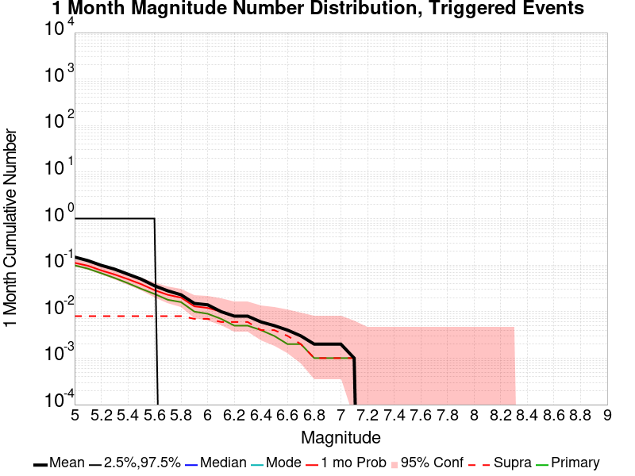
| Mag | Mean | 2.5 %ile | 97.5 %ile | Median | Mode | 1 mo Probability | 1 mo Prob 95% Conf | 1 mo Supra-Seis Prob | Primary Aftershocks Mean |
|---|---|---|---|---|---|---|---|---|---|
| M≥5 | 0.149 | 0.000 | 1.000 | 0.000 | 0.000 | 0.112 (11.20%) | [9.35% 13.36%] | 8.00E-3 (0.80%) | 0.099 |
| M≥5.1 | 0.125 | 0.000 | 1.000 | 0.000 | 0.000 | 0.097 (9.70%) | [7.97% 11.75%] | 8.00E-3 (0.80%) | 0.084 |
| M≥5.2 | 0.099 | 0.000 | 1.000 | 0.000 | 0.000 | 0.077 (7.70%) | [6.16% 9.57%] | 8.00E-3 (0.80%) | 0.067 |
| M≥5.3 | 0.082 | 0.000 | 1.000 | 0.000 | 0.000 | 0.063 (6.30%) | [4.91% 8.03%] | 8.00E-3 (0.80%) | 0.053 |
| M≥5.4 | 0.064 | 0.000 | 1.000 | 0.000 | 0.000 | 0.050 (5.00%) | [3.77% 6.59%] | 8.00E-3 (0.80%) | 0.041 |
| M≥5.5 | 0.050 | 0.000 | 1.000 | 0.000 | 0.000 | 0.039 (3.90%) | [2.82% 5.34%] | 8.00E-3 (0.80%) | 0.031 |
| M≥5.6 | 0.036 | 0.000 | 1.000 | 0.000 | 0.000 | 0.029 (2.90%) | [1.99% 4.19%] | 8.00E-3 (0.80%) | 0.024 |
| M≥5.7 | 0.028 | 0.000 | 0.000 | 0.000 | 0.000 | 0.023 (2.30%) | [1.50% 3.49%] | 8.00E-3 (0.80%) | 0.018 |
| M≥5.8 | 0.023 | 0.000 | 0.000 | 0.000 | 0.000 | 0.020 (2.00%) | [1.26% 3.13%] | 8.00E-3 (0.80%) | 0.016 |
| M≥5.9 | 0.015 | 0.000 | 0.000 | 0.000 | 0.000 | 0.013 (1.30%) | [0.72% 2.27%] | 7.00E-3 (0.70%) | 0.010 |
| M≥6 | 0.014 | 0.000 | 0.000 | 0.000 | 0.000 | 0.012 (1.20%) | [0.65% 2.15%] | 7.00E-3 (0.70%) | 9.00E-3 |
| M≥6.1 | 0.010 | 0.000 | 0.000 | 0.000 | 0.000 | 0.010 (1.00%) | [0.51% 1.90%] | 6.00E-3 (0.60%) | 7.00E-3 |
| M≥6.2 | 8.00E-3 | 0.000 | 0.000 | 0.000 | 0.000 | 8.00E-3 (0.80%) | [0.37% 1.64%] | 6.00E-3 (0.60%) | 5.00E-3 |
| M≥6.3 | 8.00E-3 | 0.000 | 0.000 | 0.000 | 0.000 | 8.00E-3 (0.80%) | [0.37% 1.64%] | 6.00E-3 (0.60%) | 5.00E-3 |
| M≥6.4 | 6.00E-3 | 0.000 | 0.000 | 0.000 | 0.000 | 6.00E-3 (0.60%) | [0.24% 1.37%] | 4.00E-3 (0.40%) | 4.00E-3 |
| M≥6.5 | 5.00E-3 | 0.000 | 0.000 | 0.000 | 0.000 | 5.00E-3 (0.50%) | [0.18% 1.23%] | 4.00E-3 (0.40%) | 3.00E-3 |
| M≥6.6 | 4.00E-3 | 0.000 | 0.000 | 0.000 | 0.000 | 4.00E-3 (0.40%) | [0.13% 1.10%] | 3.00E-3 (0.30%) | 2.00E-3 |
| M≥6.7 | 3.00E-3 | 0.000 | 0.000 | 0.000 | 0.000 | 3.00E-3 (0.30%) | [0.08% 0.95%] | 2.00E-3 (0.20%) | 2.00E-3 |
| M≥6.8 | 2.00E-3 | 0.000 | 0.000 | 0.000 | 0.000 | 2.00E-3 (0.20%) | [0.03% 0.80%] | 1.00E-3 (0.10%) | 1.00E-3 |
| M≥6.9 | 2.00E-3 | 0.000 | 0.000 | 0.000 | 0.000 | 2.00E-3 (0.20%) | [0.03% 0.80%] | 1.00E-3 (0.10%) | 1.00E-3 |
| M≥7 | 2.00E-3 | 0.000 | 0.000 | 0.000 | 0.000 | 2.00E-3 (0.20%) | [0.03% 0.80%] | 1.00E-3 (0.10%) | 1.00E-3 |
| M≥7.1 | 1.00E-3 | 0.000 | 0.000 | 0.000 | 0.000 | 1.00E-3 (0.10%) | [0.01% 0.65%] | 1.00E-3 (0.10%) | 1.00E-3 |
| M≥7.2 | 0.000 | 0.000 | 0.000 | 0.000 | 0.000 | 0.000 (0.00%) | [0.00% 0.48%] | 0.000 (0.00%) | 0.000 |
| M≥7.3 | 0.000 | 0.000 | 0.000 | 0.000 | 0.000 | 0.000 (0.00%) | [0.00% 0.48%] | 0.000 (0.00%) | 0.000 |
| M≥7.4 | 0.000 | 0.000 | 0.000 | 0.000 | 0.000 | 0.000 (0.00%) | [0.00% 0.48%] | 0.000 (0.00%) | 0.000 |
| M≥7.5 | 0.000 | 0.000 | 0.000 | 0.000 | 0.000 | 0.000 (0.00%) | [0.00% 0.48%] | 0.000 (0.00%) | 0.000 |
| M≥7.6 | 0.000 | 0.000 | 0.000 | 0.000 | 0.000 | 0.000 (0.00%) | [0.00% 0.48%] | 0.000 (0.00%) | 0.000 |
| M≥7.7 | 0.000 | 0.000 | 0.000 | 0.000 | 0.000 | 0.000 (0.00%) | [0.00% 0.48%] | 0.000 (0.00%) | 0.000 |
| M≥7.8 | 0.000 | 0.000 | 0.000 | 0.000 | 0.000 | 0.000 (0.00%) | [0.00% 0.48%] | 0.000 (0.00%) | 0.000 |
| M≥7.9 | 0.000 | 0.000 | 0.000 | 0.000 | 0.000 | 0.000 (0.00%) | [0.00% 0.48%] | 0.000 (0.00%) | 0.000 |
| M≥8 | 0.000 | 0.000 | 0.000 | 0.000 | 0.000 | 0.000 (0.00%) | [0.00% 0.48%] | 0.000 (0.00%) | 0.000 |
| M≥8.1 | 0.000 | 0.000 | 0.000 | 0.000 | 0.000 | 0.000 (0.00%) | [0.00% 0.48%] | 0.000 (0.00%) | 0.000 |
| M≥8.2 | 0.000 | 0.000 | 0.000 | 0.000 | 0.000 | 0.000 (0.00%) | [0.00% 0.48%] | 0.000 (0.00%) | 0.000 |
| M≥8.3 | 0.000 | 0.000 | 0.000 | 0.000 | 0.000 | 0.000 (0.00%) | [0.00% 0.48%] | 0.000 (0.00%) | 0.000 |
| M≥8.4 | 0.000 | 0.000 | 0.000 | 0.000 | 0.000 | 0.000 (0.00%) | [0.00% 0.48%] | 0.000 (0.00%) | 0.000 |
| M≥8.5 | 0.000 | 0.000 | 0.000 | 0.000 | 0.000 | 0.000 (0.00%) | [0.00% 0.48%] | 0.000 (0.00%) | 0.000 |
| M≥8.6 | 0.000 | 0.000 | 0.000 | 0.000 | 0.000 | 0.000 (0.00%) | [0.00% 0.48%] | 0.000 (0.00%) | 0.000 |
| M≥8.7 | 0.000 | 0.000 | 0.000 | 0.000 | 0.000 | 0.000 (0.00%) | [0.00% 0.48%] | 0.000 (0.00%) | 0.000 |
| M≥8.8 | 0.000 | 0.000 | 0.000 | 0.000 | 0.000 | 0.000 (0.00%) | [0.00% 0.48%] | 0.000 (0.00%) | 0.000 |
| M≥8.9 | 0.000 | 0.000 | 0.000 | 0.000 | 0.000 | 0.000 (0.00%) | [0.00% 0.48%] | 0.000 (0.00%) | 0.000 |
| M≥9 | 0.000 | 0.000 | 0.000 | 0.000 | 0.000 | 0.000 (0.00%) | [0.00% 0.48%] | 0.000 (0.00%) | 0.000 |
Note: This section includes both spontaneous and triggered events
Legend
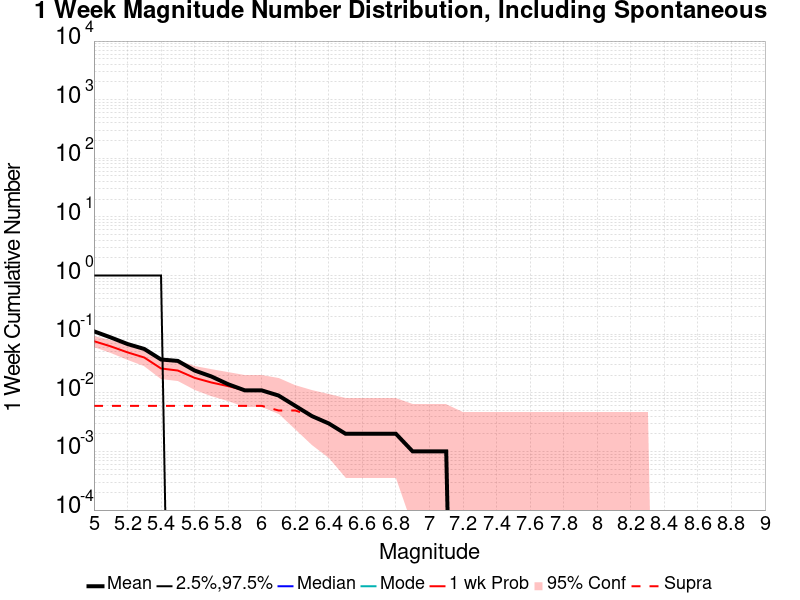
| Mag | Mean | 2.5 %ile | 97.5 %ile | Median | Mode | 1 wk Probability | 1 wk Prob 95% Conf | 1 wk Supra-Seis Prob |
|---|---|---|---|---|---|---|---|---|
| M≥5 | 0.112 | 0.000 | 1.000 | 0.000 | 0.000 | 0.076 (7.60%) | [6.07% 9.46%] | 6.00E-3 (0.60%) |
| M≥5.1 | 0.088 | 0.000 | 1.000 | 0.000 | 0.000 | 0.062 (6.20%) | [4.82% 7.92%] | 6.00E-3 (0.60%) |
| M≥5.2 | 0.068 | 0.000 | 1.000 | 0.000 | 0.000 | 0.049 (4.90%) | [3.68% 6.48%] | 6.00E-3 (0.60%) |
| M≥5.3 | 0.056 | 0.000 | 1.000 | 0.000 | 0.000 | 0.040 (4.00%) | [2.91% 5.46%] | 6.00E-3 (0.60%) |
| M≥5.4 | 0.037 | 0.000 | 1.000 | 0.000 | 0.000 | 0.026 (2.60%) | [1.74% 3.84%] | 6.00E-3 (0.60%) |
| M≥5.5 | 0.035 | 0.000 | 0.000 | 0.000 | 0.000 | 0.024 (2.40%) | [1.58% 3.61%] | 6.00E-3 (0.60%) |
| M≥5.6 | 0.024 | 0.000 | 0.000 | 0.000 | 0.000 | 0.018 (1.80%) | [1.10% 2.89%] | 6.00E-3 (0.60%) |
| M≥5.7 | 0.019 | 0.000 | 0.000 | 0.000 | 0.000 | 0.015 (1.50%) | [0.87% 2.52%] | 6.00E-3 (0.60%) |
| M≥5.8 | 0.014 | 0.000 | 0.000 | 0.000 | 0.000 | 0.013 (1.30%) | [0.72% 2.27%] | 6.00E-3 (0.60%) |
| M≥5.9 | 0.011 | 0.000 | 0.000 | 0.000 | 0.000 | 0.011 (1.10%) | [0.58% 2.02%] | 6.00E-3 (0.60%) |
| M≥6 | 0.011 | 0.000 | 0.000 | 0.000 | 0.000 | 0.011 (1.10%) | [0.58% 2.02%] | 6.00E-3 (0.60%) |
| M≥6.1 | 9.00E-3 | 0.000 | 0.000 | 0.000 | 0.000 | 9.00E-3 (0.90%) | [0.44% 1.77%] | 5.00E-3 (0.50%) |
| M≥6.2 | 6.00E-3 | 0.000 | 0.000 | 0.000 | 0.000 | 6.00E-3 (0.60%) | [0.24% 1.37%] | 5.00E-3 (0.50%) |
| M≥6.3 | 4.00E-3 | 0.000 | 0.000 | 0.000 | 0.000 | 4.00E-3 (0.40%) | [0.13% 1.10%] | 4.00E-3 (0.40%) |
| M≥6.4 | 3.00E-3 | 0.000 | 0.000 | 0.000 | 0.000 | 3.00E-3 (0.30%) | [0.08% 0.95%] | 3.00E-3 (0.30%) |
| M≥6.5 | 2.00E-3 | 0.000 | 0.000 | 0.000 | 0.000 | 2.00E-3 (0.20%) | [0.03% 0.80%] | 2.00E-3 (0.20%) |
| M≥6.6 | 2.00E-3 | 0.000 | 0.000 | 0.000 | 0.000 | 2.00E-3 (0.20%) | [0.03% 0.80%] | 2.00E-3 (0.20%) |
| M≥6.7 | 2.00E-3 | 0.000 | 0.000 | 0.000 | 0.000 | 2.00E-3 (0.20%) | [0.03% 0.80%] | 2.00E-3 (0.20%) |
| M≥6.8 | 2.00E-3 | 0.000 | 0.000 | 0.000 | 0.000 | 2.00E-3 (0.20%) | [0.03% 0.80%] | 2.00E-3 (0.20%) |
| M≥6.9 | 1.00E-3 | 0.000 | 0.000 | 0.000 | 0.000 | 1.00E-3 (0.10%) | [0.01% 0.65%] | 1.00E-3 (0.10%) |
| M≥7 | 1.00E-3 | 0.000 | 0.000 | 0.000 | 0.000 | 1.00E-3 (0.10%) | [0.01% 0.65%] | 1.00E-3 (0.10%) |
| M≥7.1 | 1.00E-3 | 0.000 | 0.000 | 0.000 | 0.000 | 1.00E-3 (0.10%) | [0.01% 0.65%] | 1.00E-3 (0.10%) |
| M≥7.2 | 0.000 | 0.000 | 0.000 | 0.000 | 0.000 | 0.000 (0.00%) | [0.00% 0.48%] | 0.000 (0.00%) |
| M≥7.3 | 0.000 | 0.000 | 0.000 | 0.000 | 0.000 | 0.000 (0.00%) | [0.00% 0.48%] | 0.000 (0.00%) |
| M≥7.4 | 0.000 | 0.000 | 0.000 | 0.000 | 0.000 | 0.000 (0.00%) | [0.00% 0.48%] | 0.000 (0.00%) |
| M≥7.5 | 0.000 | 0.000 | 0.000 | 0.000 | 0.000 | 0.000 (0.00%) | [0.00% 0.48%] | 0.000 (0.00%) |
| M≥7.6 | 0.000 | 0.000 | 0.000 | 0.000 | 0.000 | 0.000 (0.00%) | [0.00% 0.48%] | 0.000 (0.00%) |
| M≥7.7 | 0.000 | 0.000 | 0.000 | 0.000 | 0.000 | 0.000 (0.00%) | [0.00% 0.48%] | 0.000 (0.00%) |
| M≥7.8 | 0.000 | 0.000 | 0.000 | 0.000 | 0.000 | 0.000 (0.00%) | [0.00% 0.48%] | 0.000 (0.00%) |
| M≥7.9 | 0.000 | 0.000 | 0.000 | 0.000 | 0.000 | 0.000 (0.00%) | [0.00% 0.48%] | 0.000 (0.00%) |
| M≥8 | 0.000 | 0.000 | 0.000 | 0.000 | 0.000 | 0.000 (0.00%) | [0.00% 0.48%] | 0.000 (0.00%) |
| M≥8.1 | 0.000 | 0.000 | 0.000 | 0.000 | 0.000 | 0.000 (0.00%) | [0.00% 0.48%] | 0.000 (0.00%) |
| M≥8.2 | 0.000 | 0.000 | 0.000 | 0.000 | 0.000 | 0.000 (0.00%) | [0.00% 0.48%] | 0.000 (0.00%) |
| M≥8.3 | 0.000 | 0.000 | 0.000 | 0.000 | 0.000 | 0.000 (0.00%) | [0.00% 0.48%] | 0.000 (0.00%) |
| M≥8.4 | 0.000 | 0.000 | 0.000 | 0.000 | 0.000 | 0.000 (0.00%) | [0.00% 0.48%] | 0.000 (0.00%) |
| M≥8.5 | 0.000 | 0.000 | 0.000 | 0.000 | 0.000 | 0.000 (0.00%) | [0.00% 0.48%] | 0.000 (0.00%) |
| M≥8.6 | 0.000 | 0.000 | 0.000 | 0.000 | 0.000 | 0.000 (0.00%) | [0.00% 0.48%] | 0.000 (0.00%) |
| M≥8.7 | 0.000 | 0.000 | 0.000 | 0.000 | 0.000 | 0.000 (0.00%) | [0.00% 0.48%] | 0.000 (0.00%) |
| M≥8.8 | 0.000 | 0.000 | 0.000 | 0.000 | 0.000 | 0.000 (0.00%) | [0.00% 0.48%] | 0.000 (0.00%) |
| M≥8.9 | 0.000 | 0.000 | 0.000 | 0.000 | 0.000 | 0.000 (0.00%) | [0.00% 0.48%] | 0.000 (0.00%) |
| M≥9 | 0.000 | 0.000 | 0.000 | 0.000 | 0.000 | 0.000 (0.00%) | [0.00% 0.48%] | 0.000 (0.00%) |
Note: This section only includes triggered events, spontaneous were calculated but filtered out here
Legend
| Mag | Mean | 2.5 %ile | 97.5 %ile | Median | Mode | 1 wk Probability | 1 wk Prob 95% Conf | 1 wk Supra-Seis Prob | Primary Aftershocks Mean |
|---|---|---|---|---|---|---|---|---|---|
| M≥5 | 0.042 | 0.000 | 1.000 | 0.000 | 0.000 | 0.026 (2.60%) | [1.74% 3.84%] | 2.00E-3 (0.20%) | 0.020 |
| M≥5.1 | 0.032 | 0.000 | 0.000 | 0.000 | 0.000 | 0.020 (2.00%) | [1.26% 3.13%] | 2.00E-3 (0.20%) | 0.015 |
| M≥5.2 | 0.024 | 0.000 | 0.000 | 0.000 | 0.000 | 0.015 (1.50%) | [0.87% 2.52%] | 2.00E-3 (0.20%) | 0.013 |
| M≥5.3 | 0.019 | 0.000 | 0.000 | 0.000 | 0.000 | 0.011 (1.10%) | [0.58% 2.02%] | 2.00E-3 (0.20%) | 9.00E-3 |
| M≥5.4 | 0.014 | 0.000 | 0.000 | 0.000 | 0.000 | 7.00E-3 (0.70%) | [0.31% 1.50%] | 2.00E-3 (0.20%) | 5.00E-3 |
| M≥5.5 | 0.014 | 0.000 | 0.000 | 0.000 | 0.000 | 7.00E-3 (0.70%) | [0.31% 1.50%] | 2.00E-3 (0.20%) | 5.00E-3 |
| M≥5.6 | 7.00E-3 | 0.000 | 0.000 | 0.000 | 0.000 | 4.00E-3 (0.40%) | [0.13% 1.10%] | 2.00E-3 (0.20%) | 2.00E-3 |
| M≥5.7 | 7.00E-3 | 0.000 | 0.000 | 0.000 | 0.000 | 4.00E-3 (0.40%) | [0.13% 1.10%] | 2.00E-3 (0.20%) | 2.00E-3 |
| M≥5.8 | 5.00E-3 | 0.000 | 0.000 | 0.000 | 0.000 | 4.00E-3 (0.40%) | [0.13% 1.10%] | 2.00E-3 (0.20%) | 2.00E-3 |
| M≥5.9 | 3.00E-3 | 0.000 | 0.000 | 0.000 | 0.000 | 3.00E-3 (0.30%) | [0.08% 0.95%] | 2.00E-3 (0.20%) | 2.00E-3 |
| M≥6 | 3.00E-3 | 0.000 | 0.000 | 0.000 | 0.000 | 3.00E-3 (0.30%) | [0.08% 0.95%] | 2.00E-3 (0.20%) | 2.00E-3 |
| M≥6.1 | 3.00E-3 | 0.000 | 0.000 | 0.000 | 0.000 | 3.00E-3 (0.30%) | [0.08% 0.95%] | 2.00E-3 (0.20%) | 2.00E-3 |
| M≥6.2 | 2.00E-3 | 0.000 | 0.000 | 0.000 | 0.000 | 2.00E-3 (0.20%) | [0.03% 0.80%] | 2.00E-3 (0.20%) | 1.00E-3 |
| M≥6.3 | 2.00E-3 | 0.000 | 0.000 | 0.000 | 0.000 | 2.00E-3 (0.20%) | [0.03% 0.80%] | 2.00E-3 (0.20%) | 1.00E-3 |
| M≥6.4 | 1.00E-3 | 0.000 | 0.000 | 0.000 | 0.000 | 1.00E-3 (0.10%) | [0.01% 0.65%] | 1.00E-3 (0.10%) | 1.00E-3 |
| M≥6.5 | 1.00E-3 | 0.000 | 0.000 | 0.000 | 0.000 | 1.00E-3 (0.10%) | [0.01% 0.65%] | 1.00E-3 (0.10%) | 1.00E-3 |
| M≥6.6 | 1.00E-3 | 0.000 | 0.000 | 0.000 | 0.000 | 1.00E-3 (0.10%) | [0.01% 0.65%] | 1.00E-3 (0.10%) | 1.00E-3 |
| M≥6.7 | 1.00E-3 | 0.000 | 0.000 | 0.000 | 0.000 | 1.00E-3 (0.10%) | [0.01% 0.65%] | 1.00E-3 (0.10%) | 1.00E-3 |
| M≥6.8 | 1.00E-3 | 0.000 | 0.000 | 0.000 | 0.000 | 1.00E-3 (0.10%) | [0.01% 0.65%] | 1.00E-3 (0.10%) | 1.00E-3 |
| M≥6.9 | 1.00E-3 | 0.000 | 0.000 | 0.000 | 0.000 | 1.00E-3 (0.10%) | [0.01% 0.65%] | 1.00E-3 (0.10%) | 1.00E-3 |
| M≥7 | 1.00E-3 | 0.000 | 0.000 | 0.000 | 0.000 | 1.00E-3 (0.10%) | [0.01% 0.65%] | 1.00E-3 (0.10%) | 1.00E-3 |
| M≥7.1 | 1.00E-3 | 0.000 | 0.000 | 0.000 | 0.000 | 1.00E-3 (0.10%) | [0.01% 0.65%] | 1.00E-3 (0.10%) | 1.00E-3 |
| M≥7.2 | 0.000 | 0.000 | 0.000 | 0.000 | 0.000 | 0.000 (0.00%) | [0.00% 0.48%] | 0.000 (0.00%) | 0.000 |
| M≥7.3 | 0.000 | 0.000 | 0.000 | 0.000 | 0.000 | 0.000 (0.00%) | [0.00% 0.48%] | 0.000 (0.00%) | 0.000 |
| M≥7.4 | 0.000 | 0.000 | 0.000 | 0.000 | 0.000 | 0.000 (0.00%) | [0.00% 0.48%] | 0.000 (0.00%) | 0.000 |
| M≥7.5 | 0.000 | 0.000 | 0.000 | 0.000 | 0.000 | 0.000 (0.00%) | [0.00% 0.48%] | 0.000 (0.00%) | 0.000 |
| M≥7.6 | 0.000 | 0.000 | 0.000 | 0.000 | 0.000 | 0.000 (0.00%) | [0.00% 0.48%] | 0.000 (0.00%) | 0.000 |
| M≥7.7 | 0.000 | 0.000 | 0.000 | 0.000 | 0.000 | 0.000 (0.00%) | [0.00% 0.48%] | 0.000 (0.00%) | 0.000 |
| M≥7.8 | 0.000 | 0.000 | 0.000 | 0.000 | 0.000 | 0.000 (0.00%) | [0.00% 0.48%] | 0.000 (0.00%) | 0.000 |
| M≥7.9 | 0.000 | 0.000 | 0.000 | 0.000 | 0.000 | 0.000 (0.00%) | [0.00% 0.48%] | 0.000 (0.00%) | 0.000 |
| M≥8 | 0.000 | 0.000 | 0.000 | 0.000 | 0.000 | 0.000 (0.00%) | [0.00% 0.48%] | 0.000 (0.00%) | 0.000 |
| M≥8.1 | 0.000 | 0.000 | 0.000 | 0.000 | 0.000 | 0.000 (0.00%) | [0.00% 0.48%] | 0.000 (0.00%) | 0.000 |
| M≥8.2 | 0.000 | 0.000 | 0.000 | 0.000 | 0.000 | 0.000 (0.00%) | [0.00% 0.48%] | 0.000 (0.00%) | 0.000 |
| M≥8.3 | 0.000 | 0.000 | 0.000 | 0.000 | 0.000 | 0.000 (0.00%) | [0.00% 0.48%] | 0.000 (0.00%) | 0.000 |
| M≥8.4 | 0.000 | 0.000 | 0.000 | 0.000 | 0.000 | 0.000 (0.00%) | [0.00% 0.48%] | 0.000 (0.00%) | 0.000 |
| M≥8.5 | 0.000 | 0.000 | 0.000 | 0.000 | 0.000 | 0.000 (0.00%) | [0.00% 0.48%] | 0.000 (0.00%) | 0.000 |
| M≥8.6 | 0.000 | 0.000 | 0.000 | 0.000 | 0.000 | 0.000 (0.00%) | [0.00% 0.48%] | 0.000 (0.00%) | 0.000 |
| M≥8.7 | 0.000 | 0.000 | 0.000 | 0.000 | 0.000 | 0.000 (0.00%) | [0.00% 0.48%] | 0.000 (0.00%) | 0.000 |
| M≥8.8 | 0.000 | 0.000 | 0.000 | 0.000 | 0.000 | 0.000 (0.00%) | [0.00% 0.48%] | 0.000 (0.00%) | 0.000 |
| M≥8.9 | 0.000 | 0.000 | 0.000 | 0.000 | 0.000 | 0.000 (0.00%) | [0.00% 0.48%] | 0.000 (0.00%) | 0.000 |
| M≥9 | 0.000 | 0.000 | 0.000 | 0.000 | 0.000 | 0.000 (0.00%) | [0.00% 0.48%] | 0.000 (0.00%) | 0.000 |
Note: This section includes both spontaneous and triggered events
Legend
| Mag | Mean | 2.5 %ile | 97.5 %ile | Median | Mode | 1 d Probability | 1 d Prob 95% Conf | 1 d Supra-Seis Prob |
|---|---|---|---|---|---|---|---|---|
| M≥5 | 0.016 | 0.000 | 0.000 | 0.000 | 0.000 | 9.00E-3 (0.90%) | [0.44% 1.77%] | 3.00E-3 (0.30%) |
| M≥5.1 | 0.011 | 0.000 | 0.000 | 0.000 | 0.000 | 6.00E-3 (0.60%) | [0.24% 1.37%] | 3.00E-3 (0.30%) |
| M≥5.2 | 9.00E-3 | 0.000 | 0.000 | 0.000 | 0.000 | 6.00E-3 (0.60%) | [0.24% 1.37%] | 3.00E-3 (0.30%) |
| M≥5.3 | 8.00E-3 | 0.000 | 0.000 | 0.000 | 0.000 | 5.00E-3 (0.50%) | [0.18% 1.23%] | 3.00E-3 (0.30%) |
| M≥5.4 | 8.00E-3 | 0.000 | 0.000 | 0.000 | 0.000 | 5.00E-3 (0.50%) | [0.18% 1.23%] | 3.00E-3 (0.30%) |
| M≥5.5 | 7.00E-3 | 0.000 | 0.000 | 0.000 | 0.000 | 4.00E-3 (0.40%) | [0.13% 1.10%] | 3.00E-3 (0.30%) |
| M≥5.6 | 7.00E-3 | 0.000 | 0.000 | 0.000 | 0.000 | 4.00E-3 (0.40%) | [0.13% 1.10%] | 3.00E-3 (0.30%) |
| M≥5.7 | 5.00E-3 | 0.000 | 0.000 | 0.000 | 0.000 | 4.00E-3 (0.40%) | [0.13% 1.10%] | 3.00E-3 (0.30%) |
| M≥5.8 | 4.00E-3 | 0.000 | 0.000 | 0.000 | 0.000 | 4.00E-3 (0.40%) | [0.13% 1.10%] | 3.00E-3 (0.30%) |
| M≥5.9 | 4.00E-3 | 0.000 | 0.000 | 0.000 | 0.000 | 4.00E-3 (0.40%) | [0.13% 1.10%] | 3.00E-3 (0.30%) |
| M≥6 | 4.00E-3 | 0.000 | 0.000 | 0.000 | 0.000 | 4.00E-3 (0.40%) | [0.13% 1.10%] | 3.00E-3 (0.30%) |
| M≥6.1 | 3.00E-3 | 0.000 | 0.000 | 0.000 | 0.000 | 3.00E-3 (0.30%) | [0.08% 0.95%] | 3.00E-3 (0.30%) |
| M≥6.2 | 3.00E-3 | 0.000 | 0.000 | 0.000 | 0.000 | 3.00E-3 (0.30%) | [0.08% 0.95%] | 3.00E-3 (0.30%) |
| M≥6.3 | 2.00E-3 | 0.000 | 0.000 | 0.000 | 0.000 | 2.00E-3 (0.20%) | [0.03% 0.80%] | 2.00E-3 (0.20%) |
| M≥6.4 | 1.00E-3 | 0.000 | 0.000 | 0.000 | 0.000 | 1.00E-3 (0.10%) | [0.01% 0.65%] | 1.00E-3 (0.10%) |
| M≥6.5 | 1.00E-3 | 0.000 | 0.000 | 0.000 | 0.000 | 1.00E-3 (0.10%) | [0.01% 0.65%] | 1.00E-3 (0.10%) |
| M≥6.6 | 1.00E-3 | 0.000 | 0.000 | 0.000 | 0.000 | 1.00E-3 (0.10%) | [0.01% 0.65%] | 1.00E-3 (0.10%) |
| M≥6.7 | 1.00E-3 | 0.000 | 0.000 | 0.000 | 0.000 | 1.00E-3 (0.10%) | [0.01% 0.65%] | 1.00E-3 (0.10%) |
| M≥6.8 | 1.00E-3 | 0.000 | 0.000 | 0.000 | 0.000 | 1.00E-3 (0.10%) | [0.01% 0.65%] | 1.00E-3 (0.10%) |
| M≥6.9 | 0.000 | 0.000 | 0.000 | 0.000 | 0.000 | 0.000 (0.00%) | [0.00% 0.48%] | 0.000 (0.00%) |
| M≥7 | 0.000 | 0.000 | 0.000 | 0.000 | 0.000 | 0.000 (0.00%) | [0.00% 0.48%] | 0.000 (0.00%) |
| M≥7.1 | 0.000 | 0.000 | 0.000 | 0.000 | 0.000 | 0.000 (0.00%) | [0.00% 0.48%] | 0.000 (0.00%) |
| M≥7.2 | 0.000 | 0.000 | 0.000 | 0.000 | 0.000 | 0.000 (0.00%) | [0.00% 0.48%] | 0.000 (0.00%) |
| M≥7.3 | 0.000 | 0.000 | 0.000 | 0.000 | 0.000 | 0.000 (0.00%) | [0.00% 0.48%] | 0.000 (0.00%) |
| M≥7.4 | 0.000 | 0.000 | 0.000 | 0.000 | 0.000 | 0.000 (0.00%) | [0.00% 0.48%] | 0.000 (0.00%) |
| M≥7.5 | 0.000 | 0.000 | 0.000 | 0.000 | 0.000 | 0.000 (0.00%) | [0.00% 0.48%] | 0.000 (0.00%) |
| M≥7.6 | 0.000 | 0.000 | 0.000 | 0.000 | 0.000 | 0.000 (0.00%) | [0.00% 0.48%] | 0.000 (0.00%) |
| M≥7.7 | 0.000 | 0.000 | 0.000 | 0.000 | 0.000 | 0.000 (0.00%) | [0.00% 0.48%] | 0.000 (0.00%) |
| M≥7.8 | 0.000 | 0.000 | 0.000 | 0.000 | 0.000 | 0.000 (0.00%) | [0.00% 0.48%] | 0.000 (0.00%) |
| M≥7.9 | 0.000 | 0.000 | 0.000 | 0.000 | 0.000 | 0.000 (0.00%) | [0.00% 0.48%] | 0.000 (0.00%) |
| M≥8 | 0.000 | 0.000 | 0.000 | 0.000 | 0.000 | 0.000 (0.00%) | [0.00% 0.48%] | 0.000 (0.00%) |
| M≥8.1 | 0.000 | 0.000 | 0.000 | 0.000 | 0.000 | 0.000 (0.00%) | [0.00% 0.48%] | 0.000 (0.00%) |
| M≥8.2 | 0.000 | 0.000 | 0.000 | 0.000 | 0.000 | 0.000 (0.00%) | [0.00% 0.48%] | 0.000 (0.00%) |
| M≥8.3 | 0.000 | 0.000 | 0.000 | 0.000 | 0.000 | 0.000 (0.00%) | [0.00% 0.48%] | 0.000 (0.00%) |
| M≥8.4 | 0.000 | 0.000 | 0.000 | 0.000 | 0.000 | 0.000 (0.00%) | [0.00% 0.48%] | 0.000 (0.00%) |
| M≥8.5 | 0.000 | 0.000 | 0.000 | 0.000 | 0.000 | 0.000 (0.00%) | [0.00% 0.48%] | 0.000 (0.00%) |
| M≥8.6 | 0.000 | 0.000 | 0.000 | 0.000 | 0.000 | 0.000 (0.00%) | [0.00% 0.48%] | 0.000 (0.00%) |
| M≥8.7 | 0.000 | 0.000 | 0.000 | 0.000 | 0.000 | 0.000 (0.00%) | [0.00% 0.48%] | 0.000 (0.00%) |
| M≥8.8 | 0.000 | 0.000 | 0.000 | 0.000 | 0.000 | 0.000 (0.00%) | [0.00% 0.48%] | 0.000 (0.00%) |
| M≥8.9 | 0.000 | 0.000 | 0.000 | 0.000 | 0.000 | 0.000 (0.00%) | [0.00% 0.48%] | 0.000 (0.00%) |
| M≥9 | 0.000 | 0.000 | 0.000 | 0.000 | 0.000 | 0.000 (0.00%) | [0.00% 0.48%] | 0.000 (0.00%) |
Note: This section only includes triggered events, spontaneous were calculated but filtered out here
Legend
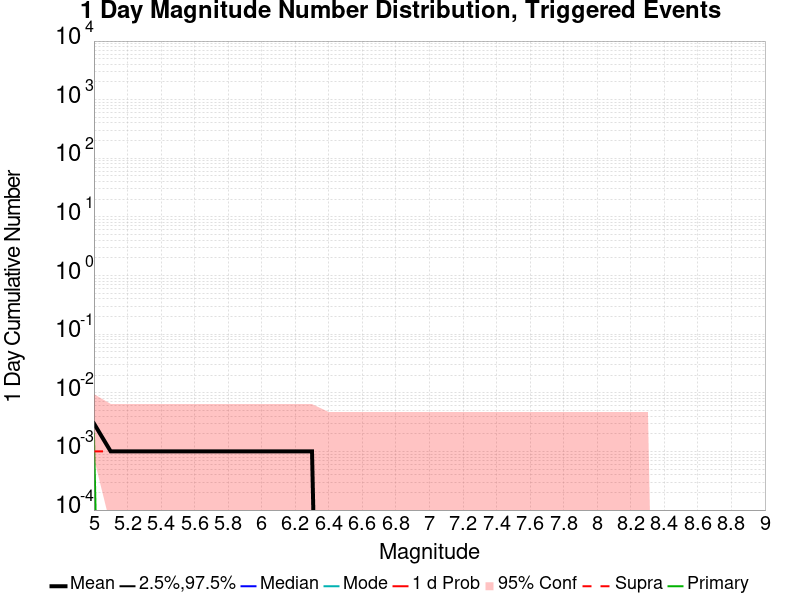
| Mag | Mean | 2.5 %ile | 97.5 %ile | Median | Mode | 1 d Probability | 1 d Prob 95% Conf | 1 d Supra-Seis Prob | Primary Aftershocks Mean |
|---|---|---|---|---|---|---|---|---|---|
| M≥5 | 3.00E-3 | 0.000 | 0.000 | 0.000 | 0.000 | 3.00E-3 (0.30%) | [0.08% 0.95%] | 1.00E-3 (0.10%) | 2.00E-3 |
| M≥5.1 | 1.00E-3 | 0.000 | 0.000 | 0.000 | 0.000 | 1.00E-3 (0.10%) | [0.01% 0.65%] | 1.00E-3 (0.10%) | 0.000 |
| M≥5.2 | 1.00E-3 | 0.000 | 0.000 | 0.000 | 0.000 | 1.00E-3 (0.10%) | [0.01% 0.65%] | 1.00E-3 (0.10%) | 0.000 |
| M≥5.3 | 1.00E-3 | 0.000 | 0.000 | 0.000 | 0.000 | 1.00E-3 (0.10%) | [0.01% 0.65%] | 1.00E-3 (0.10%) | 0.000 |
| M≥5.4 | 1.00E-3 | 0.000 | 0.000 | 0.000 | 0.000 | 1.00E-3 (0.10%) | [0.01% 0.65%] | 1.00E-3 (0.10%) | 0.000 |
| M≥5.5 | 1.00E-3 | 0.000 | 0.000 | 0.000 | 0.000 | 1.00E-3 (0.10%) | [0.01% 0.65%] | 1.00E-3 (0.10%) | 0.000 |
| M≥5.6 | 1.00E-3 | 0.000 | 0.000 | 0.000 | 0.000 | 1.00E-3 (0.10%) | [0.01% 0.65%] | 1.00E-3 (0.10%) | 0.000 |
| M≥5.7 | 1.00E-3 | 0.000 | 0.000 | 0.000 | 0.000 | 1.00E-3 (0.10%) | [0.01% 0.65%] | 1.00E-3 (0.10%) | 0.000 |
| M≥5.8 | 1.00E-3 | 0.000 | 0.000 | 0.000 | 0.000 | 1.00E-3 (0.10%) | [0.01% 0.65%] | 1.00E-3 (0.10%) | 0.000 |
| M≥5.9 | 1.00E-3 | 0.000 | 0.000 | 0.000 | 0.000 | 1.00E-3 (0.10%) | [0.01% 0.65%] | 1.00E-3 (0.10%) | 0.000 |
| M≥6 | 1.00E-3 | 0.000 | 0.000 | 0.000 | 0.000 | 1.00E-3 (0.10%) | [0.01% 0.65%] | 1.00E-3 (0.10%) | 0.000 |
| M≥6.1 | 1.00E-3 | 0.000 | 0.000 | 0.000 | 0.000 | 1.00E-3 (0.10%) | [0.01% 0.65%] | 1.00E-3 (0.10%) | 0.000 |
| M≥6.2 | 1.00E-3 | 0.000 | 0.000 | 0.000 | 0.000 | 1.00E-3 (0.10%) | [0.01% 0.65%] | 1.00E-3 (0.10%) | 0.000 |
| M≥6.3 | 1.00E-3 | 0.000 | 0.000 | 0.000 | 0.000 | 1.00E-3 (0.10%) | [0.01% 0.65%] | 1.00E-3 (0.10%) | 0.000 |
| M≥6.4 | 0.000 | 0.000 | 0.000 | 0.000 | 0.000 | 0.000 (0.00%) | [0.00% 0.48%] | 0.000 (0.00%) | 0.000 |
| M≥6.5 | 0.000 | 0.000 | 0.000 | 0.000 | 0.000 | 0.000 (0.00%) | [0.00% 0.48%] | 0.000 (0.00%) | 0.000 |
| M≥6.6 | 0.000 | 0.000 | 0.000 | 0.000 | 0.000 | 0.000 (0.00%) | [0.00% 0.48%] | 0.000 (0.00%) | 0.000 |
| M≥6.7 | 0.000 | 0.000 | 0.000 | 0.000 | 0.000 | 0.000 (0.00%) | [0.00% 0.48%] | 0.000 (0.00%) | 0.000 |
| M≥6.8 | 0.000 | 0.000 | 0.000 | 0.000 | 0.000 | 0.000 (0.00%) | [0.00% 0.48%] | 0.000 (0.00%) | 0.000 |
| M≥6.9 | 0.000 | 0.000 | 0.000 | 0.000 | 0.000 | 0.000 (0.00%) | [0.00% 0.48%] | 0.000 (0.00%) | 0.000 |
| M≥7 | 0.000 | 0.000 | 0.000 | 0.000 | 0.000 | 0.000 (0.00%) | [0.00% 0.48%] | 0.000 (0.00%) | 0.000 |
| M≥7.1 | 0.000 | 0.000 | 0.000 | 0.000 | 0.000 | 0.000 (0.00%) | [0.00% 0.48%] | 0.000 (0.00%) | 0.000 |
| M≥7.2 | 0.000 | 0.000 | 0.000 | 0.000 | 0.000 | 0.000 (0.00%) | [0.00% 0.48%] | 0.000 (0.00%) | 0.000 |
| M≥7.3 | 0.000 | 0.000 | 0.000 | 0.000 | 0.000 | 0.000 (0.00%) | [0.00% 0.48%] | 0.000 (0.00%) | 0.000 |
| M≥7.4 | 0.000 | 0.000 | 0.000 | 0.000 | 0.000 | 0.000 (0.00%) | [0.00% 0.48%] | 0.000 (0.00%) | 0.000 |
| M≥7.5 | 0.000 | 0.000 | 0.000 | 0.000 | 0.000 | 0.000 (0.00%) | [0.00% 0.48%] | 0.000 (0.00%) | 0.000 |
| M≥7.6 | 0.000 | 0.000 | 0.000 | 0.000 | 0.000 | 0.000 (0.00%) | [0.00% 0.48%] | 0.000 (0.00%) | 0.000 |
| M≥7.7 | 0.000 | 0.000 | 0.000 | 0.000 | 0.000 | 0.000 (0.00%) | [0.00% 0.48%] | 0.000 (0.00%) | 0.000 |
| M≥7.8 | 0.000 | 0.000 | 0.000 | 0.000 | 0.000 | 0.000 (0.00%) | [0.00% 0.48%] | 0.000 (0.00%) | 0.000 |
| M≥7.9 | 0.000 | 0.000 | 0.000 | 0.000 | 0.000 | 0.000 (0.00%) | [0.00% 0.48%] | 0.000 (0.00%) | 0.000 |
| M≥8 | 0.000 | 0.000 | 0.000 | 0.000 | 0.000 | 0.000 (0.00%) | [0.00% 0.48%] | 0.000 (0.00%) | 0.000 |
| M≥8.1 | 0.000 | 0.000 | 0.000 | 0.000 | 0.000 | 0.000 (0.00%) | [0.00% 0.48%] | 0.000 (0.00%) | 0.000 |
| M≥8.2 | 0.000 | 0.000 | 0.000 | 0.000 | 0.000 | 0.000 (0.00%) | [0.00% 0.48%] | 0.000 (0.00%) | 0.000 |
| M≥8.3 | 0.000 | 0.000 | 0.000 | 0.000 | 0.000 | 0.000 (0.00%) | [0.00% 0.48%] | 0.000 (0.00%) | 0.000 |
| M≥8.4 | 0.000 | 0.000 | 0.000 | 0.000 | 0.000 | 0.000 (0.00%) | [0.00% 0.48%] | 0.000 (0.00%) | 0.000 |
| M≥8.5 | 0.000 | 0.000 | 0.000 | 0.000 | 0.000 | 0.000 (0.00%) | [0.00% 0.48%] | 0.000 (0.00%) | 0.000 |
| M≥8.6 | 0.000 | 0.000 | 0.000 | 0.000 | 0.000 | 0.000 (0.00%) | [0.00% 0.48%] | 0.000 (0.00%) | 0.000 |
| M≥8.7 | 0.000 | 0.000 | 0.000 | 0.000 | 0.000 | 0.000 (0.00%) | [0.00% 0.48%] | 0.000 (0.00%) | 0.000 |
| M≥8.8 | 0.000 | 0.000 | 0.000 | 0.000 | 0.000 | 0.000 (0.00%) | [0.00% 0.48%] | 0.000 (0.00%) | 0.000 |
| M≥8.9 | 0.000 | 0.000 | 0.000 | 0.000 | 0.000 | 0.000 (0.00%) | [0.00% 0.48%] | 0.000 (0.00%) | 0.000 |
| M≥9 | 0.000 | 0.000 | 0.000 | 0.000 | 0.000 | 0.000 (0.00%) | [0.00% 0.48%] | 0.000 (0.00%) | 0.000 |
Note: This section includes both spontaneous and triggered events
Legend
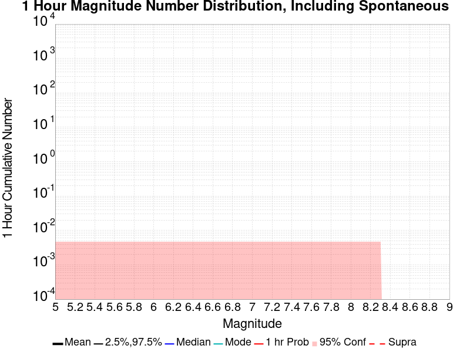
| Mag | Mean | 2.5 %ile | 97.5 %ile | Median | Mode | 1 hr Probability | 1 hr Prob 95% Conf | 1 hr Supra-Seis Prob |
|---|---|---|---|---|---|---|---|---|
| M≥5 | 0.000 | 0.000 | 0.000 | 0.000 | 0.000 | 0.000 (0.00%) | [0.00% 0.48%] | 0.000 (0.00%) |
| M≥5.1 | 0.000 | 0.000 | 0.000 | 0.000 | 0.000 | 0.000 (0.00%) | [0.00% 0.48%] | 0.000 (0.00%) |
| M≥5.2 | 0.000 | 0.000 | 0.000 | 0.000 | 0.000 | 0.000 (0.00%) | [0.00% 0.48%] | 0.000 (0.00%) |
| M≥5.3 | 0.000 | 0.000 | 0.000 | 0.000 | 0.000 | 0.000 (0.00%) | [0.00% 0.48%] | 0.000 (0.00%) |
| M≥5.4 | 0.000 | 0.000 | 0.000 | 0.000 | 0.000 | 0.000 (0.00%) | [0.00% 0.48%] | 0.000 (0.00%) |
| M≥5.5 | 0.000 | 0.000 | 0.000 | 0.000 | 0.000 | 0.000 (0.00%) | [0.00% 0.48%] | 0.000 (0.00%) |
| M≥5.6 | 0.000 | 0.000 | 0.000 | 0.000 | 0.000 | 0.000 (0.00%) | [0.00% 0.48%] | 0.000 (0.00%) |
| M≥5.7 | 0.000 | 0.000 | 0.000 | 0.000 | 0.000 | 0.000 (0.00%) | [0.00% 0.48%] | 0.000 (0.00%) |
| M≥5.8 | 0.000 | 0.000 | 0.000 | 0.000 | 0.000 | 0.000 (0.00%) | [0.00% 0.48%] | 0.000 (0.00%) |
| M≥5.9 | 0.000 | 0.000 | 0.000 | 0.000 | 0.000 | 0.000 (0.00%) | [0.00% 0.48%] | 0.000 (0.00%) |
| M≥6 | 0.000 | 0.000 | 0.000 | 0.000 | 0.000 | 0.000 (0.00%) | [0.00% 0.48%] | 0.000 (0.00%) |
| M≥6.1 | 0.000 | 0.000 | 0.000 | 0.000 | 0.000 | 0.000 (0.00%) | [0.00% 0.48%] | 0.000 (0.00%) |
| M≥6.2 | 0.000 | 0.000 | 0.000 | 0.000 | 0.000 | 0.000 (0.00%) | [0.00% 0.48%] | 0.000 (0.00%) |
| M≥6.3 | 0.000 | 0.000 | 0.000 | 0.000 | 0.000 | 0.000 (0.00%) | [0.00% 0.48%] | 0.000 (0.00%) |
| M≥6.4 | 0.000 | 0.000 | 0.000 | 0.000 | 0.000 | 0.000 (0.00%) | [0.00% 0.48%] | 0.000 (0.00%) |
| M≥6.5 | 0.000 | 0.000 | 0.000 | 0.000 | 0.000 | 0.000 (0.00%) | [0.00% 0.48%] | 0.000 (0.00%) |
| M≥6.6 | 0.000 | 0.000 | 0.000 | 0.000 | 0.000 | 0.000 (0.00%) | [0.00% 0.48%] | 0.000 (0.00%) |
| M≥6.7 | 0.000 | 0.000 | 0.000 | 0.000 | 0.000 | 0.000 (0.00%) | [0.00% 0.48%] | 0.000 (0.00%) |
| M≥6.8 | 0.000 | 0.000 | 0.000 | 0.000 | 0.000 | 0.000 (0.00%) | [0.00% 0.48%] | 0.000 (0.00%) |
| M≥6.9 | 0.000 | 0.000 | 0.000 | 0.000 | 0.000 | 0.000 (0.00%) | [0.00% 0.48%] | 0.000 (0.00%) |
| M≥7 | 0.000 | 0.000 | 0.000 | 0.000 | 0.000 | 0.000 (0.00%) | [0.00% 0.48%] | 0.000 (0.00%) |
| M≥7.1 | 0.000 | 0.000 | 0.000 | 0.000 | 0.000 | 0.000 (0.00%) | [0.00% 0.48%] | 0.000 (0.00%) |
| M≥7.2 | 0.000 | 0.000 | 0.000 | 0.000 | 0.000 | 0.000 (0.00%) | [0.00% 0.48%] | 0.000 (0.00%) |
| M≥7.3 | 0.000 | 0.000 | 0.000 | 0.000 | 0.000 | 0.000 (0.00%) | [0.00% 0.48%] | 0.000 (0.00%) |
| M≥7.4 | 0.000 | 0.000 | 0.000 | 0.000 | 0.000 | 0.000 (0.00%) | [0.00% 0.48%] | 0.000 (0.00%) |
| M≥7.5 | 0.000 | 0.000 | 0.000 | 0.000 | 0.000 | 0.000 (0.00%) | [0.00% 0.48%] | 0.000 (0.00%) |
| M≥7.6 | 0.000 | 0.000 | 0.000 | 0.000 | 0.000 | 0.000 (0.00%) | [0.00% 0.48%] | 0.000 (0.00%) |
| M≥7.7 | 0.000 | 0.000 | 0.000 | 0.000 | 0.000 | 0.000 (0.00%) | [0.00% 0.48%] | 0.000 (0.00%) |
| M≥7.8 | 0.000 | 0.000 | 0.000 | 0.000 | 0.000 | 0.000 (0.00%) | [0.00% 0.48%] | 0.000 (0.00%) |
| M≥7.9 | 0.000 | 0.000 | 0.000 | 0.000 | 0.000 | 0.000 (0.00%) | [0.00% 0.48%] | 0.000 (0.00%) |
| M≥8 | 0.000 | 0.000 | 0.000 | 0.000 | 0.000 | 0.000 (0.00%) | [0.00% 0.48%] | 0.000 (0.00%) |
| M≥8.1 | 0.000 | 0.000 | 0.000 | 0.000 | 0.000 | 0.000 (0.00%) | [0.00% 0.48%] | 0.000 (0.00%) |
| M≥8.2 | 0.000 | 0.000 | 0.000 | 0.000 | 0.000 | 0.000 (0.00%) | [0.00% 0.48%] | 0.000 (0.00%) |
| M≥8.3 | 0.000 | 0.000 | 0.000 | 0.000 | 0.000 | 0.000 (0.00%) | [0.00% 0.48%] | 0.000 (0.00%) |
| M≥8.4 | 0.000 | 0.000 | 0.000 | 0.000 | 0.000 | 0.000 (0.00%) | [0.00% 0.48%] | 0.000 (0.00%) |
| M≥8.5 | 0.000 | 0.000 | 0.000 | 0.000 | 0.000 | 0.000 (0.00%) | [0.00% 0.48%] | 0.000 (0.00%) |
| M≥8.6 | 0.000 | 0.000 | 0.000 | 0.000 | 0.000 | 0.000 (0.00%) | [0.00% 0.48%] | 0.000 (0.00%) |
| M≥8.7 | 0.000 | 0.000 | 0.000 | 0.000 | 0.000 | 0.000 (0.00%) | [0.00% 0.48%] | 0.000 (0.00%) |
| M≥8.8 | 0.000 | 0.000 | 0.000 | 0.000 | 0.000 | 0.000 (0.00%) | [0.00% 0.48%] | 0.000 (0.00%) |
| M≥8.9 | 0.000 | 0.000 | 0.000 | 0.000 | 0.000 | 0.000 (0.00%) | [0.00% 0.48%] | 0.000 (0.00%) |
| M≥9 | 0.000 | 0.000 | 0.000 | 0.000 | 0.000 | 0.000 (0.00%) | [0.00% 0.48%] | 0.000 (0.00%) |
Note: This section only includes triggered events, spontaneous were calculated but filtered out here
Legend

| Mag | Mean | 2.5 %ile | 97.5 %ile | Median | Mode | 1 hr Probability | 1 hr Prob 95% Conf | 1 hr Supra-Seis Prob | Primary Aftershocks Mean |
|---|---|---|---|---|---|---|---|---|---|
| M≥5 | 0.000 | 0.000 | 0.000 | 0.000 | 0.000 | 0.000 (0.00%) | [0.00% 0.48%] | 0.000 (0.00%) | 0.000 |
| M≥5.1 | 0.000 | 0.000 | 0.000 | 0.000 | 0.000 | 0.000 (0.00%) | [0.00% 0.48%] | 0.000 (0.00%) | 0.000 |
| M≥5.2 | 0.000 | 0.000 | 0.000 | 0.000 | 0.000 | 0.000 (0.00%) | [0.00% 0.48%] | 0.000 (0.00%) | 0.000 |
| M≥5.3 | 0.000 | 0.000 | 0.000 | 0.000 | 0.000 | 0.000 (0.00%) | [0.00% 0.48%] | 0.000 (0.00%) | 0.000 |
| M≥5.4 | 0.000 | 0.000 | 0.000 | 0.000 | 0.000 | 0.000 (0.00%) | [0.00% 0.48%] | 0.000 (0.00%) | 0.000 |
| M≥5.5 | 0.000 | 0.000 | 0.000 | 0.000 | 0.000 | 0.000 (0.00%) | [0.00% 0.48%] | 0.000 (0.00%) | 0.000 |
| M≥5.6 | 0.000 | 0.000 | 0.000 | 0.000 | 0.000 | 0.000 (0.00%) | [0.00% 0.48%] | 0.000 (0.00%) | 0.000 |
| M≥5.7 | 0.000 | 0.000 | 0.000 | 0.000 | 0.000 | 0.000 (0.00%) | [0.00% 0.48%] | 0.000 (0.00%) | 0.000 |
| M≥5.8 | 0.000 | 0.000 | 0.000 | 0.000 | 0.000 | 0.000 (0.00%) | [0.00% 0.48%] | 0.000 (0.00%) | 0.000 |
| M≥5.9 | 0.000 | 0.000 | 0.000 | 0.000 | 0.000 | 0.000 (0.00%) | [0.00% 0.48%] | 0.000 (0.00%) | 0.000 |
| M≥6 | 0.000 | 0.000 | 0.000 | 0.000 | 0.000 | 0.000 (0.00%) | [0.00% 0.48%] | 0.000 (0.00%) | 0.000 |
| M≥6.1 | 0.000 | 0.000 | 0.000 | 0.000 | 0.000 | 0.000 (0.00%) | [0.00% 0.48%] | 0.000 (0.00%) | 0.000 |
| M≥6.2 | 0.000 | 0.000 | 0.000 | 0.000 | 0.000 | 0.000 (0.00%) | [0.00% 0.48%] | 0.000 (0.00%) | 0.000 |
| M≥6.3 | 0.000 | 0.000 | 0.000 | 0.000 | 0.000 | 0.000 (0.00%) | [0.00% 0.48%] | 0.000 (0.00%) | 0.000 |
| M≥6.4 | 0.000 | 0.000 | 0.000 | 0.000 | 0.000 | 0.000 (0.00%) | [0.00% 0.48%] | 0.000 (0.00%) | 0.000 |
| M≥6.5 | 0.000 | 0.000 | 0.000 | 0.000 | 0.000 | 0.000 (0.00%) | [0.00% 0.48%] | 0.000 (0.00%) | 0.000 |
| M≥6.6 | 0.000 | 0.000 | 0.000 | 0.000 | 0.000 | 0.000 (0.00%) | [0.00% 0.48%] | 0.000 (0.00%) | 0.000 |
| M≥6.7 | 0.000 | 0.000 | 0.000 | 0.000 | 0.000 | 0.000 (0.00%) | [0.00% 0.48%] | 0.000 (0.00%) | 0.000 |
| M≥6.8 | 0.000 | 0.000 | 0.000 | 0.000 | 0.000 | 0.000 (0.00%) | [0.00% 0.48%] | 0.000 (0.00%) | 0.000 |
| M≥6.9 | 0.000 | 0.000 | 0.000 | 0.000 | 0.000 | 0.000 (0.00%) | [0.00% 0.48%] | 0.000 (0.00%) | 0.000 |
| M≥7 | 0.000 | 0.000 | 0.000 | 0.000 | 0.000 | 0.000 (0.00%) | [0.00% 0.48%] | 0.000 (0.00%) | 0.000 |
| M≥7.1 | 0.000 | 0.000 | 0.000 | 0.000 | 0.000 | 0.000 (0.00%) | [0.00% 0.48%] | 0.000 (0.00%) | 0.000 |
| M≥7.2 | 0.000 | 0.000 | 0.000 | 0.000 | 0.000 | 0.000 (0.00%) | [0.00% 0.48%] | 0.000 (0.00%) | 0.000 |
| M≥7.3 | 0.000 | 0.000 | 0.000 | 0.000 | 0.000 | 0.000 (0.00%) | [0.00% 0.48%] | 0.000 (0.00%) | 0.000 |
| M≥7.4 | 0.000 | 0.000 | 0.000 | 0.000 | 0.000 | 0.000 (0.00%) | [0.00% 0.48%] | 0.000 (0.00%) | 0.000 |
| M≥7.5 | 0.000 | 0.000 | 0.000 | 0.000 | 0.000 | 0.000 (0.00%) | [0.00% 0.48%] | 0.000 (0.00%) | 0.000 |
| M≥7.6 | 0.000 | 0.000 | 0.000 | 0.000 | 0.000 | 0.000 (0.00%) | [0.00% 0.48%] | 0.000 (0.00%) | 0.000 |
| M≥7.7 | 0.000 | 0.000 | 0.000 | 0.000 | 0.000 | 0.000 (0.00%) | [0.00% 0.48%] | 0.000 (0.00%) | 0.000 |
| M≥7.8 | 0.000 | 0.000 | 0.000 | 0.000 | 0.000 | 0.000 (0.00%) | [0.00% 0.48%] | 0.000 (0.00%) | 0.000 |
| M≥7.9 | 0.000 | 0.000 | 0.000 | 0.000 | 0.000 | 0.000 (0.00%) | [0.00% 0.48%] | 0.000 (0.00%) | 0.000 |
| M≥8 | 0.000 | 0.000 | 0.000 | 0.000 | 0.000 | 0.000 (0.00%) | [0.00% 0.48%] | 0.000 (0.00%) | 0.000 |
| M≥8.1 | 0.000 | 0.000 | 0.000 | 0.000 | 0.000 | 0.000 (0.00%) | [0.00% 0.48%] | 0.000 (0.00%) | 0.000 |
| M≥8.2 | 0.000 | 0.000 | 0.000 | 0.000 | 0.000 | 0.000 (0.00%) | [0.00% 0.48%] | 0.000 (0.00%) | 0.000 |
| M≥8.3 | 0.000 | 0.000 | 0.000 | 0.000 | 0.000 | 0.000 (0.00%) | [0.00% 0.48%] | 0.000 (0.00%) | 0.000 |
| M≥8.4 | 0.000 | 0.000 | 0.000 | 0.000 | 0.000 | 0.000 (0.00%) | [0.00% 0.48%] | 0.000 (0.00%) | 0.000 |
| M≥8.5 | 0.000 | 0.000 | 0.000 | 0.000 | 0.000 | 0.000 (0.00%) | [0.00% 0.48%] | 0.000 (0.00%) | 0.000 |
| M≥8.6 | 0.000 | 0.000 | 0.000 | 0.000 | 0.000 | 0.000 (0.00%) | [0.00% 0.48%] | 0.000 (0.00%) | 0.000 |
| M≥8.7 | 0.000 | 0.000 | 0.000 | 0.000 | 0.000 | 0.000 (0.00%) | [0.00% 0.48%] | 0.000 (0.00%) | 0.000 |
| M≥8.8 | 0.000 | 0.000 | 0.000 | 0.000 | 0.000 | 0.000 (0.00%) | [0.00% 0.48%] | 0.000 (0.00%) | 0.000 |
| M≥8.9 | 0.000 | 0.000 | 0.000 | 0.000 | 0.000 | 0.000 (0.00%) | [0.00% 0.48%] | 0.000 (0.00%) | 0.000 |
| M≥9 | 0.000 | 0.000 | 0.000 | 0.000 | 0.000 | 0.000 (0.00%) | [0.00% 0.48%] | 0.000 (0.00%) | 0.000 |
These plots show how the probability of ruptures of various magnitudes within 100km of any scenario rupture changes over time

| Forecast Duration | UCERF3-ETAS [95% Conf] | UCERF3-ETAS Triggered Only | UCERF3-TD | UCERF3-ETAS/TD Gain | UCERF3-TI |
|---|---|---|---|---|---|
| 1 Hour | 9.99E-4 [9.99E-4 - 5.76E-3] | 0.000 | 9.99E-4 | 1 | 9.82E-4 |
| 1 Day | 0.027 [0.024 - 0.033] | 3.00E-3 | 0.024 | 1.12 | 0.023 |
| 1 Week | 0.177 [0.169 - 0.187] | 0.026 | 0.155 | 1.14 | 0.152 |
| 1 Month | 0.567 [0.558 - 0.578] | 0.112 | 0.513 | 1.11 | 0.507 |
| 1 Year | 1.000 [1.000 - 1.000] | 0.712 | 1.000 | 1 | 1.000 |
| 10 Years | 1.000 [1.000 - 1.000] | 1.000 | 1.000 | 1 | 1.000 |
| 30 Years | 1.000 [1.000 - 1.000] | 1.000 | 1.000 | 1 | 1.000 |
| 100 Years | 1.000 [1.000 - 1.000] | 1.000 | 1.000 | 1 | 1.000 |
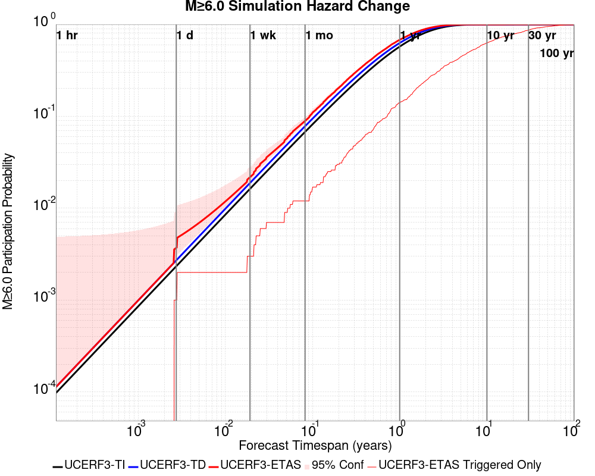
| Forecast Duration | UCERF3-ETAS [95% Conf] | UCERF3-ETAS Triggered Only | UCERF3-TD | UCERF3-ETAS/TD Gain | UCERF3-TI |
|---|---|---|---|---|---|
| 1 Hour | 1.13E-4 [1.13E-4 - 4.88E-3] | 0.000 | 1.13E-4 | 1 | 9.74E-5 |
| 1 Day | 3.70E-3 [2.76E-3 - 9.16E-3] | 1.00E-3 | 2.71E-3 | 1.37 | 2.33E-3 |
| 1 Week | 0.022 [0.020 - 0.028] | 3.00E-3 | 0.019 | 1.16 | 0.016 |
| 1 Month | 0.089 [0.084 - 0.098] | 0.012 | 0.078 | 1.14 | 0.068 |
| 1 Year | 0.681 [0.673 - 0.689] | 0.141 | 0.628 | 1.08 | 0.574 |
| 10 Years | 1.000 [1.000 - 1.000] | 0.629 | 1.000 | 1 | 1.000 |
| 30 Years | 1.000 [1.000 - 1.000] | 0.869 | 1.000 | 1 | 1.000 |
| 100 Years | 1.000 [1.000 - 1.000] | 0.992 | 1.000 | 1 | 1.000 |
| Forecast Duration | UCERF3-ETAS [95% Conf] | UCERF3-ETAS Triggered Only | UCERF3-TD | UCERF3-ETAS/TD Gain | UCERF3-TI |
|---|---|---|---|---|---|
| 1 Hour | 1.12E-5 [1.12E-5 - 4.78E-3] | 0.000 | 1.12E-5 | 1 | 9.08E-6 |
| 1 Day | 2.68E-4 [2.68E-4 - 5.04E-3] | 0.000 | 2.68E-4 | 1 | 2.18E-4 |
| 1 Week | 2.87E-3 [1.92E-3 - 8.33E-3] | 1.00E-3 | 1.87E-3 | 1.53 | 1.52E-3 |
| 1 Month | 9.98E-3 [8.34E-3 - 0.016] | 2.00E-3 | 8.00E-3 | 1.25 | 6.52E-3 |
| 1 Year | 0.102 [0.098 - 0.110] | 0.010 | 0.093 | 1.1 | 0.076 |
| 10 Years | 0.659 [0.652 - 0.666] | 0.091 | 0.625 | 1.05 | 0.549 |
| 30 Years | 0.957 [0.956 - 0.958] | 0.189 | 0.947 | 1.01 | 0.908 |
| 100 Years | 1.000 [1.000 - 1.000] | 0.380 | 1.000 | 1 | 1.000 |

| Forecast Duration | UCERF3-ETAS [95% Conf] | UCERF3-ETAS Triggered Only | UCERF3-TD | UCERF3-ETAS/TD Gain | UCERF3-TI |
|---|---|---|---|---|---|
| 1 Hour | 2.61E-7 [2.61E-7 - 4.77E-3] | 0.000 | 2.61E-7 | 1 | 2.20E-7 |
| 1 Day | 6.27E-6 [6.27E-6 - 4.78E-3] | 0.000 | 6.27E-6 | 1 | 5.27E-6 |
| 1 Week | 4.39E-5 [4.39E-5 - 4.81E-3] | 0.000 | 4.39E-5 | 1 | 3.69E-5 |
| 1 Month | 1.88E-4 [1.88E-4 - 4.96E-3] | 0.000 | 1.88E-4 | 1 | 1.58E-4 |
| 1 Year | 2.29E-3 [2.29E-3 - 7.05E-3] | 0.000 | 2.29E-3 | 1 | 1.92E-3 |
| 10 Years | 0.026 [0.024 - 0.032] | 2.00E-3 | 0.024 | 1.08 | 0.019 |
| 30 Years | 0.083 [0.080 - 0.090] | 5.00E-3 | 0.078 | 1.06 | 0.056 |
| 100 Years | 0.288 [0.282 - 0.296] | 0.022 | 0.272 | 1.06 | 0.175 |
| Min Mag | 1 yr Complete Catalog (including spontaneous) | 1 yr Triggered Ruptures (no spontaneous) | 500 yr Complete Catalog (including spontaneous) | 500 yr Triggered Ruptures (no spontaneous) | 500 yr Triggered Ruptures (primary aftershocks only) |
|---|---|---|---|---|---|
| All Supra. Seis. |  |  |  | ||
| M≥6.5 |  |  |  | ||
| M≥7 |  |  |  |  | |
| M≥7.5 |  |  | |||
| M≥8 |  |  |  |  |
First 10 of 313 with matching ruptures shown
| Parent Name | Total 500 Year Mean Count | Total 1 Day Prob | Total 1 Day 95% Conf | Total 1 Week Prob | Total 1 Week 95% Conf | Total 1 Month Prob | Total 1 Month 95% Conf | Total 1 Year Prob | Total 1 Year 95% Conf | Total 500 Year Prob | Total 500 Year 95% Conf | Triggered 500 Year Mean Count | Triggered 1 Day Prob | Triggered 1 Day 95% Conf | Triggered 1 Week Prob | Triggered 1 Week 95% Conf | Triggered 1 Month Prob | Triggered 1 Month 95% Conf | Triggered 1 Year Prob | Triggered 1 Year 95% Conf | Triggered 500 Year Prob | Triggered 500 Year 95% Conf | Triggered 500 Year Primary Mean Count |
|---|---|---|---|---|---|---|---|---|---|---|---|---|---|---|---|---|---|---|---|---|---|---|---|
| San Andreas (Parkfield) | 21.293 | 0.000 (0.00%) | [0.00% 0.48%] | 1.00E-3 (0.10%) | [0.01% 0.65%] | 2.00E-3 (0.20%) | [0.03% 0.80%] | 0.010 (1.00%) | [0.51% 1.90%] | 1.000 (100.00%) | [99.52% 100.00%] | 1.942 | 0.000 (0.00%) | [0.00% 0.48%] | 0.000 (0.00%) | [0.00% 0.48%] | 0.000 (0.00%) | [0.00% 0.48%] | 3.00E-3 (0.30%) | [0.08% 0.95%] | 0.702 (70.20%) | [67.24% 73.00%] | 0.82 |
| San Andreas (Creeping Section) 2011 CFM | 14.264 | 0.000 (0.00%) | [0.00% 0.48%] | 0.000 (0.00%) | [0.00% 0.48%] | 2.00E-3 (0.20%) | [0.03% 0.80%] | 0.040 (4.00%) | [2.91% 5.46%] | 1.000 (100.00%) | [99.52% 100.00%] | 0.525 | 0.000 (0.00%) | [0.00% 0.48%] | 0.000 (0.00%) | [0.00% 0.48%] | 1.00E-3 (0.10%) | [0.01% 0.65%] | 5.00E-3 (0.50%) | [0.18% 1.23%] | 0.357 (35.70%) | [32.74% 38.77%] | 0.205 |
| San Andreas (Mojave S) | 9.424 | 1.00E-3 (0.10%) | [0.01% 0.65%] | 1.00E-3 (0.10%) | [0.01% 0.65%] | 2.00E-3 (0.20%) | [0.03% 0.80%] | 0.025 (2.50%) | [1.66% 3.72%] | 1.000 (100.00%) | [99.52% 100.00%] | 0.917 | 1.00E-3 (0.10%) | [0.01% 0.65%] | 1.00E-3 (0.10%) | [0.01% 0.65%] | 2.00E-3 (0.20%) | [0.03% 0.80%] | 7.00E-3 (0.70%) | [0.31% 1.50%] | 0.384 (38.40%) | [35.39% 41.50%] | 0.345 |
| Mendocino | 9.162 | 1.00E-3 (0.10%) | [0.01% 0.65%] | 1.00E-3 (0.10%) | [0.01% 0.65%] | 3.00E-3 (0.30%) | [0.08% 0.95%] | 0.025 (2.50%) | [1.66% 3.72%] | 1.000 (100.00%) | [99.52% 100.00%] | 0.487 | 0.000 (0.00%) | [0.00% 0.48%] | 0.000 (0.00%) | [0.00% 0.48%] | 0.000 (0.00%) | [0.00% 0.48%] | 7.00E-3 (0.70%) | [0.31% 1.50%] | 0.335 (33.50%) | [30.59% 36.53%] | 0.237 |
| Cerro Prieto | 6.787 | 0.000 (0.00%) | [0.00% 0.48%] | 0.000 (0.00%) | [0.00% 0.48%] | 0.000 (0.00%) | [0.00% 0.48%] | 0.024 (2.40%) | [1.58% 3.61%] | 1.000 (100.00%) | [99.52% 100.00%] | 0.336 | 0.000 (0.00%) | [0.00% 0.48%] | 0.000 (0.00%) | [0.00% 0.48%] | 0.000 (0.00%) | [0.00% 0.48%] | 0.011 (1.10%) | [0.58% 2.02%] | 0.221 (22.10%) | [19.59% 24.83%] | 0.135 |
| Imperial | 5.867 | 0.000 (0.00%) | [0.00% 0.48%] | 0.000 (0.00%) | [0.00% 0.48%] | 2.00E-3 (0.20%) | [0.03% 0.80%] | 0.015 (1.50%) | [0.87% 2.52%] | 1.000 (100.00%) | [99.52% 100.00%] | 0.355 | 0.000 (0.00%) | [0.00% 0.48%] | 0.000 (0.00%) | [0.00% 0.48%] | 1.00E-3 (0.10%) | [0.01% 0.65%] | 2.00E-3 (0.20%) | [0.03% 0.80%] | 0.264 (26.40%) | [23.71% 29.27%] | 0.172 |
| Brawley (Seismic Zone) alt 1 | 5.466 | 0.000 (0.00%) | [0.00% 0.48%] | 0.000 (0.00%) | [0.00% 0.48%] | 1.00E-3 (0.10%) | [0.01% 0.65%] | 0.018 (1.80%) | [1.10% 2.89%] | 1.000 (100.00%) | [99.52% 100.00%] | 0.265 | 0.000 (0.00%) | [0.00% 0.48%] | 0.000 (0.00%) | [0.00% 0.48%] | 0.000 (0.00%) | [0.00% 0.48%] | 2.00E-3 (0.20%) | [0.03% 0.80%] | 0.212 (21.20%) | [18.73% 23.89%] | 0.123 |
| Hayward (So) 2011 CFM | 4.78 | 1.00E-3 (0.10%) | [0.01% 0.65%] | 1.00E-3 (0.10%) | [0.01% 0.65%] | 1.00E-3 (0.10%) | [0.01% 0.65%] | 0.010 (1.00%) | [0.51% 1.90%] | 1.000 (100.00%) | [99.52% 100.00%] | 0.329 | 0.000 (0.00%) | [0.00% 0.48%] | 0.000 (0.00%) | [0.00% 0.48%] | 0.000 (0.00%) | [0.00% 0.48%] | 3.00E-3 (0.30%) | [0.08% 0.95%] | 0.221 (22.10%) | [19.59% 24.83%] | 0.146 |
| San Andreas (Offshore) 2011 CFM | 4.215 | 0.000 (0.00%) | [0.00% 0.48%] | 0.000 (0.00%) | [0.00% 0.48%] | 0.000 (0.00%) | [0.00% 0.48%] | 3.00E-3 (0.30%) | [0.08% 0.95%] | 0.998 (99.80%) | [99.20% 99.97%] | 0.425 | 0.000 (0.00%) | [0.00% 0.48%] | 0.000 (0.00%) | [0.00% 0.48%] | 0.000 (0.00%) | [0.00% 0.48%] | 0.000 (0.00%) | [0.00% 0.48%] | 0.278 (27.80%) | [25.06% 30.71%] | 0.189 |
| Elsinore (Glen Ivy) rev | 3.932 | 0.000 (0.00%) | [0.00% 0.48%] | 1.00E-3 (0.10%) | [0.01% 0.65%] | 1.00E-3 (0.10%) | [0.01% 0.65%] | 0.015 (1.50%) | [0.87% 2.52%] | 0.990 (99.00%) | [98.10% 99.49%] | 0.121 | 0.000 (0.00%) | [0.00% 0.48%] | 0.000 (0.00%) | [0.00% 0.48%] | 0.000 (0.00%) | [0.00% 0.48%] | 4.00E-3 (0.40%) | [0.13% 1.10%] | 0.079 (7.90%) | [6.34% 9.79%] | 0.047 |
First 10 of 306 with matching ruptures shown
| Parent Name | Total 500 Year Mean Count | Total 1 Day Prob | Total 1 Day 95% Conf | Total 1 Week Prob | Total 1 Week 95% Conf | Total 1 Month Prob | Total 1 Month 95% Conf | Total 1 Year Prob | Total 1 Year 95% Conf | Total 500 Year Prob | Total 500 Year 95% Conf | Triggered 500 Year Mean Count | Triggered 1 Day Prob | Triggered 1 Day 95% Conf | Triggered 1 Week Prob | Triggered 1 Week 95% Conf | Triggered 1 Month Prob | Triggered 1 Month 95% Conf | Triggered 1 Year Prob | Triggered 1 Year 95% Conf | Triggered 500 Year Prob | Triggered 500 Year 95% Conf | Triggered 500 Year Primary Mean Count |
|---|---|---|---|---|---|---|---|---|---|---|---|---|---|---|---|---|---|---|---|---|---|---|---|
| Cerro Prieto | 5.822 | 0.000 (0.00%) | [0.00% 0.48%] | 0.000 (0.00%) | [0.00% 0.48%] | 0.000 (0.00%) | [0.00% 0.48%] | 0.021 (2.10%) | [1.34% 3.25%] | 1.000 (100.00%) | [99.52% 100.00%] | 0.289 | 0.000 (0.00%) | [0.00% 0.48%] | 0.000 (0.00%) | [0.00% 0.48%] | 0.000 (0.00%) | [0.00% 0.48%] | 9.00E-3 (0.90%) | [0.44% 1.77%] | 0.196 (19.60%) | [17.21% 22.23%] | 0.113 |
| San Andreas (Creeping Section) 2011 CFM | 5.457 | 0.000 (0.00%) | [0.00% 0.48%] | 0.000 (0.00%) | [0.00% 0.48%] | 1.00E-3 (0.10%) | [0.01% 0.65%] | 0.012 (1.20%) | [0.65% 2.15%] | 0.999 (99.90%) | [99.35% 99.99%] | 0.235 | 0.000 (0.00%) | [0.00% 0.48%] | 0.000 (0.00%) | [0.00% 0.48%] | 1.00E-3 (0.10%) | [0.01% 0.65%] | 2.00E-3 (0.20%) | [0.03% 0.80%] | 0.197 (19.70%) | [17.31% 22.33%] | 0.1 |
| Mendocino | 4.537 | 0.000 (0.00%) | [0.00% 0.48%] | 0.000 (0.00%) | [0.00% 0.48%] | 1.00E-3 (0.10%) | [0.01% 0.65%] | 0.013 (1.30%) | [0.72% 2.27%] | 1.000 (100.00%) | [99.52% 100.00%] | 0.323 | 0.000 (0.00%) | [0.00% 0.48%] | 0.000 (0.00%) | [0.00% 0.48%] | 0.000 (0.00%) | [0.00% 0.48%] | 3.00E-3 (0.30%) | [0.08% 0.95%] | 0.250 (25.00%) | [22.37% 27.83%] | 0.153 |
| Imperial | 4.059 | 0.000 (0.00%) | [0.00% 0.48%] | 0.000 (0.00%) | [0.00% 0.48%] | 0.000 (0.00%) | [0.00% 0.48%] | 8.00E-3 (0.80%) | [0.37% 1.64%] | 1.000 (100.00%) | [99.52% 100.00%] | 0.206 | 0.000 (0.00%) | [0.00% 0.48%] | 0.000 (0.00%) | [0.00% 0.48%] | 0.000 (0.00%) | [0.00% 0.48%] | 1.00E-3 (0.10%) | [0.01% 0.65%] | 0.168 (16.80%) | [14.56% 19.30%] | 0.094 |
| Hayward (So) 2011 CFM | 4.046 | 1.00E-3 (0.10%) | [0.01% 0.65%] | 1.00E-3 (0.10%) | [0.01% 0.65%] | 1.00E-3 (0.10%) | [0.01% 0.65%] | 8.00E-3 (0.80%) | [0.37% 1.64%] | 0.999 (99.90%) | [99.35% 99.99%] | 0.258 | 0.000 (0.00%) | [0.00% 0.48%] | 0.000 (0.00%) | [0.00% 0.48%] | 0.000 (0.00%) | [0.00% 0.48%] | 2.00E-3 (0.20%) | [0.03% 0.80%] | 0.192 (19.20%) | [16.83% 21.81%] | 0.115 |
| Brawley (Seismic Zone) alt 1 | 3.892 | 0.000 (0.00%) | [0.00% 0.48%] | 0.000 (0.00%) | [0.00% 0.48%] | 0.000 (0.00%) | [0.00% 0.48%] | 7.00E-3 (0.70%) | [0.31% 1.50%] | 0.999 (99.90%) | [99.35% 99.99%] | 0.186 | 0.000 (0.00%) | [0.00% 0.48%] | 0.000 (0.00%) | [0.00% 0.48%] | 0.000 (0.00%) | [0.00% 0.48%] | 1.00E-3 (0.10%) | [0.01% 0.65%] | 0.153 (15.30%) | [13.16% 17.72%] | 0.085 |
| San Andreas (Mojave S) | 3.547 | 0.000 (0.00%) | [0.00% 0.48%] | 0.000 (0.00%) | [0.00% 0.48%] | 0.000 (0.00%) | [0.00% 0.48%] | 8.00E-3 (0.80%) | [0.37% 1.64%] | 0.999 (99.90%) | [99.35% 99.99%] | 0.266 | 0.000 (0.00%) | [0.00% 0.48%] | 0.000 (0.00%) | [0.00% 0.48%] | 0.000 (0.00%) | [0.00% 0.48%] | 1.00E-3 (0.10%) | [0.01% 0.65%] | 0.195 (19.50%) | [17.12% 22.12%] | 0.121 |
| San Andreas (Santa Cruz Mts) 2011 CFM | 3.432 | 0.000 (0.00%) | [0.00% 0.48%] | 0.000 (0.00%) | [0.00% 0.48%] | 0.000 (0.00%) | [0.00% 0.48%] | 1.00E-3 (0.10%) | [0.01% 0.65%] | 0.998 (99.80%) | [99.20% 99.97%] | 0.215 | 0.000 (0.00%) | [0.00% 0.48%] | 0.000 (0.00%) | [0.00% 0.48%] | 0.000 (0.00%) | [0.00% 0.48%] | 0.000 (0.00%) | [0.00% 0.48%] | 0.180 (18.00%) | [15.70% 20.55%] | 0.097 |
| San Andreas (San Bernardino N) | 3.338 | 0.000 (0.00%) | [0.00% 0.48%] | 0.000 (0.00%) | [0.00% 0.48%] | 0.000 (0.00%) | [0.00% 0.48%] | 6.00E-3 (0.60%) | [0.24% 1.37%] | 0.997 (99.70%) | [99.05% 99.92%] | 0.189 | 0.000 (0.00%) | [0.00% 0.48%] | 0.000 (0.00%) | [0.00% 0.48%] | 0.000 (0.00%) | [0.00% 0.48%] | 1.00E-3 (0.10%) | [0.01% 0.65%] | 0.154 (15.40%) | [13.25% 17.82%] | 0.068 |
| San Andreas (Offshore) 2011 CFM | 3.063 | 0.000 (0.00%) | [0.00% 0.48%] | 0.000 (0.00%) | [0.00% 0.48%] | 0.000 (0.00%) | [0.00% 0.48%] | 3.00E-3 (0.30%) | [0.08% 0.95%] | 0.997 (99.70%) | [99.05% 99.92%] | 0.3 | 0.000 (0.00%) | [0.00% 0.48%] | 0.000 (0.00%) | [0.00% 0.48%] | 0.000 (0.00%) | [0.00% 0.48%] | 0.000 (0.00%) | [0.00% 0.48%] | 0.227 (22.70%) | [20.16% 25.45%] | 0.132 |
First 10 of 273 with matching ruptures shown
| Parent Name | Total 500 Year Mean Count | Total 1 Day Prob | Total 1 Day 95% Conf | Total 1 Week Prob | Total 1 Week 95% Conf | Total 1 Month Prob | Total 1 Month 95% Conf | Total 1 Year Prob | Total 1 Year 95% Conf | Total 500 Year Prob | Total 500 Year 95% Conf | Triggered 500 Year Mean Count | Triggered 1 Day Prob | Triggered 1 Day 95% Conf | Triggered 1 Week Prob | Triggered 1 Week 95% Conf | Triggered 1 Month Prob | Triggered 1 Month 95% Conf | Triggered 1 Year Prob | Triggered 1 Year 95% Conf | Triggered 500 Year Prob | Triggered 500 Year 95% Conf | Triggered 500 Year Primary Mean Count |
|---|---|---|---|---|---|---|---|---|---|---|---|---|---|---|---|---|---|---|---|---|---|---|---|
| San Andreas (Creeping Section) 2011 CFM | 3.442 | 0.000 (0.00%) | [0.00% 0.48%] | 0.000 (0.00%) | [0.00% 0.48%] | 0.000 (0.00%) | [0.00% 0.48%] | 3.00E-3 (0.30%) | [0.08% 0.95%] | 0.989 (98.90%) | [97.98% 99.42%] | 0.178 | 0.000 (0.00%) | [0.00% 0.48%] | 0.000 (0.00%) | [0.00% 0.48%] | 0.000 (0.00%) | [0.00% 0.48%] | 0.000 (0.00%) | [0.00% 0.48%] | 0.155 (15.50%) | [13.34% 17.93%] | 0.075 |
| San Andreas (Carrizo) rev | 2.87 | 0.000 (0.00%) | [0.00% 0.48%] | 1.00E-3 (0.10%) | [0.01% 0.65%] | 1.00E-3 (0.10%) | [0.01% 0.65%] | 5.00E-3 (0.50%) | [0.18% 1.23%] | 1.000 (100.00%) | [99.52% 100.00%] | 0.232 | 0.000 (0.00%) | [0.00% 0.48%] | 1.00E-3 (0.10%) | [0.01% 0.65%] | 1.00E-3 (0.10%) | [0.01% 0.65%] | 1.00E-3 (0.10%) | [0.01% 0.65%] | 0.185 (18.50%) | [16.17% 21.08%] | 0.107 |
| San Andreas (Cholame) rev | 2.861 | 0.000 (0.00%) | [0.00% 0.48%] | 1.00E-3 (0.10%) | [0.01% 0.65%] | 1.00E-3 (0.10%) | [0.01% 0.65%] | 4.00E-3 (0.40%) | [0.13% 1.10%] | 0.999 (99.90%) | [99.35% 99.99%] | 0.231 | 0.000 (0.00%) | [0.00% 0.48%] | 1.00E-3 (0.10%) | [0.01% 0.65%] | 1.00E-3 (0.10%) | [0.01% 0.65%] | 1.00E-3 (0.10%) | [0.01% 0.65%] | 0.184 (18.40%) | [16.07% 20.97%] | 0.101 |
| San Andreas (Santa Cruz Mts) 2011 CFM | 2.687 | 0.000 (0.00%) | [0.00% 0.48%] | 0.000 (0.00%) | [0.00% 0.48%] | 0.000 (0.00%) | [0.00% 0.48%] | 1.00E-3 (0.10%) | [0.01% 0.65%] | 0.991 (99.10%) | [98.23% 99.56%] | 0.146 | 0.000 (0.00%) | [0.00% 0.48%] | 0.000 (0.00%) | [0.00% 0.48%] | 0.000 (0.00%) | [0.00% 0.48%] | 0.000 (0.00%) | [0.00% 0.48%] | 0.125 (12.50%) | [10.55% 14.75%] | 0.059 |
| San Andreas (Mojave S) | 2.653 | 0.000 (0.00%) | [0.00% 0.48%] | 0.000 (0.00%) | [0.00% 0.48%] | 0.000 (0.00%) | [0.00% 0.48%] | 5.00E-3 (0.50%) | [0.18% 1.23%] | 0.998 (99.80%) | [99.20% 99.97%] | 0.182 | 0.000 (0.00%) | [0.00% 0.48%] | 0.000 (0.00%) | [0.00% 0.48%] | 0.000 (0.00%) | [0.00% 0.48%] | 0.000 (0.00%) | [0.00% 0.48%] | 0.154 (15.40%) | [13.25% 17.82%] | 0.087 |
| San Andreas (Mojave N) | 2.476 | 0.000 (0.00%) | [0.00% 0.48%] | 0.000 (0.00%) | [0.00% 0.48%] | 0.000 (0.00%) | [0.00% 0.48%] | 3.00E-3 (0.30%) | [0.08% 0.95%] | 1.000 (100.00%) | [99.52% 100.00%] | 0.18 | 0.000 (0.00%) | [0.00% 0.48%] | 0.000 (0.00%) | [0.00% 0.48%] | 0.000 (0.00%) | [0.00% 0.48%] | 0.000 (0.00%) | [0.00% 0.48%] | 0.148 (14.80%) | [12.69% 17.19%] | 0.086 |
| San Andreas (Big Bend) | 2.331 | 0.000 (0.00%) | [0.00% 0.48%] | 0.000 (0.00%) | [0.00% 0.48%] | 0.000 (0.00%) | [0.00% 0.48%] | 3.00E-3 (0.30%) | [0.08% 0.95%] | 0.999 (99.90%) | [99.35% 99.99%] | 0.176 | 0.000 (0.00%) | [0.00% 0.48%] | 0.000 (0.00%) | [0.00% 0.48%] | 0.000 (0.00%) | [0.00% 0.48%] | 0.000 (0.00%) | [0.00% 0.48%] | 0.147 (14.70%) | [12.59% 17.08%] | 0.084 |
| San Andreas (North Coast) 2011 CFM | 2.308 | 0.000 (0.00%) | [0.00% 0.48%] | 0.000 (0.00%) | [0.00% 0.48%] | 0.000 (0.00%) | [0.00% 0.48%] | 0.000 (0.00%) | [0.00% 0.48%] | 0.996 (99.60%) | [98.90% 99.87%] | 0.175 | 0.000 (0.00%) | [0.00% 0.48%] | 0.000 (0.00%) | [0.00% 0.48%] | 0.000 (0.00%) | [0.00% 0.48%] | 0.000 (0.00%) | [0.00% 0.48%] | 0.142 (14.20%) | [12.13% 16.55%] | 0.084 |
| San Andreas (San Bernardino N) | 2.278 | 0.000 (0.00%) | [0.00% 0.48%] | 0.000 (0.00%) | [0.00% 0.48%] | 0.000 (0.00%) | [0.00% 0.48%] | 3.00E-3 (0.30%) | [0.08% 0.95%] | 0.978 (97.80%) | [96.63% 98.58%] | 0.144 | 0.000 (0.00%) | [0.00% 0.48%] | 0.000 (0.00%) | [0.00% 0.48%] | 0.000 (0.00%) | [0.00% 0.48%] | 0.000 (0.00%) | [0.00% 0.48%] | 0.123 (12.30%) | [10.36% 14.53%] | 0.058 |
| San Andreas (Parkfield) | 2.175 | 0.000 (0.00%) | [0.00% 0.48%] | 0.000 (0.00%) | [0.00% 0.48%] | 0.000 (0.00%) | [0.00% 0.48%] | 2.00E-3 (0.20%) | [0.03% 0.80%] | 0.963 (96.30%) | [94.88% 97.35%] | 0.163 | 0.000 (0.00%) | [0.00% 0.48%] | 0.000 (0.00%) | [0.00% 0.48%] | 0.000 (0.00%) | [0.00% 0.48%] | 0.000 (0.00%) | [0.00% 0.48%] | 0.137 (13.70%) | [11.66% 16.02%] | 0.07 |
First 10 of 207 with matching ruptures shown
| Parent Name | Total 500 Year Mean Count | Total 1 Day Prob | Total 1 Day 95% Conf | Total 1 Week Prob | Total 1 Week 95% Conf | Total 1 Month Prob | Total 1 Month 95% Conf | Total 1 Year Prob | Total 1 Year 95% Conf | Total 500 Year Prob | Total 500 Year 95% Conf | Triggered 500 Year Mean Count | Triggered 1 Day Prob | Triggered 1 Day 95% Conf | Triggered 1 Week Prob | Triggered 1 Week 95% Conf | Triggered 1 Month Prob | Triggered 1 Month 95% Conf | Triggered 1 Year Prob | Triggered 1 Year 95% Conf | Triggered 500 Year Prob | Triggered 500 Year 95% Conf | Triggered 500 Year Primary Mean Count |
|---|---|---|---|---|---|---|---|---|---|---|---|---|---|---|---|---|---|---|---|---|---|---|---|
| San Andreas (Mojave N) | 2.433 | 0.000 (0.00%) | [0.00% 0.48%] | 0.000 (0.00%) | [0.00% 0.48%] | 0.000 (0.00%) | [0.00% 0.48%] | 2.00E-3 (0.20%) | [0.03% 0.80%] | 0.999 (99.90%) | [99.35% 99.99%] | 0.175 | 0.000 (0.00%) | [0.00% 0.48%] | 0.000 (0.00%) | [0.00% 0.48%] | 0.000 (0.00%) | [0.00% 0.48%] | 0.000 (0.00%) | [0.00% 0.48%] | 0.146 (14.60%) | [12.50% 16.98%] | 0.084 |
| San Andreas (Big Bend) | 2.264 | 0.000 (0.00%) | [0.00% 0.48%] | 0.000 (0.00%) | [0.00% 0.48%] | 0.000 (0.00%) | [0.00% 0.48%] | 2.00E-3 (0.20%) | [0.03% 0.80%] | 0.998 (99.80%) | [99.20% 99.97%] | 0.169 | 0.000 (0.00%) | [0.00% 0.48%] | 0.000 (0.00%) | [0.00% 0.48%] | 0.000 (0.00%) | [0.00% 0.48%] | 0.000 (0.00%) | [0.00% 0.48%] | 0.144 (14.40%) | [12.31% 16.77%] | 0.08 |
| San Andreas (Mojave S) | 2.184 | 0.000 (0.00%) | [0.00% 0.48%] | 0.000 (0.00%) | [0.00% 0.48%] | 0.000 (0.00%) | [0.00% 0.48%] | 3.00E-3 (0.30%) | [0.08% 0.95%] | 0.997 (99.70%) | [99.05% 99.92%] | 0.15 | 0.000 (0.00%) | [0.00% 0.48%] | 0.000 (0.00%) | [0.00% 0.48%] | 0.000 (0.00%) | [0.00% 0.48%] | 0.000 (0.00%) | [0.00% 0.48%] | 0.129 (12.90%) | [10.92% 15.17%] | 0.074 |
| San Andreas (Carrizo) rev | 2.123 | 0.000 (0.00%) | [0.00% 0.48%] | 0.000 (0.00%) | [0.00% 0.48%] | 0.000 (0.00%) | [0.00% 0.48%] | 2.00E-3 (0.20%) | [0.03% 0.80%] | 0.994 (99.40%) | [98.63% 99.76%] | 0.161 | 0.000 (0.00%) | [0.00% 0.48%] | 0.000 (0.00%) | [0.00% 0.48%] | 0.000 (0.00%) | [0.00% 0.48%] | 0.000 (0.00%) | [0.00% 0.48%] | 0.140 (14.00%) | [11.94% 16.34%] | 0.079 |
| San Andreas (Cholame) rev | 2.032 | 0.000 (0.00%) | [0.00% 0.48%] | 0.000 (0.00%) | [0.00% 0.48%] | 0.000 (0.00%) | [0.00% 0.48%] | 2.00E-3 (0.20%) | [0.03% 0.80%] | 0.981 (98.10%) | [96.99% 98.82%] | 0.152 | 0.000 (0.00%) | [0.00% 0.48%] | 0.000 (0.00%) | [0.00% 0.48%] | 0.000 (0.00%) | [0.00% 0.48%] | 0.000 (0.00%) | [0.00% 0.48%] | 0.133 (13.30%) | [11.29% 15.60%] | 0.073 |
| San Andreas (North Coast) 2011 CFM | 1.815 | 0.000 (0.00%) | [0.00% 0.48%] | 0.000 (0.00%) | [0.00% 0.48%] | 0.000 (0.00%) | [0.00% 0.48%] | 0.000 (0.00%) | [0.00% 0.48%] | 0.984 (98.40%) | [97.36% 99.05%] | 0.117 | 0.000 (0.00%) | [0.00% 0.48%] | 0.000 (0.00%) | [0.00% 0.48%] | 0.000 (0.00%) | [0.00% 0.48%] | 0.000 (0.00%) | [0.00% 0.48%] | 0.103 (10.30%) | [8.52% 12.39%] | 0.058 |
| San Andreas (San Bernardino N) | 1.765 | 0.000 (0.00%) | [0.00% 0.48%] | 0.000 (0.00%) | [0.00% 0.48%] | 0.000 (0.00%) | [0.00% 0.48%] | 2.00E-3 (0.20%) | [0.03% 0.80%] | 0.937 (93.70%) | [91.97% 95.09%] | 0.115 | 0.000 (0.00%) | [0.00% 0.48%] | 0.000 (0.00%) | [0.00% 0.48%] | 0.000 (0.00%) | [0.00% 0.48%] | 0.000 (0.00%) | [0.00% 0.48%] | 0.102 (10.20%) | [8.43% 12.28%] | 0.052 |
| San Andreas (Creeping Section) 2011 CFM | 1.728 | 0.000 (0.00%) | [0.00% 0.48%] | 0.000 (0.00%) | [0.00% 0.48%] | 0.000 (0.00%) | [0.00% 0.48%] | 2.00E-3 (0.20%) | [0.03% 0.80%] | 0.885 (88.50%) | [86.32% 90.38%] | 0.096 | 0.000 (0.00%) | [0.00% 0.48%] | 0.000 (0.00%) | [0.00% 0.48%] | 0.000 (0.00%) | [0.00% 0.48%] | 0.000 (0.00%) | [0.00% 0.48%] | 0.088 (8.80%) | [7.15% 10.77%] | 0.04 |
| San Andreas (Parkfield) | 1.544 | 0.000 (0.00%) | [0.00% 0.48%] | 0.000 (0.00%) | [0.00% 0.48%] | 0.000 (0.00%) | [0.00% 0.48%] | 2.00E-3 (0.20%) | [0.03% 0.80%] | 0.888 (88.80%) | [86.64% 90.65%] | 0.112 | 0.000 (0.00%) | [0.00% 0.48%] | 0.000 (0.00%) | [0.00% 0.48%] | 0.000 (0.00%) | [0.00% 0.48%] | 0.000 (0.00%) | [0.00% 0.48%] | 0.100 (10.00%) | [8.25% 12.07%] | 0.052 |
| San Andreas (Peninsula) 2011 CFM | 1.52 | 0.000 (0.00%) | [0.00% 0.48%] | 0.000 (0.00%) | [0.00% 0.48%] | 0.000 (0.00%) | [0.00% 0.48%] | 0.000 (0.00%) | [0.00% 0.48%] | 0.927 (92.70%) | [90.86% 94.20%] | 0.092 | 0.000 (0.00%) | [0.00% 0.48%] | 0.000 (0.00%) | [0.00% 0.48%] | 0.000 (0.00%) | [0.00% 0.48%] | 0.000 (0.00%) | [0.00% 0.48%] | 0.084 (8.40%) | [6.79% 10.34%] | 0.043 |
First 10 of 61 with matching ruptures shown
| Parent Name | Total 500 Year Mean Count | Total 1 Day Prob | Total 1 Day 95% Conf | Total 1 Week Prob | Total 1 Week 95% Conf | Total 1 Month Prob | Total 1 Month 95% Conf | Total 1 Year Prob | Total 1 Year 95% Conf | Total 500 Year Prob | Total 500 Year 95% Conf | Triggered 500 Year Mean Count | Triggered 1 Day Prob | Triggered 1 Day 95% Conf | Triggered 1 Week Prob | Triggered 1 Week 95% Conf | Triggered 1 Month Prob | Triggered 1 Month 95% Conf | Triggered 1 Year Prob | Triggered 1 Year 95% Conf | Triggered 500 Year Prob | Triggered 500 Year 95% Conf | Triggered 500 Year Primary Mean Count |
|---|---|---|---|---|---|---|---|---|---|---|---|---|---|---|---|---|---|---|---|---|---|---|---|
| San Andreas (Mojave N) | 0.75 | 0.000 (0.00%) | [0.00% 0.48%] | 0.000 (0.00%) | [0.00% 0.48%] | 0.000 (0.00%) | [0.00% 0.48%] | 0.000 (0.00%) | [0.00% 0.48%] | 0.588 (58.80%) | [55.67% 61.86%] | 0.05 | 0.000 (0.00%) | [0.00% 0.48%] | 0.000 (0.00%) | [0.00% 0.48%] | 0.000 (0.00%) | [0.00% 0.48%] | 0.000 (0.00%) | [0.00% 0.48%] | 0.048 (4.80%) | [3.60% 6.36%] | 0.024 |
| San Andreas (Carrizo) rev | 0.738 | 0.000 (0.00%) | [0.00% 0.48%] | 0.000 (0.00%) | [0.00% 0.48%] | 0.000 (0.00%) | [0.00% 0.48%] | 0.000 (0.00%) | [0.00% 0.48%] | 0.579 (57.90%) | [54.77% 60.97%] | 0.049 | 0.000 (0.00%) | [0.00% 0.48%] | 0.000 (0.00%) | [0.00% 0.48%] | 0.000 (0.00%) | [0.00% 0.48%] | 0.000 (0.00%) | [0.00% 0.48%] | 0.047 (4.70%) | [3.51% 6.25%] | 0.023 |
| San Andreas (Big Bend) | 0.737 | 0.000 (0.00%) | [0.00% 0.48%] | 0.000 (0.00%) | [0.00% 0.48%] | 0.000 (0.00%) | [0.00% 0.48%] | 0.000 (0.00%) | [0.00% 0.48%] | 0.579 (57.90%) | [54.77% 60.97%] | 0.049 | 0.000 (0.00%) | [0.00% 0.48%] | 0.000 (0.00%) | [0.00% 0.48%] | 0.000 (0.00%) | [0.00% 0.48%] | 0.000 (0.00%) | [0.00% 0.48%] | 0.047 (4.70%) | [3.51% 6.25%] | 0.023 |
| San Andreas (Mojave S) | 0.724 | 0.000 (0.00%) | [0.00% 0.48%] | 0.000 (0.00%) | [0.00% 0.48%] | 0.000 (0.00%) | [0.00% 0.48%] | 0.000 (0.00%) | [0.00% 0.48%] | 0.575 (57.50%) | [54.36% 60.58%] | 0.047 | 0.000 (0.00%) | [0.00% 0.48%] | 0.000 (0.00%) | [0.00% 0.48%] | 0.000 (0.00%) | [0.00% 0.48%] | 0.000 (0.00%) | [0.00% 0.48%] | 0.046 (4.60%) | [3.42% 6.14%] | 0.023 |
| San Andreas (Cholame) rev | 0.716 | 0.000 (0.00%) | [0.00% 0.48%] | 0.000 (0.00%) | [0.00% 0.48%] | 0.000 (0.00%) | [0.00% 0.48%] | 0.000 (0.00%) | [0.00% 0.48%] | 0.567 (56.70%) | [53.56% 59.79%] | 0.048 | 0.000 (0.00%) | [0.00% 0.48%] | 0.000 (0.00%) | [0.00% 0.48%] | 0.000 (0.00%) | [0.00% 0.48%] | 0.000 (0.00%) | [0.00% 0.48%] | 0.046 (4.60%) | [3.42% 6.14%] | 0.022 |
| San Andreas (San Bernardino N) | 0.689 | 0.000 (0.00%) | [0.00% 0.48%] | 0.000 (0.00%) | [0.00% 0.48%] | 0.000 (0.00%) | [0.00% 0.48%] | 0.000 (0.00%) | [0.00% 0.48%] | 0.556 (55.60%) | [52.45% 58.70%] | 0.046 | 0.000 (0.00%) | [0.00% 0.48%] | 0.000 (0.00%) | [0.00% 0.48%] | 0.000 (0.00%) | [0.00% 0.48%] | 0.000 (0.00%) | [0.00% 0.48%] | 0.045 (4.50%) | [3.34% 6.02%] | 0.023 |
| San Andreas (Parkfield) | 0.621 | 0.000 (0.00%) | [0.00% 0.48%] | 0.000 (0.00%) | [0.00% 0.48%] | 0.000 (0.00%) | [0.00% 0.48%] | 0.000 (0.00%) | [0.00% 0.48%] | 0.504 (50.40%) | [47.26% 53.54%] | 0.037 | 0.000 (0.00%) | [0.00% 0.48%] | 0.000 (0.00%) | [0.00% 0.48%] | 0.000 (0.00%) | [0.00% 0.48%] | 0.000 (0.00%) | [0.00% 0.48%] | 0.036 (3.60%) | [2.57% 5.00%] | 0.017 |
| San Andreas (Creeping Section) 2011 CFM | 0.562 | 0.000 (0.00%) | [0.00% 0.48%] | 0.000 (0.00%) | [0.00% 0.48%] | 0.000 (0.00%) | [0.00% 0.48%] | 0.000 (0.00%) | [0.00% 0.48%] | 0.459 (45.90%) | [42.78% 49.05%] | 0.033 | 0.000 (0.00%) | [0.00% 0.48%] | 0.000 (0.00%) | [0.00% 0.48%] | 0.000 (0.00%) | [0.00% 0.48%] | 0.000 (0.00%) | [0.00% 0.48%] | 0.032 (3.20%) | [2.23% 4.54%] | 0.016 |
| San Andreas (Santa Cruz Mts) 2011 CFM | 0.399 | 0.000 (0.00%) | [0.00% 0.48%] | 0.000 (0.00%) | [0.00% 0.48%] | 0.000 (0.00%) | [0.00% 0.48%] | 0.000 (0.00%) | [0.00% 0.48%] | 0.349 (34.90%) | [31.96% 37.96%] | 0.026 | 0.000 (0.00%) | [0.00% 0.48%] | 0.000 (0.00%) | [0.00% 0.48%] | 0.000 (0.00%) | [0.00% 0.48%] | 0.000 (0.00%) | [0.00% 0.48%] | 0.025 (2.50%) | [1.66% 3.72%] | 0.012 |
| San Andreas (Peninsula) 2011 CFM | 0.363 | 0.000 (0.00%) | [0.00% 0.48%] | 0.000 (0.00%) | [0.00% 0.48%] | 0.000 (0.00%) | [0.00% 0.48%] | 0.000 (0.00%) | [0.00% 0.48%] | 0.323 (32.30%) | [29.43% 35.31%] | 0.025 | 0.000 (0.00%) | [0.00% 0.48%] | 0.000 (0.00%) | [0.00% 0.48%] | 0.000 (0.00%) | [0.00% 0.48%] | 0.000 (0.00%) | [0.00% 0.48%] | 0.024 (2.40%) | [1.58% 3.61%] | 0.011 |
The first 5 sections (sorted by trigger rate) are plotted below. All fault MPDs are available here
| 1 Week | 1 Month | 1 Year | 500 Year |
|---|---|---|---|
 |  |  |  |
 |  |  | |
 |  |  | |
 |  | ||
 |
| Min Mag | Complete Catalog (including spontaneous) | Triggered Ruptures (no spontaneous) | Triggered Ruptures (primary aftershocks only) |
|---|---|---|---|
| M≥5 |  |  |  |
| M≥6 | 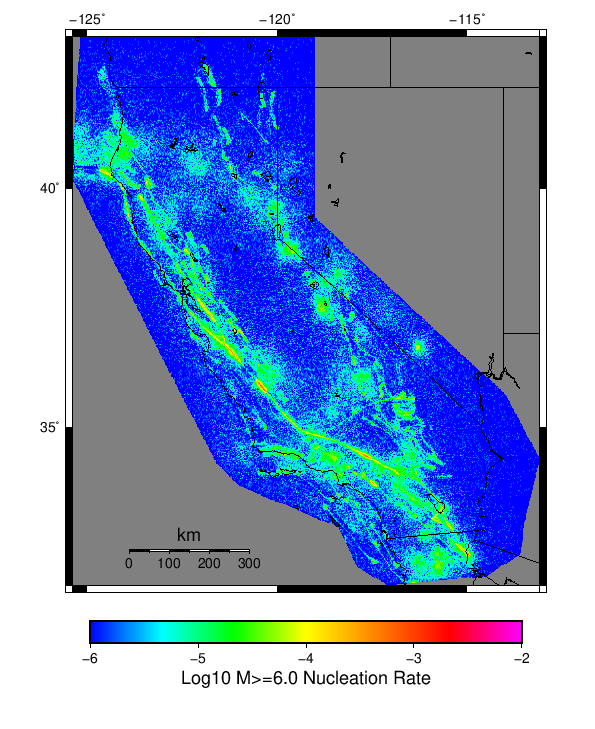 |  | |
| M≥7 |  |  |  |
{
"numSimulations": 1000,
"duration": 500.0,
"startYear": 2012,
"includeSpontaneous": true,
"randomSeed": 123456789,
"binaryOutput": true,
"binaryOutputFilters": [
{
"prefix": "results_complete",
"descendantsOnly": false
},
{
"prefix": "results_m5_preserve_chain",
"minMag": 5.0,
"preserveChainBelowMag": true,
"descendantsOnly": false
},
{
"prefix": "results_triggered_descendants",
"descendantsOnly": true
}
],
"forceRecalc": false,
"simulationName": "Start 2012, 500 yr, kCOV\u003d1.16, Spontaneous, Historical Catalog",
"numRetries": 3,
"outputDir": "${ETAS_SIM_DIR}/2019_11_05-Start2012_500yr_kCOV1p16_Spontaneous_HistoricalCatalog",
"triggerCatalog": "${ETAS_LAUNCHER}/inputs/u3_historical_catalog.txt",
"triggerCatalogSurfaceMappings": "${ETAS_LAUNCHER}/inputs/u3_historical_catalog_finite_fault_mappings.xml",
"treatTriggerCatalogAsSpontaneous": false,
"cacheDir": "${ETAS_LAUNCHER}/inputs/cache_fm3p1_ba",
"fssFile": "${ETAS_LAUNCHER}/inputs/2013_05_10-ucerf3p3-production-10runs_COMPOUND_SOL_FM3_1_SpatSeisU3_MEAN_BRANCH_AVG_SOL.zip",
"probModel": "FULL_TD",
"applySubSeisForSupraNucl": true,
"totRateScaleFactor": 1.14,
"gridSeisCorr": true,
"timeIndependentERF": false,
"griddedOnly": false,
"imposeGR": false,
"includeIndirectTriggering": true,
"gridSeisDiscr": 0.1,
"catalogCompletenessModel": "RELAXED",
"etas_k_cov": 1.16,
"configCommand": "u3etas_config_builder.sh --start-year 2012 --num-simulations 1000 --duration-years 500 --include-spontaneous --historical-catalog --etas-k-cov 1.16 --random-seed 123456789 --hpc-site USC_HPC --nodes 36 --hours 24 --queue scec",
"configTime": 1572975614427
}